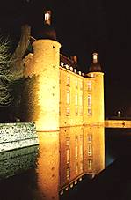
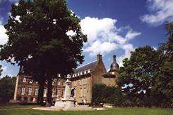
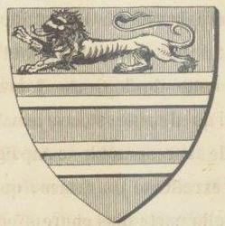
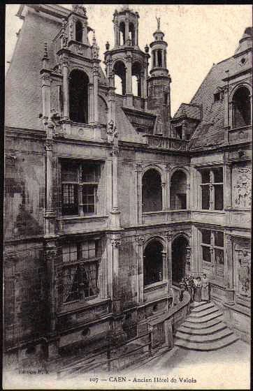
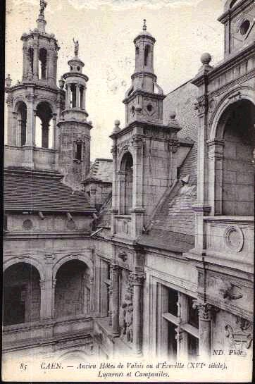
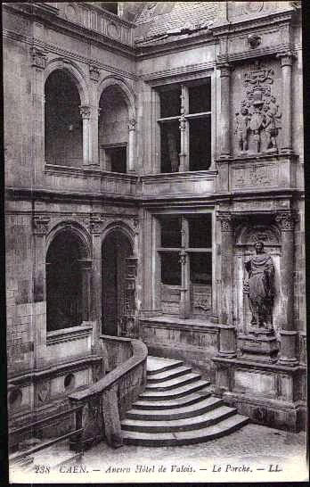
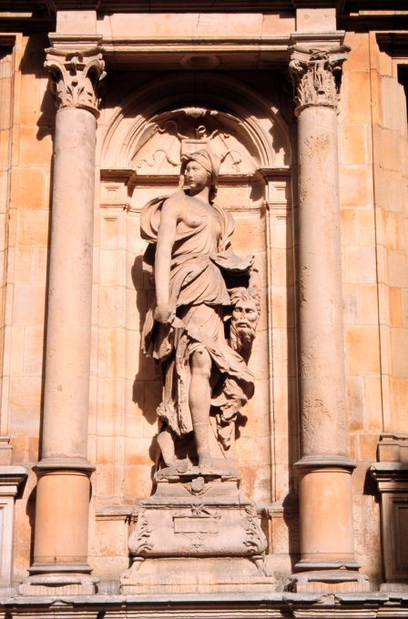
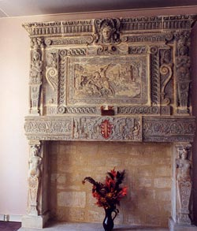
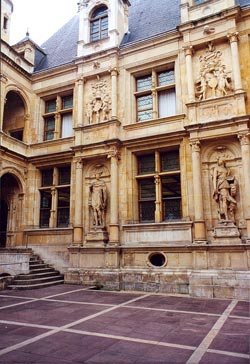

LE TRÉSOR DES TRÉSORS
De
NICOLAS GROSPARMY
ou le
Clavis Majoris Sapientiae
attribué par Chevreul à Artephius
revu le 26 février 2015Plan : introduction - quelques alchimistes normands - le blason de Nicolas de Valois - l'hôtel d'Escoville - le Trésor des Trésors -
IntroductionLa Salamandre de Lisieux a sans doute représenté un point de départ pour Fulcanelli afin qu'il évoque le sort de trois alchimistes, de trois compagnons alchimistes :
« C'étaient Nicolas de Grosparmy, gentilhomme, Nicolas ou Noël Valois, nommé encore Le Vallois, et un prêtre du nom de Pierre Vicot ou Vitecoq. Ce dernier se qualifie lui-même " chapelain et serviteur domestique du sieur de Grosparmy " [...] » [bibliothèque nationale, ms. 14789 (3032) : La clef des Secrets de Philosophie, de Pierre Vicot, prêtre ; XVIIIe siècle]
Nous avons évoqué ce trio en abordant le commentaire qu'Eugène Chevreul a donné
dans trois articles successifs [Journal des Savants], à la section du Livre secret d'Artéphius et aussi dans le commentaire de l'Introïtus VI, de Philalèthe. Ces trois compagnons nous offrent le témoignage que les alchimistes étaient, au plus haut degré, animés par l'esprit d'association. Comme le dit F. Hoefer [Histoire de la chimie, 3ème époque], ils s'attachaient un certain nombre d'amis, et se réunissaient pour travailler et rédiger en commun leurs ouvrages. Grosparmy, Valois et Vicot offrent un exemple remarquable de compagnonage. On ignore à peu près l'époque où ils vivaient ; peut-être faut-il les placer à la fin du XVe siècle ou au début du XVIe siècle. Il paraît que d'anciens historiens de l'alchimie n'évoquent pas ce trio, parmi eux Gmelin, Lenglet-Dufresnoy, P. Borel, Nazari, Bergman. Leurs ouvrages n'ont point été imprimés. Comme nous l'avons écrit dans l'Introïtus, VI, en commentaire, ces oeuvres se trouvent dans deux manuscrits, l'un appartenant à la Bibliothèque royale - ms 1642 du fonds de Saint-Germain - l'autre à celle de l'Arsenal - ms 160. in-4. Ce dernier ms, du XVIe siècle, se fait remarquer par la beauté et par l'élégance de son écriture ; c'est un des plus beaux manuscrits de la bibliothèque de l'Arsenal. On y lit sur le verso de la 1ère feuille, ces lignes tracées par une main étrangère :« Grosparmy était un gentilhommedu pays de Caux en Normandie ; il y avait, dit-on, trouvé la pierre philosophale dans son château, où il y avait une vieille tour qui fut abattue longtemps après sa mort, et dans laquelle le comte de Flers, son héritier, avait, dit-on, trouvé la poudre de projection qu'a faite Grosparmy et son ami Valois. L'abbé Vicot était précepteur des fils de Grosparmy, et il mettait en vers les découvertes alchimiques du seigneur chez qui il demeurait. »
Le traité de N. Grosparmy, très intéressant pour l'histoire de l'alchimie, est divisé en deux livres ; le premier est intitulé Abrégé de théorique, le second, le Trésor des trésors. La pensée des trois alchimistes de Flers reste connue par leurs ouvrages. Nicolas Grosparmy composa deux traités: l'Abrégé de Théorique et le Secret des Secrets, traduction assez libre de la Clef d'une plus grande Sagesse, de l'alchimiste arabe Artéfius. C'est ce traité dont parle Chevreul dans sa série d'articles sur Artephius : en effet, jusqu'en 1850, la Clef de la Sapience était attribuée à Alphonse X le Sage. Chevreul prouve que ce traité est de la main d'Artephius ; seul problème : Artephius n'a jamais existé... Dans le même manuscrit (n°160), ce traité est suivi des cinq livres de Nicolas Valois, compagnon du seigneur Grosparmy. Après celui-là, vient le livre du prestre Vicot :
« Ce livre-cy estoit doré et escrit en parchemin et lettres d'or, et relié aux quatre coins de quatre grands clous d'or ; et en iceluy est déclaré ce que ces meissieurs [Grosparmy, Valois, Vicot] avaient un peu caché, dont ce présent est la copie et l'original. Donc, ceci soit gardé sous le silence, et qu'il ne soit montré à prsonne s'il n'est parfaict philosophe et homme de bien, en peine d'encourir les tourments et peines éternelles par l'ire de Dieu. »
F. Hoefer ajoute, avec toute raison, que ceci rappelle l'histoire du livre d'or du Juif Abraham, dont parle Nicolas Flamel et qui, en fait, n'a jamais existé comme l'a montré Fulcanelli. enfin le manuscrit n° 160 est terminé par un poème alchimique : le Grand Olympe ou Philosophie poétique, attribuée au très renommé Ovide, traduit du latin en langue française. En voici un extrait :
« Après vient Saturne le noir - Que Jupiter de son manoir - Issant, déboute l'empire - Auquel la lune aspire - Aussi fait bien dame Vénus, - qui est l'airain, je n'en dis plus ; - Sinon que Mars, montant sur elle, - Sera du fer l'ange mortelle, - Après lequel apparaistra - Le Soleil, quand il renaistra - [...] »
Il s'agit là de régimes planétaires du 3ème oeuvre qui suivent [Saturne] la dissolution initiale. Voyez notre Olympe Hermétique, la Matière et le traité du Cosmopolite, ou encore les Douze portes de Ripley pour ce sujet. De Grosparmy dit qu'il termina son écrit le 29 de décembre 1449. Pour peu qu'on ait lu et qu'on se rappelle les écrits où le comte Bernard le Trévisan et Denis Zachaire parlent des peines et des déceptions de tout genre [nous avons montré à de diverses reprises qu'il s'agit d'allégories masquant des procédés techniques. Cf. section du rébus de St-Grégoire] qu'ils ont éprouvées longtemps avant d'être parvenus au but de leurs désirs, on verra l'analogie de leurs écrits avec le récit bien plus bref que Grosparmy fait de ses voyages et de ses études alchimiques.
« Nicolas de Grosparmy (dit l'auteur des remarques du manuscrit B), a fait la maison des comtes de Flers, en basse Normandie, trés illustre et trés riche, et l'original de tous ses écrits est entre les mains du comte de Flers, lesquels tient si chers et avec raison qu'il se les cache à luy mesme »
Voici quelques lignes additionnelles que nous devons à L. Gérardin [l'Alchimie, Belfond, 1972]. Ce trio d'alchimistes qui travaillait à Flers en Normandie, au début du XVe siècle, illustre cette collaboration pour l'accomplissement du Grand Oeuvre. Il s'agit du seigneur de Grosparmy, de son ami Nicolas Valois et de leur chapelain le prêtre Vicot. A la lecture de leurs oeuvres, il ressort nettement que Nicolas Valois fut l'âme du groupe, le seigneur de Grosparmy jouant les mécènes, se piquant de traiter de science. Vicot l'illuminé, à l'affût de recettes nouvelles, essayait de découvrir celle enfin capable de faire de l'or ! Aucune des oeuvres des adeptes de Flers ne fut imprimée; cependant il en existe de multiples copies manuscrites généralement très bien exécutées [la critique textuelle indique le Mss. 3019 de la Bib. de l'Arsenal (Paris) comme le meilleur. Les Mss. français 12298-9, B. N., restent les plus beaux et contiennent de remarquables illustrations sur vélin]. Ces copies, et surtout les plus anciennes, contiennent des notices historiques, témoignage de la curiosité que nos Normands ont provoquée. Leurs oeuvres auraient été composées de 1430 à 1450 alors que toutes les copies que possèdent les bibliothèques sont au plus tôt du XVIIe siècle : le fait paraît surprenant, bien qu'il existe une explication simple que voici.
Le prêtre Vicot n'a laissé aucune trace dans les archives des chartriers seigneuriaux. Aurons-nous plus de chance avec Nicolas Valois ? Peut-on le rattacher à la maison des Le Valois, seigneurs d'Escoville, localité située à une soixantaine de kilomètres au nord de Flers ? Les Le Valois apparaissent au XVe siècle en la personne de Jean Le Valois. Son fils, Nicolas Le Valois, né en 1494 et marié en 1534, fit construire un fastueux hôtel orné de sculptures symbotiques dans le goût du temps. Aucune filiation, hélas ! ne se retrouve entre ces Le Valois et notre Nicolas séparé par trois générations : coupure impossible à combler par la seule existence de sculptures symboliques sur l'hôtel d'Escoville. [...]
Le château de Flers (XVIe - XVIIIe siècles)Quant à Flers et à son château, voilà ce qu'on peut en dire, en liaison avec nos alchimistes [site consulté : http://perso.wanadoo.fr/sevi61/his/his2.htm]. Dans les cinq familles seigneuriales furent des personnages marquant :
- Foulques d'Anou qui accompagna Guillaume en 1066 lors de la conquête de l'Angleterre.
- Robert II d'Arcourt qui partit pour la croisade contre les Turcs en 1396 et combattit vaillamment en Hongrie.
- Nicolas II de Grosparmy célèbre alchimiste compagnon de recherche de Nicolas de Valois et de Nicolas D'Escoville et qui construit, au début du XVIe siècle l'aile orientale du château actuel.
- Nicolas de Pellevé qui combattit à Amiens auprès d'Henri IV pour chasser les Espagnols et qui fut récompensé par le titre de comte.Le château a aussi appartenu à la famille Tournebu entre le XIIe siècle et le XVe siècle.

Le château de Flers (XVIe - XVIIIe siècles)L'austère aile droite du château, flanquée de ses deux tours, est la partie la plus ancienne encore en place actuellement. Elle a été construite sous l'impulsion de Nicolas II de Grosparmy entre 1527 et 1541. Selon la légende, celui-ci avait acquis une fortune considérable en se livrant à des recherches alchimiques. Son aisance par ailleurs venait de la possession des Forges De Halouse qui faisaient partie de son domaine de cette époque et lui procuraient un confortable revenu. Au milieu du XVIe siècle le titre de baron de Flers revient à la famille de Pellevé dont l'un des descendants Nicolas, fit une brillante alliance avec des grandes familles de Bretagne, les Rohan. Le domaine s'enrichit de la châtellenie de Condé-Sur-Noireau et en 1598, la baronnie de Flers fut érigée en Comté.
Dans l'ensemble, ce traité ne présente pas de grandes nouveautés par rapport à tous ceux que nous avons commentés. Il est cependant plus complet que d'autres, ce qui ne veut pas dire qu'il soit plus clair pour autant. De grandes différences sont perceptibles entre le Livre Ier et le Trés Grand Secret des Secrets qui semble être une adaptation de la Clef de la Plus grande Sapience, que Chevreul attribue donc à Artephius. Des 13 chapitres de l'Abrégé de Théorique, se dégagent les 3e, 4e, 7e, 10e et 13e. L'attention est apportée sur les rapports du verre avec l'oeuvre et surtout, au 13e, le verre malléable est évoqué. Le travail sur les pierres précieuses est également évoqué dans l'introduction à l'Abrégé de Théorique et au chapitre 13. Le chapitre 3 de la Pratique montre comment préparer le tartre vitriolé. Quant au Livre II, on l'a dit, il semble écrit d'une autre main et se révèle totalement abscons, au point que de nombreux passages en sont comme incompréhensibles. Voyez Chevreul là-dessus.
QUELQUES ALCHIMISTES NORMANDS
par M. Alfred DE CAIX. Membre de la Société française d'archéologie.
Le Journal des Savants, dans son numéro de décembre 1867, contient un article du célèbre chimiste, M. Chevreul, sur le traité alchimique d'Artefius, intitulé : Clavis majoris sapientiae. L'ouvrage d'Artefius, [rappelons qu'Artephius n'a certainement pas existé, à l'instar sans doute de Basile Valentin ou de Fulcanelli...] alchimiste arabe, que l'on fait vivre au XIIe siècle, a été le point de mire des divers adeptes de la science hermétique, qui l'ont copié et traduit à différentes époques, de sorte que ces traductions ont passé pour des œuvres originales attribuées à leurs auteurs. Le seul point que je veuille mettre en lumière du travail du savant professeur, c'est ce fait intéressant pour la Normandie , et en particulier pour la ville de Flers, qu'une des traductions du Traité est due à un gentilhomme normand, seigneur et baron de Flers au XVIe siècle, Nicolas de Grosparmy, et a passé pour une œuvre originale. Le seigneur de Flers ne se livrait pas seul à la pratique du grand- œuvre; il avait deux associés : l'un était un autre gentilhomme bien connu dans les annales de la ville de Caen, il se nommait Nicolas Le Valois ; les documents que je vais citer disent de Valois, évidemment dans le but de donner un cachet plus nobiliaire à ce nom déjà fort noble. Le second était un prêtre du nom de Vicot, qui s'intitule le serviteur de ses deux associés. M. Chevreul est possesseur de plusieurs manuscrits dont il a fait l'analyse : l'un est attribué par lui à de Grosparmy, les autres contiennent les élucubrations des deux associés. Il est prouvé par le travail du savant chimiste que ces œuvres ne sont que des traductions plus ou moins libres du Clavis majoris sapientae. Le manuscrit du seigneur de Flers porte au titre :
« Ensuit la copie d'un manuscrit fait par M. de Gros Parmy (sic), seigneur et baron de Flers, et ayant acquis la dite baronnie et fait construire le chasteau du dit lieu. Lequel manuscrit contient théorie et pratique, et en dit autant que tous les autres livres ; néanmoins qu'il soit bien couvert, loutte l'œuvre y est contenue ; estant bien entendu; ce qui se peut faire par le moien des autres livres cités au présent. Au nom du grand Dieu Trin, un qui a créé toutes choses de rien, qui vit et règne sans commancement et sans fin. ......A tous féaus disciples de philosophie naturelle Salut et dilection. »
CHAPITRE Ier.
« Sçachant tous que je Nicolas Grosparmy, natif du pays de Normandie, par la volonté de Dieu, allant par le monde de région en région, depuis l'aage de douze ans jusques à l'age de vingt-huict ans : cherchant et désirant sçavoir l'art d'alchymie qui est la plus subtille partie de philosophie naturelle qui traitte et enseigne de la très-parfaite transmutation des métaux et des pierres précieuses; et comme tout corps malade peut être ramené et réduit en santé. Le dit temps durant, ay enquis comme l'un des métaux se peut transmuer eu l'espèce de l'autre, et en ce faisant, ay soutenu moult de peines et de dépences, injures et reproches; et en ay abandonné la communication du monde et la plus part de ceux qui se disoient mes meilleurs amis, pour ce qu'ils m'avoient en dédain, moy estant en nécessité, en me voulant détourner de l'inquisition du dit art pour ce qu'il leur sembloit que je m'y occupois, et que je détournoîs de mes autres
affaires, et pour a celle chose parvenir, ay quis et esté avec maint compagnon cherchant le dit art comme je faisois, cuidant le trouver par leur moien ; et pour avoir amitié et entrée avec eux, me suis fait leur serviteur, et ay soutenu la plus part de la peine de leurs ouvrages et ay veu et estudié plusieurs livres auxquels la science est contenue en deux manières, l'une fauce, l'autre vraie....... »
De Grosparmy dit qu'il termina son écrit le 29 de décembre 1539.
L'auteur des Remarques, qui commentent un autre manuscrit attribué à Nicolas Le Valois, l'associé du seigneur de Flers, parlant de celui-ci, dit :« Que Grosparmy fit la maison des comtes de Flers, en Basse-Normandie, très illustre et très riche, et que l'original de tous ses écrits est entre les mains du comte de Flers, lesquels il tient si chers, et avec raison, qu'il se les cache à luy mesme. »
Dans un autre passage il ajoute :« Ils étaient trois, qui ont possédé l'oeuvre, M. de Grosparmy, trisaïeul de M. le comte de Flers, Nicolas Valois, son amy, Pierre Vitcoq ou Vicot, son chaplain. »
Le comte de Flers dont il est ici question, comme arrière petil-fils de Nicolas de Grosparmy , était Louis de Pellevé, qui après avoir eu une superbe position, mourut dans la détresse en 1660 (Histoire de Flers, par M. le comte Hector de la Ferrière, p. 107), sans doute toujours en possession du précieux manuscrit, qui ne lui apprit point à faire l'or dont il avait grand besoin. D'après le document qui précède, la terre de Flers aurait été acquise de Nicolas de Grosparmy; mais l'auteur des Remarques est ici en contradiction avec M. de La Ferrière, qui cite à la date de 1404 un Raoul de Grosparmy comme seigneur du lieu (ibid., p. 38). La baronnie de Flers avait été érigée en comté en faveur de Henri de Pellevé, père du possesseur du manuscrit. Il paraît incontesté que notre alchimiste fut le constructeur du château de Flers, dans sa partie principale qui fait face à la ville. La portion qui fait retour est évidemment plus moderne. L'auteur de l'Histoire de Flers nous cite plusieurs incendies qui ont dû occasionner des changements. Les grandes ressources dont a disposé le gentilhomme alchimiste pour cette construction importante, bien qu'il ait été accusé à cause de l'œuvre de négliger ses affaires, ont dû confirmer ses contemporains dans la vertu de sa merveilleuse science occulte et faire courir bien des bruits mystérieux sur cette demeure, si bien gardée contre les indiscrets par ses immenses fossés. Le château, que nous admirons encore, accuse bien un travail du XVIe siècle. [1, 2, 3] L'associé de Grosparmy, Nicolas Le Valois, seigneur d'Écoville, écrivant sur la science hermétique, a raconté également ses peines et ses déceptions, et comment, avec ses compagnons , après avoir renoncé à tout commerce avec les alchimistes, ils se recueillirent dans la solitude, inéditant et lisant de bons livres, comme ceux d'Arnaud, de Raymond Lulle, etc.« Mais (ajoute-t-il), un de nous, tellement porté aux particuliers sophistiques, pour voir tous les jours nouvelles choses qui lui éblouissaient les yeux, ne les voulut quitter (les alchimistes). Or, j'avais bien 45 ans quand cela arriva en 1520 (il était donc né en 1475), et au bout de 20 mois, nous vismes ce grand Roy assis sur son trône royal, faisant une première projection sur le blanc, puis sur le rouge. Comptant le temps que j'étais en chemin, que j'ai laissé par écrit jusqu'à la perfection de l'œuvre, il ne fallut plus que 18 mois, auquel temps ledit œuvre fut accompli, encore qu'il eût manqué une fois. »
L'auteur des Remarques, qui accompagnent le manuscrit du sieur Le Valois, donne les détails suivants sur ce personnage :
« M. de Valois, de la maison d'Escoville, a composé cinq livres reliés en un même volume, où il y a au commencement une grande figure ronde enluminée, et deux fourneaux admirables, de M. de Grosparmy, par le moien des registres duquel on peut éclore les œufs et fondre l'or, lequel livre il faisoit en forme de testament à son fils, le petit chevalier..... »
Et plus loin ;« Nicolas de Valois, second amy et compagnon de science et de possession de l'élïxir, a basti une maison très-splendide à Caen et a laissé quatre terres nobles à ses successeurs, dont l'aîné porte le nom de sieur d'Escoville-Valois, grand seigneur en Normandie, près la ville de Caen..... »
« Les quatre terres que M. de Valois avait acquises, il les il a basties magnifiquement ; chaque bastiment ne se feroit pas pour cinquante mille escus ; dans l'une, il y a une chapelle, où tous les hiéroglyphes de l'œuvre sont représentés. Il avait épousé, en premières noces, une dame Hennequin, qui, par son contract de mariage, ne devoit remporter de douaire que quinze cents livres ; mais le douaire de la seconde femme a esté de plus de vingt mille livres..... » II a de plus composé un livre très-excellent et très-rare, traittant de la philosophie hermétique, tout plein de figures hiéroglyphiques, lequel est intitulé : Hebdomas hebdomadum cabalistarum magorvm bracmanorum antiquorvmque omnium philosophorum impteriœ continens..... »
L'auteur des Remarques ajoute:« M. de Valois mourut malheureusement suffoqué d'une huître qu'il avait avallée entière. »
Ce personnage a justement acquis une grande célébrité dans la ville de Caen, par la construction de l'hôtel situé place St- Pierre , qui fait encore l'ornement de la cité ; cet édifice, après avoir passé par succession à la famille de Touchet, qui le tenait du poète latin Moysant de Brieux, fut acheté par la ville , en 1733 , pour en faire un hôtel-de-ville , et, de nos jours, devint l'hôtel de la Bourse (Essais sur la ville de Caen , par l'abbé De La Rue, t. 1, p. 125). Tous les auteurs qui ont écrit sur Caen ont célébré cette somptueuse demeure. De Bras nous apprend quelques particularités sur sa construction. Il raconte que, vers l'an 1537, alors que les imaginations étaient encore fort excitées par la quantité de métaux précieux apportés à la suite de la découverte du Nouveau-Monde :
« Aucuns Allemans minéranx passèrent par Caen et se transportèrent en un village appelé Tracy, distant de quatre lieues de cette ville. Là est une montaigne d'or, si clair et si luisant que tout ce qu'on en tire semble vray or..... Comme ces Allemans s'acheminaient à ceste montaigne, l'on commençait ce plaisant et superbe bastiment, que faisait feu Nicolas Le Valois, sieur d'Escoville, près le carrefour St-Pierre, et comme l'on y fouissait à l'endroit de la maison de feu Jean de La Bigne, sieur du Londel, pour y asseoir les fondements, l'on aperçut une bonne quantité de vif-argent, dont il en fut recueilly presque un pot d'estain. Ces Allemans vouloyent qu'on se désistast de faire les fondements à cest endroit là, et disoyent que c'estait une vaine de vif-argent. Aucuns autres qui désiroyent l'advancernent de cest édifice faysoient entendre qu'un apotiquaire avoit demeuré auprès, sans en désiner le temps, et qu'il pouvoit estre coullé de son vif-argent, pourquoy ledit sieur d'Escoville se voulut désister de faire bastir à l'endroit où coulloit ceste liqueur, près le cours d'Oudon , au grand desplaisir des dicts Allemans et de plusieurs marchands qui asseuroient que c'estoit une vaine de vif-argent, et que tous les apotiquaires de plusieurs villes n'en pourroient avoir fourny une si grande quantité qu'on avoit déjà recueilly, et qui en distilloit. » (Recherches et antiquités , par Charles de Bourgueville, p. 41, édit. 1833, Caen)
De Bras raconte ainsi la fin tragique du sieur d'Escoville, inaugurant son hôtel :
« Le vendredy, jour et feste des Roys, mil cinq cens quarante et un, Nicolas Le Valois, sieur d'Escoville, Fontaines, Ménilguillaume, et Manneville , le plus opulent de la ville lors, ainsy qu'il se devoit asseoir à table, à la salle du pavillon de ce beau et superbe logis, près le carrefour St-Pierre, qu'il avait fait bastir l'an précédent, en mangeant une huître à l'escalle, luy aagé de viron quarante sept ans (1), tomba mort subitement d'une apoplexie qui le suffoqua. »(1) S'il faut s'en rapporter an passage du manuscrit cité plus haut, et qui fixe la date de la naissance de Valois à 1475, il aurait eu, 66 ans et non 47, que lui donne de Bras.
Le sieur d'Escoville , dont les armes se voient encore sur son hôtel, les avait aussi fait sculpter sur une clef de voûte de l'église de St-Jacques de Lisieux, comme ayant sans doute contribué à la construction de cet édifice, qui se faisait de son temps (Les armes de Le Valois sont : d'azur à un chevron d'or, accompagné de trois croissants d'argent, posés deux en chef, et un à la pointe de l'écu ; et un chef d'argent chargé de trois roses de gueules, Bulletin monumental, année 1847, p. 438. — Études héraldiques sur tes monuments de la ville de Caen, par MM. R. Bordeaux et G. BouetSur le territoire de la paroisse Saint-Pierre , on trouve dans la cour de la Bourse , ancien hôtel d'Ecoville, l'écusson de Nicolas LE VALOIS, seigneur d'Ecoville au XVIe siècle, qui fit élever ce pompeux édifice. Il portait : d'azur à un chevreon d'or , accompagné de trois croissants d'argent, posés deux en chef et un à la pointe de l'écu ; et un chef d'argent, chargé de trois roses de gueules (D'Hozier, Armorial général de la France, registre 1er., 2e. partie. M. POTIER DE COURCY cite dans son nobiliaire de Bretagne une famille LE VALOIS, sieur de Lauzerois, qui porte de gueules au chevron d'argent, accompagné de 3 croissants de même.). Un écusson mutilé comme le précédent, parti de Le Valois et de ........ lui fait pendant ; ce fut sans doute celui de sa femme, Marie Duval, d'une famille qui paraît avoir été différente de celle de Duval de Mondrainville. Voici une clef de voûte de Saint-Jacques, à Lisieux, aux armes de Le Valois qui, possédant près de Lisieux la terre de Mesnil-Guillaume, avait sans doute contribué à l'érection de l'église Saint- Jacques, qu'on bâtissait vers ce temps-là.
). Sa terre de Ménilguillaume était voisine de la ville. Huet, dans ses Origines de la ville de Caen, cite le logis de Nicolas Le Valois, qu'on nommait de son temps l'hôtel du Grand-Cheval,
« à cause ( dit-il ) de l'image de pierre eu bas-relief qui est au-dessus de la porte, représentant le fidèle de l'Apocalypse, monté sur un cheval. Nicolas Le Valois, ajoule-t-il, le fit bastir en l'année '15û0. »
La décoration du portail a été mutilée à la Révolution. Cet édifice, construit dans le style de la Renaissance, si fleuri, si orné d'emblèmes et de figures allégoriques, fait contraste avec le noir et sévère château de Flers, son contemporain. Les villes, en même temps qu'elles voyaient s'ouvrir une ère artistique, jouissaient déjà d'une sécurité que ne connaissaient pas encore les campagnes. Si nos alchimistes ne trouvèrent que déceptions dans la recherche du grand œuvre, ils furent singulièrement favorisés de la fortune, et ils durent passer pour bien habiles. M. Le Valois avait adressé ses cinq livres à son fils, qu'il nomme le petit chevalier, lequel était encore bien jeune ; à la mort de son père , il étudiait en philosophie. Celui-ci lui légua ses livres hermétiques et recommanda au prêtre Vicot, son serviteur , son collaborateur et son ami, d'initier son fils à la science alchimique. C'est pour remplir ces dernières intentions que Vicot adressa son Traité, composé de trois livres, au petit chevalier. Le livre de Vicot contient une très-curiense appréciation de l'emploi des métaux en médecine. Il s'exprime ainsi :
« Ces asnes de médecins mettent dans leurs restaurans et confections des fragments d'or et de perles, ne jugeant pas qu'en tel estât que l'homme prend l'or, il le rend au mesme estât, en quoy ces pendarts font bien voir qu'ils ont connaissance que dans l'or, il y a une grande vertu, mais jamais ne profitera rien tant qu'elle sera attachée à son corps, duquel elle ne pourra jamais être séparée par autre voie que celle de nostre philosophie, et ces méchants, qui ne connoîssent point cette science admirable, jettent des blasphèmes contre elle..... »
Les matières précieuses, pour avoir leurs vertus curatives, devaient, suivant les adeptes, avoir été rendues vives, et c'était là le grand secret de l'œuvre. Pour terminer sur ce personnage, je cite encore un passage des Remarques qui résume le but désintéressé vers lequel tendaient les trois philosophes :
« Ces trois associés, d'une même union, amitié, fidélité et concorde, firent le sacré magistère, et leurs livres, pour leurs successeurs , afin de laisser à la postérité lumière entière de cette science, qui y est plus clairement enseignée que partout ailleurs dans les autres livres. »
A un siècle et demi de distance, un antre gentilhomme dont la demeure était située non loin de Flers, messire Jean Vauquelin, seigneur des Yveteaux et le dernier du nom qui ait possédé cette terre, connut les œuvres de nos alchimistes et marcha lui-même à la recherche de la pierre philosophale. M. Chevreul cite un écrit de ce personnage, intercalé dans le volume manuscrit attribué à Nicolas de Grosparmy, intitulé :« Recueil par extrait de quelques philosophes adeptes, par ordre alphabétique, où sont reportez (sic) quelques-uns de leurs passages, avec quelques traits de leur vie, par messire Jean Vauquelin, chevalier seigneur et patron des Yveteaux (1700). »
Personne ne pouvait être plus à même de connaître les particularités historiques sur les associés que ce normand. M. des Yveteaux, à l'article Valois, dit que :
« Celui-ci acheva le grand œuvre en la ville de Caen, où les hiéroglyphes de la maison qu'il y fit bâtir et que l'on y voit encore en la place St-Pierre, vis-à-vis de la grande église de ce nom, fontfoy de sa science . »
[On ne voit présentement aucune trace de ces hiéroglyphes dans l'hôtel de la place St-Pierre. Une des façades intérieures est ornée des figures de David et de Judith se faisant pendant]On se rappelle que ce personnage avait fait graver les hiéroglyphes de l'œuvre dans une chapelle de l'une de ses terres. M. Choisy , dans sa charmante description du château et
des jardins des Yveteaux, lue à la session de 1864 de l'Association normande , tenue à Falaise , dit de Jean Vauquelin :
« C'était un homme d'étude. Il avait, dans son château , un vaste et riche laboratoire de chimie , science sur laquelle il aurait composé quelques ouvrages. A certaines expressions grosses de mystères, et en grand honneur chez les alchimistes, il est de plus fort à croire qu'il a été un adepte des passionnantes chimères du grand œuvre. »
J'ai été à même d'acquérir la certitude de ces allégations. A la mort de l'avant-dernier propriétaire du domaine des Yveteaux , un gros manuscrit in-folio me fut confié pendant deux ou trois jours seulement ; je ne sais où il a passé. Ce manuscrit fut rédigé, en l'année 1700 , par un personnage resté inconnu, lequel se rendant de Paris à Brest, par le messager de Rennes, se trouva incommodé à Argentan ; néanmoins , il poussa encore jusqu'à Fromentel, où le messager dîna (il n'y avait pas alors de gare de chemin de fer). Le voyageur le laissa continuer sa route, se trouvant incapable d'aller plus loin. Quelques jours de repos le rétablirent ; le dimanche suivant, il se rendit à pied à la messe, dans l'église des Yveteaux , où le seigneur du lien qui y assistait, l'ayant aperçu, lui offrit une place dans son banc, le conduisit à son château , dans son carrosse, et lui donna l'hospitalité, dont celui-ci profita pendant un an , entre ce seigneur et sa charmante fille unique, qui épousa plus tard M. Carel, conseiller au Parlement de Paris, qui devint ainsi possesseur du domaine des Yveteaux. L'étranger paya l'hospitalité qui lui était donnée par de nombreux travaux sur le grand œuvre, dont le souvenir fut conservé dans le volumineux manuscrit, dont la lecture me parut alors très-fastidieuse, m'attachant particulièrement aux recherches historiques sur les Vauquelin, dont l'étranger avait fait aussi son occupation , trouvant un moyen délicat d'acquitter sa dette de reconnaissance. Il est triste pour l'humanité de voir des hommes instruits et intelligents s'attarder ainsi à la suite de l'alchimiste arabe et s'approprier ses doctrines, résumant toutes les erreurs qui eurent cours en plein moyen-âge , relatives à l'influence des astres sur les êtres vivants et sur les matières inertes. Je dois renouveler en terminant ces détails curieux, eu égard aux lieux et aux noms propres qui sont nommés, que je les ai empruntés à l'excellent article du savant académicien, qui en a tiré des déductions extrêmement intéressantes pour la science.

Armes de Grosparmy : de gueules aux jumelles d'argent,
au lion passant de même et posé en chef [in Laroque, Histoire d'Harcourt,
t. II, p. 1106]
L ’hôtel d ’Escoville est le plus célèbre bâtiment de la Renaissance caennaise avec l’abside de l’église Saint-Pierre.Son commanditaire est Nicolas le Valois d’Escoville. Son père était un riche marchand anobli en 1522. Né en 1475,on lui attribue une haute intelligence, le goût de la construction et du faste, une immense fortune et, de manière plus curieuse, des préoccupations alchimistes. Le choix du site de son hôtel n ’est pas neutre : la place Saint-Pierre est le cœur de la ville ; c’est là qu’ont lieu les fêtes et cérémonies publiques. C’est là que s’élève l’église la plus richement décorée, c’est là que s’élève la maison de ville sise sur le pont Saint- Pierre (détruite fin XVIIIe, mais conservée en souvenir dans le blason municipal). L’habitat y est dense et Nicolas le Valois doit acheter des maisons pour les faire abattre et faire place nette pour son projet novateur. Les travaux commencent en 1533. En 1535, le pavillon et l’aile droite sont achevés, ainsi qu’en témoignent des dates inscrites sur les meneaux des fenêtres. Le corps de logis qui longe la rue Saint-Pierre (en grande partie reconstruit après 1944) n’est commencé qu’en 1537, sans doute par Blaise Leprestre, un des principaux architectes locaux avec son fils, Abel, et Hector Sohier. On attribue au même Blaise Leprestre d ’autres constructions : à Caen la maison de la tête de mort, rue Caponière et, à Fontaine- Henry, le pavillon sud (on y trouve aussi une remarquable sculpture de Judith et Holopherne). Les autres bâtiments ont parfois été attribués à Sohier sur la base de similitude de style et d ’inspiration (mélange de sujets chrétiens et païens dans la décoration sculptée). La loggia témoigne de l’influence italienne en France. Elle laisse à l ’air libre un espace de communication (escalier, couloir) destiné à un bref passage (escalier d’Azay-le-Rideau ou escalier à vis de l ’aile François Ier à Blois). La loggia renvoie à une autre formule, horizontale celle-là, qui va prendre un essor marqué à la Renaissance, celle de la galerie extérieure, comme à Blois (la façade « des loges ») sur le modèle de celle que Bramante réalisa au Vatican pour Jules II. Avec les deux statues de David et Judith, nous quittons l’univers païen de la Grèce antique pour pénétrer celui de l ’Ancien Testament. Héros bibliques tous les deux, même si Judith est plus une allégorie de la résistance qu’un personnage historique, ils ont en commun d ’avoir tué des adversaires notoirement plus puissants qu’eux, David encore jeune berger en abattant le géant Goliath d’un simple coup de fronde, Judith en décapitant Holopherne pendant son sommeil. Par son nom (Judith : Yehoudith,« la juive ») et par son comportement, elle est l ’incarnation des vertus proposées en exemple au peuple juif qui, s ’il a confiance en Dieu, peut vaincre des ennemis redoutables. Judith et David ont en plus en commun d’avoir décapité leur ennemi avec sa propre épée. Ces deux personnages ont largement inspiré peintres et sculpteurs : Donatello dans le bronze, Boticelli en peinture (Judith) et Le Caravage ; Michel-Ange en sculpture (le David de Florence en 1504). Nicolas le Valois ne jouit pas longtemps de son palais. En 1541, il succombe à une crise d ’apoplexie lors d’un festin d’huîtres. L’hôtel particulier que constitue l’hôtel d ’Escoville est d’un type nouveau au XVIe siècle. Il s’oppose à l ’habitat traditionnel caennais non pas tant dans le choix des matériaux – la pierre de Caen fut largement utilisée dès le XIIe siècle pour l ’habitat civil particulier – que par son élévation et son plan. En effet, dans un cadre souvent restreint et un parcellaire figé, il est d ’usage de construire sur trois, voire quatre niveaux et de préférer les constructions à mur pignon, s’étalant sur une parcelle profonde mais étroite, perpendiculaire à l ’axe de la rue. C’est le cas des deux maisons 52-54 de la rue Saint-Pierre. L’hôtel particulier type Escoville ou Mondrainville (détruit en 1944, emplacement de la Caisse d’Épargne) a dû frapper les contemporains plus encore par sa vaste emprise au sol, son plan ordonné autour d ’une cour, sa disposition régulière, sa séparation entre espaces publics et privés que par la richesse de sa décoration. Il suit en cela la disposition des grands palais urbains florentins du XVe, comme le palais Médicis.

CAEN - ancien hôtel de Valois
CAEN - ancien hôtel de Valois (lucarnes et campaniles)
CAEN - ancien hôtel de Valois, le porche
L'hôtel d'Escoville est formé de trois corps de logis. Le premier, en façade sur la place Saint- Pierre, est décoré de huit grandes colonnes d'ordre composite et d'une porte, dont le tympan offrait jadis un bas-relief représentant le Fidèle ou le Véritable de l'Apocalypse, à cheval, ce qui avait valu à cette demeure le nom vulgaire d'hôtel du Grand-Cheval. Dans la cour, devant le visiteur, se dresse un autre bâtiment composé de trois pavillons d'ordre corinthien et remarquable par l'heureuse et savante disposition des lignes. Au centre de ce corps de logis, un grand pavillon à haute toiture est surmonté de la plus splendide lucarne qu'un artiste ait jamais pu imaginer; mais on préfère souvent à ce pavillon un ravissant escalier en spirale qui se trouve à l'angle du bâtiment. A propos de cet escalier, placé en arrière d'un péristyle couvert et formé par deux loges, on a rappelé Chambord et la fameuse lanterne de Tiraqueau. d C'est aller un peu loin, dit avec raison Léon Palustre, et rien n'autorise, en réalité, un rapprochement qui ne peut que jeter le trouble dans les idées et empêcher de mettre chaque chose en sa place. La tour à double coupole élevée par l'architecte de Nicolas Le Valois est déjà assez belle par elle-même sans que l'on exagère encore son mérite. Avec son diminutif à pans coupés, que surmonte une sorte de petit temple monoptère, peu fait pour cacher une statue de Priape, dont l'apparition à cette place ne manque pas de fournir matière à d'étranges réflexions, elle achève de mouvementer les lignes d'un édifice regardé à bon droit comme un des chefs-d'œuvre de l'architecture française (Léon Palustre, La Renaissance en France, t. II, p. 311.) ». Le corps de logis principal formant le côté droit de la cour se rejoint en retour d'équerre aux deux autres parties. La réunion des deux étages en un seul l'a fort mutilé. Deux grandes niches hardiment dessinées abritent deux statues aux formes trop élancées, mais d'un style excellent : David tenant la tête de Goliath et Judith celle d'Holopherne. Puis,

Statue de Judith, dans la cour de l'Hôtel d'Escoville
dans la partie supérieure des trumeaux, on admire la plus singulière et la plus riche décoration héraldique qu'on ait jamais inventée: deux écussons tenus, l'un par des génies, l'autre par des nymphes, sont soutenus chacun par un homme qui est censé placé en arrière du mur et dont la tête sort d'un oculus feint de la frise, tandis que son bras émerge de l'épaisseur de l'entablement. Ajoutons que toutes les parties de l'édifice sont ornées de lucarnes monumentales, de bas-reliefs, de têtes de personnages historiques ou légendaires, de ce qu'on appelait des hiéroglyphes, avant qu'on ne sût ce que c'est que des hiéroglyphes, et d'inscriptions plus ou moins énigmatiques, le tout inspiré par des passages du Songe de Poliphile ou symbolisant peut-être les idées des adeptes du « grand œuvre », car Nicolas Le Valois s'occupait avec ardeur de la science hermétique, sur laquelle il a laissé de volumineux manuscrits. M. de Beaurepaire est disposé à croire qu'Hector Sohier, l'architecte de l'abside de Saint-Pierre (On doit aussi très probablement à Hector Sohier l'abside de Saint-Sauveur de Caen et les curieux châteaux de Lasson, à 10 kil. de Caen, et de Chanteloup, dans le département de la Manche, entre Granville et Coutances.), fut aussi celui de l'hôtel d'Escoville.
« II est tout d'abord impossible, dit l'auteur du Caen illustré, de ne pas remarquer que l'hôtel d'Escoville et l'abside de l'église Saint-Pierre, situés vis-à-vis l'un de l'autre sur la même place, appartiennent sensiblement à la même époque. Les travaux de l'abside embrassent un espace de vingt-sept ans, de 1518 à 1545 ; les travaux de l'hôtel, commencés Vers 1538 (Et non en 1530, comme le ferait supposer une des rares fautes d'impression du Caen illustré, faute d'autant plus regrettable qu'elle pourrait induire le lecteur en erreur.), étaient terminés en 1541. Les deux constructions nous offrent d'ailleurs une infinité de détails à peu près identiques ; les disques, les oculus, les personnages à relief saillant qui émergent d'ouvertures simulées, se retrouvent dans l'une comme dans l'autre; et, chose plus frappante encore peut-être, le mélange des sujets sacrés et mythologiques, que nous avons signalé sur la façade de l'hôtel d'Escoville, constitue également une partie de la décoration des pendentifs de la voûte du rond-point. L'architecte de l'église ressemble à l'architecte de l'hôtel par les procédés techniques et par la manière de comprendre les motifs d'ornementation. Pourquoi, dès lors, en l'absence de toute indication contraire, n'y verrait-on pas un seul et même personnage ? Ces raisons, qui avaient porté Raymond Bordeaux à faire honneur à Hector Sohier de l'hôtel d'Escoville, nous impressionnent dans le même sens. Cette opinion n'a pas pour elle une certitude absolue, mais elle nous paraît présenter les caractères d'une très grande probabilité ».
J'en demande pardon à mon savant maître et ami, mais je ne suis pas convaincu; et, pour soumettre au lecteur toutes les pièces du procès, on me permettra de reproduire ici l'argumentation que j'ai présentée ailleurs.
« A quel architecte Nicolas Le Valois a-t-il confié la construction de sa splendide demeure ? On a beaucoup discuté sur ce problème et personne n'en a trouvé la solution. Comme tant d'autres, cette œuvre de génie est encore anonyme. Longtemps on a répété que l'hôtel d'Escoville avait été élevé par des artistes italiens ; on précisait même et on les disait florentins. Puis, on a prononcé, assez timidement, il est vrai, le nom de Blaise Le Prestre, en se basant sur un passage peu explicite où Jacques de Cahaignes parle du bas-relief de l'Apocalypse (Elogiorum civium cadomensium centuria prima, p. 22). Trébutien cite, à ce propos, des lettres adressées à Huet par le médecin Dubourg et par le P. de La Ducquerie, lettres qui donnent des détails curieux, mais qui ne nous apprennent rien de l'architecte ou du sculpteur. Voyons ce que dit Cahaignes, dans son Éloge 14, consacré à Hector Sohier, à Blaise Le Prestre et à Abel, fils de ce dernier. »

cheminée de l'hôtel de Valois avec saint Georges
On peut juger à Caen de toutes les phases de cet art (l'architecture), aussi bien dans les maisons particulières que dans les monuments religieux. Ces édifices ont été élevés par nos concitoyens, sous la direction d'artistes distingués; je n'en citerai que quatre. Dans cette partie de l'église Saint-Pierre, que nous autres Français nous appelons » cœur », ou, pour mieux dire, « chœur », et dans les bas-côtés, on voit de superbes voûtes, construites avec une grande perfection par Hector Sohier ( En l'an 1521, fut commencé ce beau et magnifique Rompoinct et les Voûtes de l'église de sainct Pierre de Caen «.Ch. de Bourgueville, sieur de Bras, Les Recherches et Antiquités de la Ville et Université de Caen, p. 137). A l'entrée de l'église mise sous le vocable de saint Gilles, on voit un œuvre artistement travaillé, dû à Blaise Le Prestre ; les proportions en sont si bien conçues qu'il a été l'objet de l'admiration des gens de l'art. De chaque côté de l'entrée de cette belle demeure, que fit élever Nicolas Le Valois, en son vivant le plus notable des habitants de la ville à cause de l'immensité de ses richesses, on remarque deux colonnes rehaussées d'ornements d'architecture; leur style est celui qui était alors en vogue en France ; au-dessus on voit un grand cheval que monte un géant. Ce sujet est en pied et ressort en haut-relief avec beaucoup d'art. Au-dessous se profilent, avec une saillie d'un pouce, nombre de petits personnages. Les proportions de toutes les parties de cet édifice sont si heureusement combinées et répondent si bien à la grandeur de l'ensemble que les plus fins connaisseurs ne peuvent se lasser de l'admirer. Je ne dois pas non plus passer sous silence ce morceau d'architecture qui décore la porte d'entrée de ma modeste demeure. D'après Rémy Rosel, architecte à Paris, c'est moins à la composition des matériaux qu'à l'art avec lequel ils sont travaillés qu'elle doit sa supériorité sur tout ce qui existe à Caen en ce genre. Cette façade, d'ordre dorique, bien symétriquement coordonnée, fut construite aux frais de mon père, sous la direction d'Abel Le Prestre, fils de Blaise. Ce fut son dernier ouvrage, car il mourut, après l'avoir terminé; mais les dernières œuvres des plus grands artistes sont souvent les meilleures »....
Ce qu'il faut retenir de ce passage des Éloges des citoyens de la ville de Caen, c'est que leur auteur cite « quatre édifices élevés par ses concitoyens, sous la direction d'artistes distingués », et que de ces artistes il n'en nomme que trois, auteurs de trois œuvres qui ne leur sont pas contestées. Mais, s'il vante l'hôtel de Nicolas Le Valois, il ne nous indique pas le nom de son constructeur.
« Ne serait-ce pas tout simplement parce que cet architecte n'avait pas vu le jour à Caen ? Il est bien permis de le croire. Toutefois si cet artiste oublié n'est pas né sur les bords de l'Orne, faut-il pour cela le supposer Italien ? Nous ne le pensons pas. Les architectes d'au delà des Alpes, auxquels on a attribué tant de palais et de châteaux, ont bien moins travaillé en France qu'on ne l'a si longtemps prétendu. En Normandie, par exemple, les églises et les grands édifices élevés au XVIe siècle sont l'œuvre d'artistes du pays, disciples eux-mêmes des maîtres du siècle précédent. C'étaient des Normands, ces hommes si habiles qui s'intitulaient modestement « maçons » ou « tailleurs d'images », et qui ont bâti, achevé ou décoré la cathédrale de Rouen, le portail de la Calende et le porche de la cour des Libraires, le château de Gaillon, l'abbaye de Vallemont, les églises de Saint-Étienne d'Elbeuf, de Caudebec, de Dieppe, de Saint-Jacques de Lisieux, d'Argentan, de Gisors et de leurs environs. II était aussi Français et peut-être Normand celui auquel Nicolas Le Valois confia le soin de tracer le plan de son opulente demeure et de la construire. Mais quel est son nom ?
« A coup sûr, ce n'est pas Abel Le Prestre, mort tout jeune avant que l'hôtel d'Escoville ne fût commencé. « Très probablement, dit Léon Palustre, il disparut avant son père, nommé Blaise, qui, de 1510 à 1520, était encore dans la force de l'âge, puisqu'il dotait l'église Saint-Gilles d'un portail grandement admiré par Cahaignes. Nous ne nous en occuperons pas cependant, puisqu'il s'agit d'une composition encore gothique et qui n'a nul rapport, quoi qu'on ait essayé de prouver le contraire, avec l'ancienne façade de l'hôtel Le Valois ou d'Escoville, sur la place Saint-Pierre. Cet édifice, on le sait, ne fut commencé qu'en 1538, et Blaise Le Prestre, s'il vivait encore à pareille date, n'était certainement pas capable du prodigieux effort nécessité par une aussi complète transformation. Le texte des Éloges n'autorise d'ailleurs aucunement l'attribution dont nous parlons (L. Palustre ajoute en note : « Immédiatement après la phrase relative à l'église Saint-Gilles, Jacques de Cahaignes s'étend, il est vrai, sur l'hôtel Le Valois ; mais rien ne fait supposer que, dans sa pensée, les deux édifices soient du même architecte ».). Sans doute, les architectes nommés ne sont qu'au nombre de trois, tandis qu'il est successivement question de quatre chefs-d'œuvre différents. Mais qu'en faut-il conclure, sinon que Jacques de Cahaignes a oublié de nous renseigner sur un point qu'il eût été très désirable de fixer. Toute la construction n'a rien de gothique et ce n'est pas dans ce sens qu'il faut prendre l'expression : « à la mode française », appliquée par le médecin historien aux colonnes de l'entrée. Il a voulu seulement dire que, de chaque côté de la porte, se trouvaient deux colonnes disposées non sur un môme plan, comme cela se pratique dans l'architecture classique, mais en retraite l'une sur l'autre, ainsi que nous le voyons dans tous les monuments du moyen âge. Le dernier argument invoqué par les partisans de Blaise Le Prestre se trouve donc, lui aussi, privé de valeur (L. Palustre, La Renaissance en France, t. II, p. 227-228) ».
« L'artiste employé par Nicolas Le Valois connaissait assurément, au moins par des plans et des dessins, les œuvres des architectes italiens de son temps. Il avait entre les mains le Songe de Poliphile, ce roman philosophique si connu alors par d'innombrables éditions illustrées, et il s'en est inspiré dans ses décorations et dans sa construction du petit temple qui, près de la lanterne, abrite un singulier simulacre du dieu des jardins. Mais l'ensemble de son œuvre est bien française ; bien françaises aussi sont les deux grandes figures de David et de Judith, avec leurs formes élancées, caractéristiques de notre statuaire du moyen âge et que nos artistes ont longtemps imitées.
« En terminant, nous devons faire remarquer les analogies qui existent, dans l'ordonnance générale et les détails, entre l'hôtel Le Valois et le gros pavillon du château de Fontaine-Henry (Canton de Creully (Calvados)). On constate aussi une ressemblance frappante entre ces édifices et le « Casino » élevé par les soins d'Étienne Duval et dont nous parlerons bientôt. A l'hôtel Le Valois, comme à Fontaine-Henry, l'architecte a notamment placé l'effigie victorieuse de Judith, et bien d'autres particularités prouvent que les deux édifices sont de la même main. Le gros pavillon de Fontaine-Henry fut, d'ailleurs, bâti à la même date que l'hôtel d'Escoville— il porte la date de 1537 — pour Jean d'Harcourt, seigneur de Fontaine-Henry, lieutenant du Roi au bailliage de Caen, personnage avec lequel Nicolas Le Valois se trouvait en rapports quotidiens On peut donc supposer sans témérité que celui-ci s'adressa, pour élever sa demeure, à l'architecte d'incomparable talent que Jean d'Harcourt avait alors à son service.
« Et le jour où quelque heureux hasard dévoilera l'auteur de l'une des deux constructions, nous saurons en même temps à qui attribuer le second de ces chefs-d'œuvre et d'autres édifices qui font si grand honneur à l'art français de la Renaissance (Emile Travers, L'ancien hôtel d'Escoville à Caen, dans La Normandie monumentale et pittoresque (Calvados), pp. 88-90) ».

Hôtel d'Escoville
--------------------
Notes : Nous ne donnons plus qu'une seule référence - l'occurrence la plus pertinente - pour les termes de chimie rencontrés. Les notes sont insérées dans le texte afin d'en faciliter la lecture.
Plan : Livre premier I. première partie [Abrégé de théorique - le second chapitre (Des minières auxquelles j'ay ouvré et les effets) - le tiers chapitre (des primordiaux chapitres en l'oeuvre de Nature) - le quatrième chapitre (de quels principes le magistère est fait) - le cinquième chapitre (de la division des trois genres) - le sixième chapitre (de quelle manière est formée notre pierre) - le septième chapitre (de solution) - le huitième chapitre (de sublimation et congélation) - le neuvième chapitre (quelle est la matière de notre pierre) - le dixième chapitre (comme en tous lieux on peut trouver notre pierre) - le onzième chapitre (de la conjonction du mâle et de la femelle) - le douzième chapitre (du menstrual puant auquel est le feu contre nature) - le treizième chapitre (des extrêmes de notre vif-argent) - fin de Théorie] - II. deuxième partie [Pratique - le second chapitre (de la préparation) - le tiers chapitre (de faire le menstrual) - le quatrième chapitre (de la mixtion des matériaux) - le cinquième chapitre (élixir rouge) - le sixième chapitre (de la projection) - le septième chapitre (des essais de fusion) - le huitième chapitre (de l'examen des cendres) - le neuvième chapitre (de l'examen du ciment) - fin du Ier Traité - Livre second : le Trés Grand Secret des Secrets [chapitre premier (des premiers principes de nature) - chapitre deuxième (de la génération des minéraux) - chapitre troisième (de l'engendrement de l'animal)] - Pratique [chapitre premier (des principes praticaux et de leur préparation) - chapitre deuxième (de la première médecine simple composée) - chapitre troisième (seconde médecine plus parfaitement clamée) - chapitre quatrième (de l'oeuvre végétable) - chapitre cinquième (de l'oeuvre animale) - opération ou composition pour le blanc - opération au rouge]
Au nom d'icelui Dieu qui vit et règne trois personnes en unité, sans commencement ni sans fin, Père, Fils et S. Esprit, A tous féaux Disciples de Philosophie, Salut.
Sachent tous que je Nicolas de Grosparmy, natif du pays de Normandie, par la volonté divine allant par le Monde de région en région, depuis l'âge de vingt-deux ans jusqu’en l'âge de trente-huit, cherchant et désirant savoir l'art de l'Alchimie (qui est la plus subtile partie de philosophie naturelle, qui traite et enseigne la très parfaite transmutation des métaux et des pierres précieuses [il est rare que d'entrée de jeu l'Adepte donne à penser que l'alchimie n'est pas seulement le jeu illusoire des pseudo-transmutations. Voilà qui mérite une mention spéciale] ; et comme tout corps malade peut être ramené et réduit en santé) ledit temps durant ay enquis comme l'un des métaux se peut transmuer en l'autre, et en ce faisant ay soutenu moult de peines, dépenses, injures et reproches, et ay abandonné la communication du monde, et la plus part de ceux qui se disaient mes meilleurs amis, pour ce qu'ils m'avoient nui étant en nécessité, et moi voulant détourner dudit art, pour ce que je m'y occupais, et que je n'étais pas tendu à faire les nécessaires, ainsi comme j'eusse été si je n'eusse eu aucune occupation : Et icelle chose ai requise et ai été avec maints compagnons cherchant ledit art comme je faisais, croyant le trouver par leur moyen ; et pour avoir amitié et entrée avec eux, me suis fait leur serviteur et ai soutenu la peine de leurs ouvrages, et ai vu et étudié plusieurs livres auxquels la science est contenue en deux manières, l'une fausse l'autre vraie, la vraie mêlée parmi la fausse [nous sommes ici renvoyés à une sorte de miroir : quel est le bon reflet ? Est-ce le mirage des transmustations ou est-ce la science positive des transformations minérales ?] ; suivant iceux livres par l'espace de douze ans, ou environ, maintenant selon une manière, et tantôt selon une autre, et en ce n'ay rien trouvé, et m'en suis presque trouvé tout nu et hors de chevance. [Grosparmy suit une ligne de conduite qui lui est dictée par les exemples de Bernard Le Trévisan et Denis Zachaire ; Cyliani, dans son Hermès Dévoilé, suit une semblable démarche] Ainsi comme désespéré de la Science et rebuté de ceux en qui j'avais la plus grande fiance, prêt à m'en aller en lieu où je n'eusse nulle connaissance, et si ce n'eût été la grâce du S. Esprit qui donne lumière à qui il lui plaît et nouveau confort, j'étais homme désespéré, pour ce qu'il me semblait que j'étais ainsi comme insensé devant le monde, lequel est ennemi de la pure vérité du très noble et haut secret susdit, appelé Don de Dieu, lequel il donne à qui il lui plaît, et icelui veux décrire aux Enfants de vérité désirants ensuivre icelle et venir après nous, afin qu'iceux ne soient ainsi mortellement navrés, comme j'ai vu mes Compagnons et moi aussi, et qu'ils puissent venir à icelle vérité et confort. Car, comme déjà est dit, icelui S. Esprit nous inspira en telle manière que nôtre Entendement fut ouvert, la figure ôtée du dedans. Et pour ce, vous qui voulez venir à icelle vérité, fort aurez à faire en brièveté de temps, de concevoir icelle Science, si par aucun Maistre n'estes introduits, ou si de jeunesse ni été appelés, qui l'entendement y avance. Car quoiqu'un homme ait bon entendement et naturel, et qu'il ait vu tous les Livres appartenant à icelle Science, et fait tous les essais qu'homme humain peut faire, maintenant pour ce, ne peut-il venir à la fin d'icelui secret, s'il n'est de la secte des Philosophes, ou si par aucuns d'iceux n'est introduit et mené, comme dit est ; car à celui qui par lui le trouve, ce lui est comme miracle, grand secret, et trésor enchanté ; pour ce que les Philosophes anciens par la volonté de Dieu régnant en leurs cœurs firent Livres obscurcissant icelle. Et aux ignorants et amis des délices mondaines, ténébreux et aveuglés, pleins d'iniquité, ne peut icelle Science être découverte, pour ce que s'il était autrement, autant en aurait le mauvais comme le bon, et serait toute autre Science avilie, pour l'avarice et convoitise et voudraient procurer l'un l'autre, et ne tenir d'aucun : par quoi conviendrait que justice faillît et que le monde fût détruit.
Et pour ce, ceux qui se par forcent de pratiquer icelle, sans être Théoricans, se pourraient avant user et leur bien, avant que jamais y puissent parvenir, sans les points ci-dessus nommés. Et si n'est pas de pesant labeur, à qui entend comment. Et si n'est pas de si chère matière composée quant à la quantité, qu'homme se puisse excuser du dessus dit ouvrage. Car pour un grain de la semence métallique on la peut multiplier jusqu’à nombre infini le monde durant.
Car si un grain de la première composition dudit ouvrage, nommé la Pierre des Philosophes, agit sur 100, la 2e agira sur 1 000, la 3e sur 10 000, et la 4e sur 100 000, etc. Car ainsi comme tu vois d'un grain de blé en venir mille, et de mille, cinq cens milliers, entends ainsi des métaux ; car tout se fait par nature, dont l'art est le ministre ; [cette soi disant multiplication constitue le pont aux anes des apprentis alchimistes à qui les Adeptes éprouvés font miroiter monts et merveilles] car art supplée aucunes fois les défauts de nature ; car ce qu'elle fait en mille ans seule, elle le fait en un jour aidée de l'Art ; car ce ne sont pas les gens qui font la transmutation, mais c'est nature, et ne lui faut qu'administrer les matières ; car si la matière lui est dûment administrée, au regard des principes naturels, et bien informée par le sage Ouvrier, tantôt elle est preste et diligente de mener sa nature aux individus de l'espèce présente ; et pour ce, garde-toi, avant qu'aucune chose veuilles pratiquer, que tu saches et connaisses avant mettre la main à l'œuvre, les vrais matériaux convenables à ce, et bonnement ne les puis savoir, si plusieurs Livres n'as étudiés ; car ce que l'un te clora, l'autre te l'ouvrira, quoiqu'ils te pourront sembler différents, et qu'il y en a plusieurs faux auxquels il y a recette de pratique, laquelle pratique est fausse, comme ci après sera déclaré.
Et pour ce je te conseille que tu quères Livres approuvés, si comment sont R. Lulle et Arnauld de Villeneuve, auxquels est la Science contenue au vrai, et sont trois Livres, dont le premier est la Théorique, en laquelle est la spéculation et la division des autres Livres. La 2e partie est la Pratique, en laquelle est la manière d'œuvrer, moyennant la Théorique entendue ; car elle corrige et amende la faute d'icelle pratique ; par ce qu'icelle pratique écrite, n'est que le miroir de la vérité de la Maîtrise, le Codicille qui est nommé Vade mecum, contient partie de Théorique, l'une proche et l'autre lointaine au regard du fait, et partie de pratique, l'une fausse et l'autre vraie, et toutefois est toute vérité à celui qui l'entend. Mais les plusieurs qui la croient usurper indûment, quand ils croient entendre au vrai ce qu'ils lisent, et qu'ils viennent à le pratiquer, ils s'en trouvent plus loin que devant, et disent que la Science est fausse, et que les Philosophes ont menti ; mais nous qui avons vu de nos yeux et tenu de nos mains les métaux transmués, tesmoignons que la Science est vraie, et que les Philosophes ont vrai dit ; laquelle chose n'eussions pas crû et en faisions doute, si de nos propres yeux, comme dit est, ne l'eussions vue.
Et quoique les envieux amis du monde, comme sont Légistes, docteur, officiers et autres clercs, jongleurs, veuillent réprouver et dire le contraire, à nous n'en chaut. Et pour ce te prions être secret et de telles gens comme eux et autres faux traîtres mangeurs de Peuple, renieurs de Dieu, enfants du Diable et à Diables donnés, dont les plusieurs s'efforcent de nous dérober nôtre philosophie ; mais ils se trouvent si voleurs qu'ils en perdent la vie. Et outre, s'il advient que Dieu te la donne, par quelque aventure, tiens la secrète et spécialement des grands Seigneurs et de tous autres gens, fors d'aucun Compagnon, lequel tu aie éprouvé et trouvé t'être véritable sans aucune fixion, et qu'il soit de bonnes mœurs, et serve Dieu, sa Mère et ses Saints, en accomplissant les œuvres de miséricorde, et n'en veuille maintenant vivre plus délicieusement, ne n’abuser autrui ; afin que Dieu ne prenne vengeance de toi.Des minières auxquelles j'ay ouvré et les effets que j'ai fait, des divers Vaisseaux et Instruments dont j'ai usé, etc.
Aucuns ouvrent de Vitriols, Alums, Attramens, Sels et de toutes manières de drogueries, comme sont Antimoine, Tutie, Magnésie, Calamine, Marcassites, et toutes manières de borax. Les autres prennent les quatre Esprits savoir l'Orpiment, Sel armoniac, Souffre et Vif argent, et sont dits Esprits pour ce qu'ils s'envolent en fumée quand ils sont exposés sur le feu, et ont cru extraire les quatre Eléments d'iceux, et les ont dissout, afin qu'ils fussent de la nature de la Terre ; car solution est corruption et putréfaction de toutes choses, qui reviennent à la nature de la Terre, et les distillent, afin qu'ils soient de nature d'Eau : et les subliment, afin qu'ils soient de nature d'Air : et les calcinent afin qu'ils soient de nature de Feu.
Et quand ils eurent fait cela et moi semblablement, nous fixâmes iceux, tant qu'ils attendaient aucunement le feu, et de ce fîmes projection sur le cuivre fondu, et tout cela rien ne vous valut, mais se départaient en fumée ; et demeurait le métal plus impur que devant. Autres les mettent en herbes et bêtes, et en tirent les quatre Eléments, comme devant, et font projection sur le ? et rien ne trouvent et sont trompés comme devant. Aucuns autres firent plus subtilement et s'avisèrent que le vif argent était germe des métaux, amalgamèrent icelui avec cuivre, et lavèrent l'un et l'autre longuement ensemble, et crurent fixer aucune chose d'icelui avec le cuivre : et quand ce vint à l'exposer au feu, le vif argent s'évanouit d'avec le métal, lequel demeura plus ord que devant. Autres amalgamèrent et mirent icelui vif argent avec les Corps parfaits, c'est à savoir Or et Argent, et sublimèrent icelui avec lesdits corps, croyant fixer aucune chose d'icelui, mais furent trompés comme devant, pour ce que l'Esprit ne peut demeurer avec le corps, sans le moyen de l'âme, car l'âme est celle qui fait le lien du Corps et de l'Esprit. Car à nôtre Pierre philosophale est approprié Corps, Ame et Esprit.
Les autres mêlèrent les Corps parfaits avec les imparfaits, croyant que ce qui était de pur parferait les imparfaits, et que lesdits imparfaits se parferaient et demeureraient avec les parfaits ; et quand se vint à l'examen des Cendres, ce qui était imparfait s'en alla avec la substance, sans demeurer rien des imparfaits avec les parfaits ; pour ce que dès le commencement de leur naissance, la terre et l'eau sulfurée d'iceux imparfaits, fut mêlée par telle mixtion, que jamais par feu ne pourront se départir, mais se ruine et évanouissent avec toute leur substance.
Et quand iceux virent cela, ils furent tous découragés, et désespérés de la Science, comme gens de peu de savoir ; et délaissant le Magistère, il leur sembla que c'était chose impossible ; mais si l'Ame était avec le Corps parfait, celui qui aurait cela aurait double vertu. Car quand il serait joint aux Corps imparfaits, l'une vertu séparerait ce qui est en eux de pur, et l'autre convertirait ce qui aurait été séparé. Et pour ce, tous ceux qui œuvrent des matériaux dessus nommés et des autres Esprits naïvement entendus, perdent leur temps et leur peine. Car qui ne connaît le moyen que j'ai dit, il pourrait être toute sa vie à calciner et distiller, dissoudre et congeler, avant qu'à bon port pût venir ; et s'il connaît la vraie manière tant en extrêmes qu'en moyens, et que l'ouvrier sache garder la proportion d'iceux, ainsi que na-ture requiert, comme plus à plein sera déclaré en ce Chapitre succédant.Des primordiaux principes en l'Œuvre de Nature avec les extrêmes et leurs moyens
1) - Les primordiaux principes succédant en l'Œuvre de Nature, sont les quatre Eléments et sont signifiés par B.
2) - Seconde, sont les vapeurs d'iceux Eléments, lesquelles par raréfaction et résolution se condensent en eau, laquelle est moult pondéreuse, pour la gravité d'iceux Eléments et est signifiée par C.
3) - Tiercement, est engendré d'icelles vapeurs le mercure, lequel est trouvé sous terre, coulant par les mouvements souterrains du vent, et tombe en minières sulfuriennes, chaudes et seiches ; desquelles la vapeur congèle tout mercure, et est celui-ci engendré en tout Corps élémenté, et est signifié par D.
4) - Quartement, il est une substance engendrée en la matière d'icelui Mercure, laquelle est nommée Calcantis, Vitriol, Lascuta, [anagramme pour sal acut, c'est-à-dire sel accué, probablement le Nitre des Sages] et est vert, noir et rouge et blanc en son occulte et est trouvé en vert lézard congelé, lequel est terre et mère des Métaux ; en laquelle terre est l'espèce d'Eau vive et des deux Esprits puants, [l'eau vive est le Mercure ; les deux esprits puants sont les Soufres] en laquelle gît et est la vie du métal, et est signifié par E. - 5) - Cinquièmement, par la raréfaction et résolution de la vapeur subtile d'icelui Calcantis, est immédiatement engendré le Vif argent, lequel est la propre et très prochaine matière à la génération de tous les Métaux, et non point tel que celui qui est trouvé coulant, et maintenant ne sera, jusqu’à tant que en sang corompu et venimeux, il soit premièrement converti. Et doivent entendre tous les Investigateurs, étudiants en cet Art, être le leur Vif argent en l'œuvre de Nature, et est signifié par F.
6) - Sixièmement, d'icelui Argent vif sont les souffres secs, immédiatement engendrés par la condensation d'icelui Vif argent, et selon la dépuration telle, comme elle est administrée par Nature, à la forme et espèce du métal, duquel la vapeur est, soit d'Or ou d'Argent, ou d'autre métal, selon la pureté de la matrice et du lieu, pure ou impure forme en sortira ; et sont signifiés par G.
7) - Les Septièmes extrêmes sont les Métaux en parfaite clôture en l'Œuvre de Nature dedans les Minières ; Et quand ils sont hors de leurs Minières, nature entend à les ranger et à rouer tant que par digestion, ils sont tournés en meilleures espèces que devant ils n'étaient par la digestion en leurs minières, par la gravité et pesanteur de leurs Eléments, par l'instinct et vouloir de nature.
Et tout Alchimiste qui se s’efforce de donner semblance ou couleur à aucun des métaux, et ne prend et reçoit cette matière, il est comme le Peintre peignant en la matière forme éloignée comme d'homme ou de bête, ou comme celui qui pour trait Image semblant à homme. Car quand aucun donne couleur d'Or ou d'Argent à aucun autre métal, et que l'essai est fait dessus, il ne peut porter l'essai non plus que l'Image ne peut faire ce que l'homme fait, en sorte que l'Image soit à semblance d'homme : car la matière se distrait de la forme, et c'est la forme éloignée au regard de la matière. Et pour ce le bon Ouvrier, qui connaît ce que Nature requiert à la génération du métal, peut par lui, la nature minérale secourue et gouvernée tellement, que le fruit lui apparaîtra devant ses yeux, et que ce qui était imparfait en l’œuvre de Nature, sera accompli en métal parfait, en sont iceux métaux signifiés par H. Et donnerons au Chapitre subséquent, autres principes prochains et convena-bles à l'Art.
Ici après est et gît l'œuvre des principes de Nature tant extrêmes que moyens.[résumons donc : B = QUATRE ELEMENTS - C = EAU PONDEREUSE, c'est-à-dire EAU SE(I)CHE - D = CORPS ELEMENTE et MERCURE - E = CALCANT(H)IS ou VITRIOL, c'est-à-dire sulfate double de FER et de CUIVRE, pour signifier le REBIS - F = VIF-ARGENT, c'est-à-dire MERCURE PHILOSOPHIQUE ou COMPOST - G = SOUFRES DEPURES - H = ESCARBOUCLE ]
De quels principes le Magistère est fait, et quels ils sont en nombre
Les primordiaux Principes en nôtre Magistère sont trois, savoir l'Eau vive et les deux Esprits puants, pour ce qu'iceux ne sont pas trouvés sur terre en leur naturelle action, ainsi que métier nous fût, ainsi sont trouvés en matière terrestre en forme de métal, en quoi est leur puissance ; et pour ce que nous prenons les extrêmes de nature par les moyens de la Science et de l'Art, en retournant au D et à l'H ; mais par ce que ces deux sont très éloignés et lointains, pour l'extrémité d'iceux, la Nature la sage nous enseigne que nous prenions F, qui est disposition moyenne de l'extrémité et nature d'iceux ; car F a puissance de convertir D en E, et que tout se tourne en B, et celuy B se convertit en E, duquel on doit extraire F en notre Magistère, en lieu d'eau vive et d'esprits puants. Car F a pouvoir de convertir D en H par conservation de leur forme ; Et là se fera actuellement, tout ce qui était en puissance en l'œuvre de Nature et de meilleurs moyens pour raison des extrêmes, car F est venue de C.D.E. descendus de H en B, demi y est G, qui est dit et clamé levain et ferment de notre parfait Elixir. [G est l'ÂME de la Pierre, dissoute dans le Mercure]
[résumons : entre les corps dits élémentés qui représentent les matières apprêtées et l'escarboucle, le travail va consister à obtenir le Compost ou mélange Mercure-Rebis.Ici semble se placer une contradiction dans la mesure où le Compost serait censé transformer les corps élémentés en Rebis ; alors que c'est le premier Mercure, c'est-à-dire C qui peut transformer, quand C est en forme d'au minérale, D en E. De même, on voit que l'ordre chronologique n'a pas été suivi au chapitre IV, puisque F donne B, c'est-à-dire les quatre éléments, ce qui est logique, puisque tout étant dissous, l'AIR et l'EAU - MERCURE - coexistent avec la TERRE et le CIEL - PIERRE, le CIEL formant ici le FEU, c'est-à-dire l'ÂME de la PIERRE. B se convertit en E, c'est-à-dire en chose double ou REBIS, ce qui s'obtient à la fin de la période de dissolution. Quant à G, il constitue la teinture de la Pierre]
De la division des trois Genres
Notre Science et Art est comprise de trois genres, c'est à savoir, bestial, végétal, et minéral, et chacun desquels se multiplient selon leurs espèces, et sont divisés chacun en trois spermes différentiaux, c'est à savoir actif, passif et neutre. Le genre bestial a sperme masculin et féminin et son menstrual. Le genre végétal est divisé en trois spermes différentiaux, c'est à savoir sperme actif, si comme semences de grains et racines, et est de complexion hermaphrodite, contenant en soi actif et passif, c'est à savoir sperme masculin et féminin, et leur menstrual est en l'humeur de la terre, et; en l'air pluvieux.
Le genre minéral est aussi de complexion hermaphrodite, et divisé savoir en sperme masculin, si comme Or ou Argent ; et en féminin si comme Plomb, Etain, Cuivre, Fer, Souffre et Argent vif, et en sperme menstruum, si comme Alums, Vitriols, Attramens, Marcassites, Tuties, Antimonium, Magnésie, Arsenic, et tous autres moyens qui descendent et naissent d'amont d'autre genre touchant perfection ou imperfection. [on voit que les régules métalliques sont nettement séparés des minéraux et des minières de ces mêmes métaux] En sorte que le genre minéral est divisé et séparé des deux autres lignages, c'est à savoir végétal et animal, et encore est séparé des naturels, innaturels et contre nature, qui sont d'un lignage ; car le Vif argent contient en lui son même soufre par lequel lui-même se congèle en Or et en Argent, en largement parlant ; et quand nous disons largement, nous le disons à la différence de ce qui parfait notre parfait Elixir.
En sorte ce que tout genre peut être mué en autre genre par digestion complète, et avons vu et voyons que les Végétaux et Animaux ont pris et prennent chaque jour forme et figure l'un de l'autre, si comme le pain et le vin, desquels quand l'homme les a mangés et bus, nous connaissons que la mercurielle substance se convertit en pur sang par la digestion de la chaleur naturelle. Et voyons que ce qui naît de la séquelle harmonique de l'homme est rejette par des conduits, si comme urine et sueurs. Ainsi semblablement peut être transmué le genre animal ou végétal en minéral, par la digestion de la chaleur minérale naturelle ; Car nous avons vu que de feu d'herbes, avons créé moyen lequel fût conservatif d'espèce minérale et transmué en forme et couleur de métal ; comme tout ne soit mais qu'une seule Quintessence, laquelle se divise en quatre dont sont compris les trois genres dessus dits. [le feu d'herbes est une indication sur l'alkali fixe. Il s'apparente au feu d'écorce dont parle Le Trévisan dans sa Philosophie naturelle des métaux ]De quelle manière est formée notre Pierre
Tous Fils de doctrine et d'entendement, peuvent voir et connaître par claire expérience, les matières plus convenables à la forme, si comme en fusibilité, ignition permanente, et vrai résistance contre ignition, et comme le démontre la matière de l'Or. Semblablement, il est une autre vertu, en choses crues, non terminées solennellement, forts en médiocrité, qui peut être trouvée en tout corps élémenté. Comme il ne soit rien sous le globe de la Lune, qui ne soit d'une même matière, qui est appelée Quintessence, et est une vertu, qui est l'un des quatre Eléments et n'est ni mâle ni femelle et ainsi tient l'un et l'autre.
Et tout ainsi comme depuis que le Monde fut créé de Dieu le Père, les Eléments qui étaient purs au commencement de la création, se sont depuis contagiés et corrompus, par génération et corruption, et sont morts les hommes et bêtes et plusieurs arbres et herbes ; par laquelle corruption les Eléments ont été, et sont infects ; par quoi les hommes de maintenant sont de petite durée par l'impureté d'iceux. Mais à la fin du Monde, le souverain Philosophe, N.S.J.C., viendra, qui par le feu du Ciel ardera tout ce qui sera trouvé d'impuretés ès dits Eléments ; Et ce qui sera de pur demeurera, chacun selon son Esprit ; Et ce qui sera trouvé de mal et d'impur, fondera et tombera sur les damnés.
Et par cet exemple, peut entendre tout Fils de Doctrine, qu'il lui faut faire ressembler notre Magistère qui est périt Monde, et qu'il est de nécessité que les Eléments soient purgés, par purgation physique, avant qu'on présume de les fixer ; par quoi nous révélions et chargeons à tous ceux qui nos Enfants voudront être, que en leur secret veuillent tenir, que à la dernière dépuration, est trouvée la première matière de toutes choses, en forme de Mercure. Et icelle forme est dite forme simple et non accomplie, désirant accomplissement d'être sous aucune forme, comme matière désire d'avoir forme ; aussi matière n'est pas sans aucune forme, tant occultement que manifestement. Car si forme lui faillait, nature n'aurait aucun mouvement. Et pour ce que icelle forme simple est [réceptible] de toute sorte de couleurs et de toutes formes, elle est comparée à la Planète de Mercure, laquelle se soumet aux complexions des Planètes sous lesquelles elle a son règne, et pour ce dit le Philosophe :Est in Mercurio quidquid quaerunt Sapientes, nam sub umbra sua latet substantia quinta.( « Dans le Mercure se trouve tout ce que cherchent les Sages, car sous son ombre se cache la quintessence ».)
Et pour ce quand l'on veut qu'elle ait noble forme, on lui doit ajouter noble forme, car selon la forme qu'on lui administrera, telle la recevra, et en icelle le teindra : car Or la teint en couleur dorée et Argent en couleur d'Argent, pénétrant et transformant tout autre métal, et pour ce icelle forme simple jamais par elle ne peut venir à degré susdit tant que sa matière pontique et terrestre aie premièrement converti le métal en sa susdite nature terrestre et pontique ; car tant qu'elle ait corrompu et vaincu la semence métallique, jamais ne peut être vaincue ni digérée en nature minérale ; et pour ce en vainquant elle se tue.
Et pour ce dit le Philosophe, que notre Pierre se tue de son propre coup, et après se revivifie en si grande clarté, que nul ne le croirait s'il ne l'avait vu, car par cette revivification sont ressuscites tous métaux imparfaits, qui sont dits être morts : Et pour ce dit le Philosophe, que notre Or et notre Argent sont vifs, et ceux des minières sont morts. Car ils sont animés d'animation, qui est dite feu et vertu minérale, prise en l'Art de Physique : pour ce quand l'odeur de cette pierre touche aucun métal, jamais ne cessera d'avoir action en icelui, tant qu'elle l'ait tout converti. [ces réflexions reprennent en substance l'allégorie du phénix qui renaît de ses cendres.]
Et te soit le Levain exemple, car tu vois que quand un peu de Levain touche à grande quantité de pâte, par le côté où elle sera touchée, elle commencera à lever, tant que tout sera converti en Levain, et si n'appétissera déjà le premier Levain ni sa vertu, mais amendera de vieillir.
Et pour ce dit le Philosophe, que celui qui une fois parvient à notre Pierre, jamais n'a besoin de recommencer, sinon de la paître de son même lait, lequel par figure est appelle Lait de Vierge.
Et si dit Mercure encore plus fort, que qui l'abbreuvera de verre, et la paîtra de Vénus, jamais ne mourra : et si se nomme Salamandre, laquelle est née de feu et de feu se paît, et est son nourrissement d'être au feu ; car quand elle perd l'habitation du feu, tantôt elle est morte ; et en sorte que le feu appelle commun en langage rustique est nécessaire à l'œuvre, toutefois les fols ne savent entendre autre feu, autre Souffre, ni autre Vif argent, que les vulgaires, dont ils demeurent déçus et comme aveuglés d'entendement, et disent que nous leur avons donné à entendre l'un pour l'autre. Et nous leur répondons que c'est feu que le Soleil a engendré en la matière minérale, et l'appelions fils du Père, pour ce que le Soleil l'a engendré, et est vicaire du Soleil sur terre icelui feu.
Et notre Pierre a trois Pères, à savoir l'Or que le Soleil a engendré, le Philosophe par qui l'œuvre est régie, et le feu commun par qui l’œuvre est exercée. [Michel Maier a consacré l'un des emblèmes de son Atalanta fugiens à Orion, né de trois pères] Et pour ce doit être chèrement nourri. Et pour ce regardent les Ignorants s'ils pourront bâtir après nous ; car nous ne parlons sinon aux Philosophes ; et croient que nous n'ayons fait nos Livres que pour eux, et nous les avons faits pour en jeter hors tous ceux qui ne sont de nôtre secte, comme dessus est dit ; et en sorte qu'iceux fussent présents au commencement, et en faisant l'œuvre, déjà pour ce ne sauraient-ils plus du commencement que de la fin, ni pour la voir achever devant leurs yeux ; car cette chose œuvre en Elle diversement, par contraire mouvement et contrariété de matières en infinie qualité. Et jamais ne peut être entendue pour regarder, ne aviser tant la vît-on devant soi, ne pour essai qu'homme y pût faire ; et ne finira-t-il jamais de distiller, si premièrement n'a passé par l'universelle Philosophie, et que par icelle Philosophie en son entendement ne l'ait comprise.
Et quant au fait de la pratique, elle est moult légère ; et au regard de la matière, c'est terre noire lépreuse, qui ne vaut pas autant de fientes. Mais quand elle a roué le cercle de nature, c'est Trésor incomparable, dont le nom de Dieu soit béni, qui de tant vile chose, preste entendement à nous indignes d'en faire si noble chose, que celui là qui la connaît, s'il avait mile hommes à repaître chaque jour et qu'il voulût maintenir ledit labeur, le fruit ne lui en faudrait pas ; pour ce que l'Artiste ou l'ouvrier aurait lieu propre, et qu'il fût expert : et n'est nuls revenus mondains à comparer à icelle. Et pour ce est appelle Don de Dieu.
Doncques vous qui cherchez les voies obliques et cherchez cette Science, je vous conseille que la délaissiez ; car jamais ne fut mémoire, qu'avaricieux la possédât, mais y ont les plusieurs par leur convoitise exposé leurs biens et s'en sont venus à pauvreté, et de tels à la fin à désespérance. Et pour ce, vous qui voulez nous suivre, veuillez être de propos rassis et ne mettez pas vôtre entendement sur plusieurs choses ; mais ce que vous commencerez, menez à fin soit bon ou mal, avant qu'autres choses entreprendre.
Et ne doute point de recommencer plusieurs fois sur une matière, afin qu'une fois par quelque cas d'aventure ou de fortune, comme de trop fort feu ou débrisement de vaisseaux, tu ne te décourages ; car ce m'est advenu par cas d'aventure, et mêmement en l'œuvre de la Maîtrise, au temps que je la trouvai ; par quoi j'en fus presque hors, et n'eût été un regret que j'avais, et que je doucois avoir failli par hâtiveté de trop grande chaleur, je n'eusse point recommencé, et en eusse été débouté à jamais, comme de chose négligée et eusse trouvé autre façon d'ouvrer, à laquelle il n'y aurait point d'utilité. Et pour ce ne vous veuillez hâter par trop grande excitation de feu ; car c'est la première erreur de cet Art, et me crois si tu ne veux être fol, mais aie regard souvent à ta matière, afin que ne transgresses les signes qui t'apparaîtront aux digestions de ton ouvrage, lesquelles je te ferai connaître en ma Pratique, et si veux à icelle entendre légèrement y pourras parvenir, moyennant cette présente théoriquement entendue.[résumé : comme d'habitude, les propos importants sont noyés au sein d'autres qui feraient jeter le traité aux ordures si l'on n'y prenait pas garde. La Pierre est formée des trois principes ESPRIT, CORPS et ÂME. L'ESPRIT aide l'ÂME à descendre dans le CORPS. Et cette ÂME, ainsi que ce CORPS, forment des sels incombustibles que les Adeptes voilent sous l'épithète de salamandre, cf. Fontenay. Cet esprit, certains artistes - dont Artephius - l'ont nommé LAIT DE VIERGE. Enfin, il importe de veiller à ne jamais trop pousser le feu, faute de quoi l'on risquerait de brûler les fleurs ; cf. Mercure]
Solution vaut autant à dire, comme déligation des Eléments et putréfaction d'iceux, et se divise en trois digestions, la première est corporelle, la deuxième est spirituelle, et la troisième est spirituelle et corporelle, [le Rosaire des Philosophes assimile ces trois solutions à trois étapes différentes de la Conjonction, cf. Ripley ] dans quelles se déporte nôtre Pierre, qu'aucuns Philosophes ont clamée dragon dévorant, pour ce qu'il envenime tout de sa queue. Et icelui Dragon [il s'agit du dragon écailleux, état premier du Mercure, voilé aussi sous le masque de la tortue] qui est nôtre Pierre, doit être extrait du grand désert d'Arabie, c'est à savoir, de corruption où il est, et doit être ramené au Royaume d'Ethyopie dont il est naturellement natif [c'est-à-dire à la noirceur : on parle ainsi d'éthiops martial - oxyde noir de fer qu'on appelait jadis poudre noire de M. Lemery - à ne pas confondre avec l'éthiops minéral qui est du sulfure de mercure ou cinabre vulgaire ; cf humide radical métallique ] ; c'est à savoir de corruption ramener à régénération, en laquelle corruption se transmue le métal de ses premières lumières en ténèbres obscures.
Et n'entends point que la solution se fasse Eau de nue, ne en métal constitué en diverses pièces ; mais en Eau terrienne minérale, et au plus bas et profond de la matière se forgent commencemens de grosses parties en simple de pure nature, en germinéité, désirant réformation et séparation des plus pures parties germineuses, et par mouvement continué, tout ce qui est de la pure nature se sépare de sa terre fangoneuse. Ainsi se définit solution, selon nôtre intention. Et en la Pratique ferons dénotation des couleurs et des accidents, tant en la solution qu'en la vivification, [c'est-à-dire la phase de déalbation] pour ce que plusieurs couleurs y apparaissent, dont la première est verte [le Lion vert de Ripley] et en icelle verdeur s'échauffe nature, tant que la matière vient noire comme charbon ; et quand la noirceur est venue, on peut connaître que c'est le feu de nature qui agît, et que c'est le froid qui l'a tenu hébété et forclos de son mouvement, et depuis que la noirceur y apparaît, en sorte que icelle ne soit pas soudainement venue, lors commence nature à digérer la matière ; et la noirceur passée, la digestion de la première solution est accomplie.
Lors commence à venir la blancheur qui est la deuxième digestion, et dure jusqu’à la rougeur [le Lion rouge, plus difficile à caractériser que le Lion vert] ; Et en icelle blancheur, nature sépare le subtil de l'épais, et lors commence la matière à devenir citrine, et par continuation elle rougît. Et lors sont accomplies les trois digestions ; car on ne peut passer du noir au rouge sans qu'il soit premièrement blanchi ; car blancheur n'est que noirceur lavée, et jauneur est digestion accomplie. Par ainsi se découvre que qui si sait bien convertir l'Or en Argent médicinal, de léger peut convertir l'Argent en Or ; car on ne peut faire du meilleur pire, sinon par corruption de sa substance, et on ne peut faire du rouge blanc, si premièrement n'est blanchi.
Car quand l'homme se lève au matin, il peut connaître à son urine s'il a bien reposé ; que si son urine est jaune, c'est signe de digestion parfaite, et si elle est blanche c'est faute de digestion et de repos. [une urine blanche est un signe de faible concentration minérale ; moins on boit, plus l'urine est concentrée ; il n'y a là rien de bien particulier] Et si ce corps faisant la digestion est malade, il ne peut bien digérer sa viande. Ainsi est-il de la substance mercurieuse de nôtre Pierre, laquelle ne se peut digérer sans l'aide de la chaleur naturelle extraite d'Argent fin avec le feu de fin Or. Car de ces deux Corps avec leur Souffre et Arsenic [c'est le SEL de Paracelse que Grosparmy nomme comme le faisait Geber] appropriés est faite nôtre Pierre, n'y n'est sur terre Souffre blanc ne rouge, sinon celui des deux Corps susdits. Et en iceux on doit mêler le Mercure, non pas tel, comme est le commun, mais est trouvé en terre déserte et dépeuplée, et est le Vinaigre des Montagnes. [c'est le « vinaigre très aigre » des Philosophes] Et pour ce dit le Philosophe, prends l'herbe claire et honorée, laquelle croît sur les Montagnes. [cf. le Dialogue de Marie à Aros] Et ceci est dit par figure de leur sublimation, et leurs Montagnes ne sont que Sol et Lune, c'est à savoir mâle et femelle.[remarque : la dissolution, nous ne le dirons jamais assez, est la solution de la conjonction. Tous les traités s'accordent sur ce point]
Tout ainsi, comme Solution est mortelle, Sublimation et Congélation sont vivificatives ; et n'entendez pas que ce soit mort détruisable, mais est corruption aidant à génération : car ladite génération ne se peut faire sans ladite corruption. Et cette génération par figure est nommée sublimation et Congélation, et n'entends pas que nôtre sublimé soit monté en haut, comme les Ignorants croient la Sublimation être faite par véhémence et feu commun d'aucun des quatre matériaux, sous lesquels l'Art est figuré, c'est à savoir Vif argent semblablement au genre commun, et de Souffre, et de Sel armoniac, et d'Orpin [pour orpiment sans doute] ; lesquels fuient au sommet du vaisseau, quand ils sentent l'âpreté du feu, et puis disent que leur matière est bien sublimée. Et nôtre Sublimation n'est autre chose que de faire d'une basse chose et vile, une haute et noble.
Les uns disent que la Sublimation se fait en feu sec, par l'aide d'aucune chose fugitive, dont ils demeurent déçus. [c'est la voie sèche des plus anciens auteurs, car la voie sèche a précédé la voie humide. Les sectateurs de Zosime pratiquaient la vois sèche] Les aucuns disent qu'elle se fait en feu humide et sont déçus comme les autres. [c'est la voie humide qui conduit à une impasse, sauf à considérer les dissolutions auriques qui conduisent à la préparation du pourpre de Cassius et des strass] Les autres disent qu'elle se fait en feu contre nature, qui corrompt les Corps ; auxquels nous répondons, que force est que celui qui ignore la corruption, ignore la génération. Car nôtre Sublimation n'est autre chose, que séparation du subtil et du pur, d'avec l'impur et l'épais, car le temps de la génération accompli, commence à venir la vie à nôtre cher Enfant, qui est nommé nôtre Pierre.
Et sitôt comme la vie est au corps, jamais nature ne cesse de végéter et de croître, et désirant naissance et séparation du ventre de sa mère ; c'est à savoir de sa Terre. Et te soit le grain de bled exemple, lequel quand il est en terre jette, l'humeur terrestre qui est dit menstruum, jamais ne cesse de pénétrer icelui grain, tant que le grain se corrompe, en manière de lait épaissi en cette corruption, par la vertu de l'Esprit séminal qui gît au grain ; et par le mouvement du Ciel et des Planètes, chaleur est engendrée dans ledit grain, par le présent cohabitement du mâle et de la femelle, que ledit grain contient hermaphroditement, et en icelle chaleur, Nature la haute influe Ame végétable ; et tantôt que le temps est accompli, que l'Ame y est posée par la vertu céleste, jamais Nature ne cessera de forger et marteler, jusqu’à tant que le mouvement de la végétabilité apparaisse, c'est à savoir quand le pignon sort du grain. [ces réflexions passablement abscondes ont conduit Chevreul à émettre des idées sur la pâte de levain et une théorie sur l'emploi de l'or vulgaire, que l'alchimiste essayerait de transformer en levain ou en ferment, cf. Idée alchimique, II ]
Et jamais Nature ne cessera d'ouvrer et de faire croître le brin de bled, jusqu'à tant qu'il ait air et manière humide en son dit compost. Et en croissant icelui brin de bled par la volonté de Nature, mange et tire par sa queue, c'est à savoir par ses racines, l'humeur et la graisse qui est autour de lui, et s'en vit ledit grain jusqu’à tant que verdure durera en lui ; et quand le brin a tant vécu, que le cercle de Nature est accompli, c'est à savoir depuis la corruption et nativité jusqu'à la fin de sa vie ; lors commence icelui brin à mourir et sécher ; ainsi est accompli le mouvement de Nature, qui est pareillement nommé nôtre Pierre. [ce desséchessement trouve son analogie avec le Mercure qui se volatilise progressivement par la voie sèche]
Et par ceci peut-on entendre l'abrègement de nôtre Pierre et la longue durée de nôtre vie, et comme en un moment nôtre Pierre est engendrée en une autre corrompue. Ainsi est-il de nôtre Pierre comme du grain de bled ; car nôtre Pierre étant en sa nature seiche, ne peut fructifier, n'y faire aucun profit, pour sa compactibilité, si comme le grain étant sec par lui. Ainsi est-il de nôtre Pierre. Et pour cette cause nous lui ajoutons matière humide qui la corrompt, afin qu'elle ait mouvement de fructifier [cette corruption consiste plutôt en une liquéfaction ou plutôt une liquation ; c'est par là que les Adeptes animent leur Mercure] ; car après ce cohabitement et corruption vient la génération, que nous clamons Sublimation, et en icelle Sublimation, nature ne cessera jamais d'extraire ce qui a été le premier corrompu, en l'élevant d'avec sa matière corrompue, tant que le premier élevé par sa force et vertu ne cessera jamais qu'il n'ait mangé et rongé le superflu de sa ma-tière jusqu'à tant qu'il vient en âge. [peu d'alchimistes ont accepté de dévoiler ainsi les caractères de la sublimation philosophique qui s'avère être une génération, c'est-à-dire un accroissement à partir d'un germe]
Et quand il a tout rongé, comme le poussin étant en la coque de l'œuf où il est né, il désire moult être hors, et manger autre viande jusque en la fin de son âge. Ainsi est-il de nôtre Pierre minérale ; car quand elle a rongé tous les côtés elle désire manger la matière des Métaux imparfaits jusqu’en la fin de sa vie.
Et quand le mouvement de sa vie est accompli, par nouvelle corruption et génération, est introduit nouveau mouvement ; par quoi n'en pourrait trouver la fin qui toujours voudrait labourer. Et pour le premier labeur si tu cueilles 100, du deuxième tu cueilleras 1000, du troisième 10 mille, et par conséquent du quatrième 100 mille. Et par l'entendement du grain de froment peut-on entendre des Métaux et minéraux. Et par ce peut-on connaître que les vertus célestes sont aidées par les rustiques, par calcinations, cémentations, attractions, et imprégnations de la Terre, et n'ont point de connaissance de la Vertu céleste qui laboure et fait croître et non pas eux.[remarque : ce concept d'accroissement à partir d'une quantité modérée de ferment a trouvé son analogie avec l'emploi d'acide muriatique comme dissolvant ; on trouve en effet une très intéressante étude de synthèse expérimentale par la voie humide qui fait intervenir des vapeurs, cf. Atalanta XXX ]
Quelle est la matière de nôtre Pierre, et en quel lieu elle se trouve, et du passement d'un Elément à l'autre, et des diverses couleurs, et la multiplication du Souffre, et de sa teinture qui n'est que d'augmentation de chaleur naturelle
Je fais savoir à tous fils de Doctrine et amoureux de vérité, qu'il n'est qu'une seule Pierre ni qu'une seule Médecine, à laquelle nulle chose étrange ne doit être ajoutée ; mais il en faut ôter les superfluités terriennes et flegmatiques, lesquelles sont séparables du Vif argent, lequel est mieux aux hommes commun, que n'est le commun, et à plus grand marché, et à plus forte vertu ; duquel et de ses premières formes, tout ce qui naît de la séquelle harmonique des métaux, il est métier de séparer et ôter par les degrés de séparation sus et connus.
Et pour ce tout Souffre vendable est corruptible et étranger à nôtre Vif argent ; par voie contraire, la chose n'est pas étranger en laquelle par nôtre Magistère, elle se doit ou doit être convertie ; c'est à savoir en Or et en Argent ; car par l'aide d'iceux deux Corps, se convertit nôtre Vif argent en pur Souffre, et puis après en vraie Médecine pour guérir tous les Corps malades.
Car iceux Corps sont descendus de la concavité de la pure substance du ? à plein dépuré par l'engin de Nature la sage, laquelle nous ne pouvons ensuivre en toutes choses, mais en tout ce qui nous est possible nous l'ensuivons, et chacun des investigateurs et enquéreurs de cette Science doit former son intention sur cette même Carrière, en prenant garde comme la dessus dite Nature œuvre, et comme elle passe par ses moyens, en retournant aux principes de Nature, lesquels ci-dessus avons déclaré, en prenant garde de quelle manière elle œuvre ; [saine philosophie que les sophistes de l'alchimie devraient méditer] afin qu'on lui puisse ressembler, et on aura bon acheminement, en sorte que nous ne puissions ressembler à Nature en prenant icelle matière crue, de quoi elle ouvrait en son primordial principe ; mais par l'aide de ce qu'elle aura déjà créé, en corrompant iceux Corps par l'aide de Nature, qui départ et prête de quoi.
Et sachez que Nature ne passe pas d'un extrême à l'autre, c'est à savoir du commencement à la fin, sans passer par son moyen. Et pour ce que Nature passe par plusieurs moyens, avant que son ouvrage soit fini et que la roue soit accomplie, nous dirons comment les quatre Eléments symbolisent les uns avec les autres, en recourant à l'exemple du grain de froment, lequel ne ressemble pas peu à nôtre Magistère.
Et pour ce tout fils de Doctrine peut connaître la contrariété d'un Elément à l'autre par le Feu et par l'Eau, par l'Air et par la Terre, qui sont contraires et néanmoins se peuvent retourner l'un en l'autre, par les moyens l'un de l'autre, car en iceux quatre Eléments est le cinquième Elément, nommé Quintessence, lequel va confusément et résulte sur tous les quatre, et est nommé l'âme des dessus dits quatre Eléments, en laquelle habite la haute Nature mouvable, qui est cause de tout autre mouvement. [nous avons posé en hypothèse que la quintessence dont parle les alchimistes pouvaient être un état de la matière qui ne trouvait pas de nom chez les Anciens : des chaux métalliques dissoutes : c'est-à-dire une TERRE pondéreuse qui se transforme en EAU par le moyen du FEU tout en étant EAU ignée ou FEU aqueux et projetant un AIR - des vapeurs toxiques - Ce n'est pas sophisme que d'y voir les quatre éléments nommés pour servir de qualificatif à une substance hétérogène sans nom] Et pour ce, qui veut de la Terre faire Feu, il la convient moult subtilier, c'est à savoir la convertir en nature d'Eau, pour ce que l'Eau est en une qualité froide et en l'autre qualité moite. Et pour ce que la Terre a deux qualités, c'est à savoir froide et seiche pour la qualité froide qui est en l'Eau et peut se convertir de léger en nature d'Eau. Semblablement l'Eau se peut convertir en Air par sa moite qualité ; car l'Air a deux qualités, l'une chaude et l'autre moite ; et pour icelle qualité moite, est l'Eau de léger converti en Air. Semblablement l'Air se peut convertir en Feu, par raréfaction de sa substance ; car le Feu a deux qualités, à savoir chaude et seiche, et pour la qualité chaude de l'Air, il fait passement de l'un à l'autre et converti en nature de Feu.
Semblablement, par contraire mouvement qui veut faire du Feu Terre, il convient le Feu moult condenser et épaissir : car la qualité seiche qui est au Feu et la qualité seiche qui est en la Terre symbolisent par quoi passement peut être fait de l'un à l'autre, moyennant les autres Eléments, lesquels furent tout un. Et si les qualités n'avoient affinité les unes avec les autres, jamais les contraires Eléments ne concorderaient ensemble, comme l'on peut voir de l'Eau et du Feu. [rappelons que l'EAU et le FEU désignent le Compost, Mixte fait du Rebis et du Mercure] Et pour ce, peut-on voir quand Nature a commencé à figurer aucune forme, si comme de plante ou de bête, qu'incontinent qu'elle a commencé, il faut que la naissance soit devant le nourrissement, et le nourrissement devant la vertu et la force : et le temps de sa vertu et force devant la fin.
Et pour ce le premier mouvement de Nature, quand elle veut figurer aucune chose, est corruption de la forme présente, et est appelée la matière, Elément terrestre, dit Saturne, et en sorte que icelui Elément contienne les trois autres confusément, toutefois est dite icelle matière Elément terrestre, pour ce que la Terre domine par-dessus les trois autres susdits, et la corruption passée vient la génération, et en ce mouvement la matière du composé est nommée et prend le nom de l'Elément de l'Eau, pour ce que l'Elé-ment de l'Eau domine sur les trois autres Eléments. [Saturne est associé à la TERRE et à la noirceur ; la matière se présente alors sous la forme d'une chaux pulvérulente]
Après et en la naissance, et depuis ce temps-là est dite la matière aireuse, et prend le nom de l'Air jusqu'à tant que les dents lui soient faites, et qu'il soit en âge d'engendrer. [c'est le régime de Jupiter qui procède de la déalbation] Et depuis icelui âge, au surplus, il entre et est en son feu, et est appelle l'Elément du Feu, [c'est le régime tardif de Mars, époque de la rubification] en sorte qu'il contienne les trois autres Eléments, jusqu'à tant qu'il passe l'âge d'engendrer, et qu'il change la qualité nommée chaleur, en passant par la qualité de sécheresse, pour venir à la qualité de froideur, qui est de la nature de la Terre, et dans les deux dites qualités de froideur et sécheresse, nature continuera son mouvement jusqu’à la fin de son compost, qui est clamé Mort. [on aboutit ainsi à une contradiction qui est en même temps une tautologie : la VIE est congénère de la MORT aussi bien dans le domaine minéral que dans le domaine organique. Ce sont là des idées que l'on retrouve dans le Phédon de Platon]
Ainsi ouvre Nature en sa circulation sur toutes les choses de ce monde en général, Ainsi comme nous avons divisé par la circulation des quatre Eléments dessus dits : et qui bien entendra la conjonction d'iceux et leur mutation, il entendra toute nôtre Maîtrise. Car elle gît en la séparation, conjonction, et mondification d'iceux. Car il est certain et chose nécessaire que la matière de nôtre Pierre soit séparée des deux humidités, dont la première est flegmatique [le Mercure] et l'autre oléagineuse, [le Soufre] et de toute autre humidité vaporable, en prenant la moyenne substance qui fait fusion et simple ignition, recevant clarté et lumière du feu de nature, par l'aide des teintures du Soleil et de la Lune. Et la Terre demeurant au fond est si comme scorie et terre damnée, qui jamais ne peut de rien servir : mais icelle claire matière peut recevoir la teinture de nôtre Feu, car ladite matière est réceptible de toutes couleurs. [c'est le CORPS de la Pierre qui est ici évoqué. Mais dans des termes si abscons qu'il faut prêter une attention soutenue pour ne pas perdre le fil d'Ariane. Ce CORPS est dénommé TERRE, et à la fois SCORIE et TERRE DAMNEE. elle tient donc du cercle et de la croix, c'est-à-dire du fixe - crux - et du volatil. Quant à l'humidité vaporeuse dont il est question, ce ne peut être que le tiers-agent que nomme Fulcanelli dans sa trilogie ]
Et pour ce quand le Feu de nature minéral est une fois dedans infixe et mêlé, jamais ne peut être éteint qu'il n’aillent ardant la matière en la convertissant en cendres minérales, c'est à savoir en pur Soufre, et tant qu'icelui Feu trouvera matière aireuse, jamais ne finira de brûler en multipliant desdites cendres, qui ne sont pas que Soufre composé, et ce Soufre n'est qu'Argent vif digéré par la multiplication dessus dites, et en infigeant teint la matière en la colorant de plusieurs couleurs dont la première est vert tirant en jauneur, et dure jusqu'à la noirceur, et dure longuement, avant que la noirceur y apparaisse ; et quand icelle y apparaît, ledit Feu de nature commence à vaincre l'humidité menstruale qui l'avait corrompu, et en cette noirceur doit être continué par cautelle de Feu bien gouverné.
Car si le feu excède, la matière tantôt se rougira, et n'aura-t-on pas ce qu'on désire, pour ce que l'âme s'enfuira, et l'Esprit ne pourra vivifier son Corps et demeurera la matière sans aucun mouvement ; et ne croit pas que l'âme, qui est Esprit quint, soit la matière fixe, ainsi est la vertu céleste, qui par mouvement continuel résulte de la plus pure part de tout le compost en la sphère du Feu ; et quand par trop grand Feu la matière est excitée, et qu'il excède la matière, ladite matière demeure sans pôle et sans aucun mouvement (alias demeure en poudre, sans mouvement, en manière de terre en blanc colorée, en laquelle n'a nul expériment).
Et pour ce soyez secrets, et ne vous veuillez hâter ; mais doucement veuillez nourrir et infiger la vertu à nôtre cher enfant, jusqu'à tant qu'il puisse souffrir tout feu. Et quand par longue et douce continuation, ladite noirceur est passée, lors peut-on bien dire que le degré de solution et corruption est accompli, et est la matière tirant à blanc azur, et par continuation commence à venir la blancheur qui est le commencement de la vie ; car en icelle blancheur d'âme est infusée dedans ladite matière, par la volonté de Nature ; pour ce que ladite matière est sujet de transmutation et de recevoir ladite âme par sa grande pureté et resplendeur, et ladite blancheur en la matière dure longuement, et peut souffrir tout feu. Lors Nature pense de séparer le subtil de l'épais et l'ord d'avec le net et pur, et en élevant ladite matière hors de dessus ses fèces, jusqu'à tant que tout soit séparé et élevé et en ceci est notre Sublimation.
La blancheur passée, commence à venir la jauneur, et puis la rougeur qui est la fin de la Digestion et du Magistère ; et te soit le Plomb exemple, lequel en sa calcination, vient en poudre noire et puis blanche, et puis jaune et puis rouge. Et par telle manière est obtenu le Soufre blanc et rouge de la matière des métaux. [Remarquez que dans notre hypothèse de travail, le Soufre rouge et le Soufre blanc sont deux matières distinctes : le Soufre blanc ne serait qu'un écrin vide sans la teinture ; de même le Soufre rouge sans réceptacle ne serait qu'un colcothar vulgaire ; mais un certain nombre d'alchimistes voient leur soufre dans le temps, d'abord blanc puis rouge.] Mais c'est par diverses digestions, comme à nôtre pratique il sera tout à plein déclaré, en laquelle est la manière et la forme d'ouvrer ; en sorte que sans la Théorique entendue, Pratique ne peut être sue, ni connue ; car ladite Théorique corrige et amende les fautes ; car Théorique connue ne se doit point éloigner de Pratique sue, pour ce que elle est en second degré et germaine de ladite Théorique.[résumé : chapitre assez prolixe où sont évoqués la ronde des éléments et les deux Soufres. La multiplication du Soufre semble procéder de son accroissement, par l'analogie avec le grain de blé]
Comme en tout lieu on peut trouver nôtre Pierre, et comme elle est entre les pierres, entre les sels, et entre les verres ou voirres.
Nous trouvons par nôtre Art et expérience, qui mentir ne peut, qu'il n'est rien créé en ce Monde, qui au commencement de sa création, ne soit de Souffre et Vif argent, témoin tous les Philosophes naturels, en retournant et prenant garde à la création du Monde, qui tout fut d'une masse appelée Chaos, laquelle par la volonté divine fut divisée en trois parties, desquelles trois parties, de la plus pure Notre Seigneur créa les Anges et les Archanges, et de la deuxième moins pure, il créa les Cieux, les Etoiles et les Planettes, et de la tierce partie, moins pure, il créa la Quintessence en une masse appelée la masse confuse ; de laquelle masse fut faite la merveilleuse division par la volonté de Notre Seigneur, et fut divisée par les quatre Eléments, et demeura à chacun Elément élémenté de la Quintessence dessus dite, et situés et assis chacun en son propre lieu. [dans notre système, les anges et archanges forment l'élément mercuriel ; les planètes, l'élément soufré et la masse confuse, l'élément corporel qui a une structure amorphe. L'alchimiste doit transformer cette substance en corps cristallisé et lui infuser la teinture, cf. Cristallogénie]
De la deuxième partie de la plus pure des quatre Eléments, Notre Seigneur créa le Feu ; et de la troisième partie plus pure après ledit Feu fut créé l'Air ; et de la quatrième partie plus pure après l'Air fut créée l'Eau. Et de la cinquième partie moins pure de toutes les autres fut créée la Terre. Et de tant que la matière est plus basse, de tant plus elle est de moindre perfection.
En sorte que les Eléments sont parfaits, et se parfont l'un par l'autre par le Quint Instrument qui est le lien d'iceux et qui les met accordance. Et pour ce veuillez noter icelle quinte nature, laquelle les Philosophes ont clamée et comparée aux bois et aux forêts, et cette chose y va confusément par tous les quatre Eléments. [des forêts de chêne, ce bois donnant de l'alkali fixe en quantité supérieure aux autres] Ainsi comme si lente, sans rien ouïr. Et icelle Quinte Nature est la Vie et le mouvement de toute chose croissante, retenant en soi les vertus célestes, nommées Lion vert, Chaos, Hylé, et principalement par-dessus les quatre, et si cette substance est subsistance de Vif argent, non point comme celui qu'on vend aux chambres, mais icelui est de Lui, et non point en toute sa nature terrestre, mais icelui de quoi nous avons parlé.
Quand Nature a fixé aucune forme en lui, il prend et usurpe le nom de Souffre, car tout Vif argent congelé est dit Souffre. Et tu vois quand l'Orfèvre veut figurer aucune forme si comme d'un clou, ou autre chose, il faut qu'il ait premier le fer, et après labeur dessus, jusqu'à tant qu'il soit venu en son désir. Ainsi fait Nature quand elle vient figurer et former aucun compost, elle prend et reçoit cette matière, pour ce que c'est le principal Elément et fondement et le plus matériel des autres, en sorte qu'il soit préparé et approprié en forme simple, si comme cristal. Et pour ce qu'il est figuré de diverses plantes et de divers bestiaux et minéraux, on le doit dépouiller de toutes icelles figures, lesquelles Nature avait mises en lui en telle manière qu'il n'apparaît, sinon en forme simple, qui est appropriée en pur élément.
Et icelle forme simple se peut trouver en tout corps élémenté, et plus aux uns qu'aux autres, et plus humidement, si comme entre les végétaux la Vigne, le Fenouil, [plante avec laquelle on prépare le kali] la Mercuriale et la Chélidoine. Et entre les bestiaux, la mouche melliflue qui fait la Cire, le basilic et toute autre forme selon sa proportion. Et entre les minéraux sont le Soleil et la Lune, c'est à savoir Or et Argent, desquels ont doit faire la fermentation : car iceux deux Corps sont pur digérés et fixes, car l'Or teint en couleur dorée et de grande resplendeur, et l'Argent teint en couleur argentée, blanche et resplendissante, transformant tous autres Corps métalliques, et quand ledit Vif argent est fixe, il retient tout autre Vif argent, et mêmement il retient icelui vulgaire, de quoi avons parlé après sa parfaite fixation, contre ignition, car ils participent ensemble en voisineté pour la première chose quinte, en sorte qu'il soit en la deuxième composition du genre très général.
La deuxième est dite genre minéral, c'est à savoir des Métaux et des pierres. La troisième composition est du genre végétal, et la quatrième est du genre bestial brute. Et la cinquième composition sont les hommes et les femmes. Et quand aucunes desdites compositions va à corruption, tantôt souhaite et désire d'être sous la prochaine composition ; comme par exemple si la troisième composition va à corruption, c'est à savoir à la mort, tantôt désire d'être à la quatrième composition ; et Ainsi des autres de l'une en l'autre.
Car les végétaux et minéraux sont plus prochains de la première composition du genre très général, que ne sont les animaux, par la différence dessus dite, car les animaux sont de plus subtile matière que nulle des compositions, comme il appert par le mouvement qu'ils ont : et pour ce que la composition minérale est plus matérielle et pesante, que n'est la composition animale ; pour ce prenons-nous la composition végétale, qui est moyen et plus prochaine aux minéraux que ne sont lesdits animaux, de quelques espèces qu'ils soient.
Et ne crois pas que nôtre Pierre soit comme les autres pierres ; ni que ce soit verre, ni sel qui se termine en roche ; ne substance d'autre pierre, mais entre iceux nous la créons, par ce qu'ils sont vaisseaux de nature que ledit genre a élu. Et pour ceci nous appert nôtre Pierre, laquelle nous extrayons des Pierres et des Herbes en forme d'Eau claire, et après la congelons par la vapeur de son même Soufre ; car nous l'extrayons des principes naturels des choses dessus dites et la faisons naître ; et quand elle est née du ventre de sa mère, on la doit nourrir patiemment sans y ajouter chose crue ni cuite, car elle porte en soi icelle sulfurienne nature, qui congèle tout Vif argent. Et pour ce que nous avons parlé des Herbes et des Pierres, nous disons que Notre Seigneur a mis en icelles maints beaux secrets, que si simples gens le voyaient, ils le tiendraient à miracle.[résumons : la nature de la Pierre, en dépit de ce qu'écrit Grosparmy, semble bien être du verre ; le sel alkali y entre pour une part du Mercure ; certaines plantes comme la chélidoine semblent avoir une importance par un effet de cabale. Sur la chélidoine, rappelons que Frédéric Ulstade a rédigé un traité qui s'appelle le Ciel des Philosophes, consultable sur le site hermétisme et alchimie.]
De la conjonction du Mâle et de la femelle
Il est assez élucidé d'où peut procéder nôtre ? [Pierre ?] lequel fait la conjonction du mâle et de la femelle, et est pris nôtre dit Mercure en la première conjonction, en lieu de femelle, lequel la porte en son même ventre. Et pour ce, nôtre Soleil mâle a besoin et nécessité de femelle à lui convenable, et plus proche en nature que n'était la première femelle simple, et si sera la Lune, qui s'imprégnera du feu de nôtre Soleil mâle, tant qu'elle deviendra noire comme charbon. Et lors peut-on bien dire que la Lune souffre Eclipse sur toute la terre, qu'elle porte ce Soleil en son même ventre, tant qu'elle viendra à l'enfanter, et quand elle l'aura enfanté, l'on doit avoir patience et le nourrir entre les bras et mamelles de sa mère, car il ronge toute sa substance, comme il soit garni de telle clarté et pureté, quand il boit toute l'humeur de son père le Soleil et de sa mère la Lune, car toute leur substance concourt à son nourrissement. [les hermétistes ont résumé ces phrases par la fable de Latone ; poursuivie par Typhon, monstre engendré à la demande de Junon par Echidna, il poursuit Latone sur toutes les mers : c'est la période d'éclipse. Survient Délos où Latone accouche d'abord d'Artémis - la Lune - qui sert de parèdre à sa mère et l'aide ainsi à accoucher d'Apollon. Survient ensuite la phase de croissance, où l'aliment de la Pierre est le Lait de Vierge évoqué supra ]
Et pour ce est-il appellé dragon dévorant et assassinant son Père et sa Mère, et après les ressuscite, avec lui sans jamais mourir, et tous les Corps métalliques. Et saches qu'en l'absence du mâle qui est parfait agent à la femelle, elle serait prise pour le mâle. En sorte qu'elle n'a pas si grand pouvoir de créer son semblable, comme a le parfait agent ; car elle est de plus terrestre matière, et pour ce nous la confortons en la chaleur de son mâle qui est de chaude nature, et pour ce à nôtre Soleil mâle est besoin que nous lui élisions femelle à lui convenable, et prochaine en nature plus que n'est la première nouvellement descendue du genre très général, laquelle n'est pas si chaude en nature comme est la première, venue des formes des formes, imprégnée de chaleur naturelle moyenne de deux extrêmes, et plus approchante de qualité au Soleil qui est parfait agent.Du Menstrual puant auquel est le feu contre Nature
Le Menstrual puant, auquel est le feu contre Nature, qui transmue nôtre Pierre en un Dragon orgueilleux, est eau minérale, non terminée en espèce de métal, et est humeur terrestre et pontique ; laquelle humeur est corruptible de tous métaux, et est eau sulfureuse, [c'est l'Eau divine de Zosime, cf. Chimie des Anciens et notre réincrudation] laquelle est requise à nôtre Art ; parce que nous ne pouvons principier, ne commencer nôtre Magistère sans icelui menstrual ; lequel a puissance par sa contrariété de faire opérations contraires si comme d'échauffer et de refroidir, sécher et tuer, vivifier et occire, et faire toutes les opérations qui appartiennent à corruption et génération ; et pour ce cherche ledit menstrual, sans lequel rien ne se peut faire ; tout homme d'entendement a bien besoin de soi retourner aux principes naturels, lesquels sont moult adhérents à sa dite substance, car ledit menstrual en l'œuvre de Nature, si est en puissance métal ; et voyons que par le cours de Nature, par le chaud du Soleil se termine en forme et espèce de métal ; et par ce est-il dit moyen en l'œuvre de nature et terre des métaux, [il est appelé aussi terre des feuilles] et est de saveur salée : et l'amertume de lui vient de la nature des Pierres.
Et en ladite œuvre de Nature sont plusieurs moyens, desquels il y en a deux plus purs et plus visqueux que les autres, si comme Vitriol et sel de nature commune ; et par l'aide de cette vile matière est procréée nôtre Pierre, que nous avons tant recherché, lequel nous prenons en nôtre Art pour faire nôtre dit menstrual, et la ponticité et siccité vient de sa nature terrestre, laquelle ponticité est cause de corrompre ; départir et résolver l'humide du métal en divers membres, en sorte qu'on ne les peut tant corrompre, qu'ils ne demeurent sous aucune forme : car jamais la mère pitoyable ne voudrait tuer et occire l'enfant qu'elle a porté. Et en sorte que le père et la mère le voulussent faire par accort, ils se pourraient avant étouffer qu'ils en puissent à chef venir ; pour ce que leur enfant est vêtu d’icelui même feu, comme est son père et sa mère, lesquels ne sont que feu. Donc la Magnésie blanche [s'agit-il de l'alkali fixe ? En tout cas, il doit s'agir de l'Aimant des Sages] ne redoutera jamais le feu, parce qu'elle même est feu ; et ne doute pas que nôtre eau soit eau des flegmatiques, ainsi est eau de plus chaude nature que n'est le feu élémentel, laquelle le Feu du Ciel ne pourrait pas brûler à la journée épouvantable, et est eau cholérique, témoins Galien et Hypocrates qui disent que nôtre eau cholérique n'est mais que feu, laquelle ne laisse point séparer une partie de soi d'avec l'autre.
Car cette Eau terrestre est vive, si comme tu peux voir en la calcination des métaux, lesquels ne perdent point leur humidité en leur calcination ;
parce que leur nature est unie de forte union, par quoi ne peut leur substance être départie, et les pierres perdent leur humidité, pour ce que leur moite ne fut pas bien mêlé avec le sec terrestre au commencement de leur mixtion, si comme il est vu en tous lignages d'attramens et de sels, lesquels fuient au feu, et il est au contraire en la matière du verre. Et pour ce, dit le Philosophe, que le verre nous soit exemple à nôtre Magistère, car l'Art vitraire est subalterne à cet Art. Et pour ce nous avons le Soleil et la Lune qui sont corps fixes, qui fixent tout ce qui n'est pas fixe. Et par icelle Eau, nous fixons et arrêtons les Oiseaux qui s'envolent.
Et sachez que nous ouvrons en nôtre Art de plus propres matériaux que ne fait nature : car nous ne prenons mie icelle matière crue dont elle ouvrait en son primordial commencement, en sorte que sans icelle nous ne puissions principier ne commencer, mais prenons ce qu'elle a déjà accompli ; et par ce qu'elle a déjà accompli, nous achevons ce qu'elle a laissé diminué ; car le parfait aide à parfaire l'imparfait moyennant notre Maîtrise, par l'aide des quatre vertus mutatives, dont la première est appelée Vertu attractive ou appéttitive, et est faite par sécheur et attrempée chaleur ; la deuxième est appelée Vertu digestive, et est faite par chaleur et attrempée humeur ; la troisième vertu a nom Vertu rétentive et est faite par froideur et attrempée sécheur ; la quatrième est appelée Vertu expulsive et est faite par humeur et attrempée froideur. La première Vertu est de complexion du feu. La deuxième de la complexion de l'Air. La troisième de la complexion de la Terre. La quatrième de la complexion de l'Eau ; et sont gouverneresses de tout nôtre Magistère.
Et en ces dites Vertus sont encloses quatre autres Vertus, nommées les quatre Vertus célestes, dont la première est nommée corromptive, la deuxième générative, la troisième végétative, et la quatrième multiplicative. La première nommée corruptive multiplie générative, et générative multiplie végétative, et végétative multiplie multiplicative. Ainsi comme il sera divisé en nôtre pratique.
Car ce que Nature a délaissé imparfait, par l'aide de ce qu'elle a parfait de léger nous parfaisons : car iceux imparfaits sont cause de leur perfection, et sont dits moyens en l'œuvre de Nature, qui n'ont pas eu le temps de leur accomplissement, et selon ce que iceux moyens ont été mieux dépurés, plus pures formes ensuivront, car selon le mérite de la matière, pure forme lui est due, et si la matière est simple, simple forme lui est due, à cause de sa simplicité ; si comme il est démontré en la matière de l'Or, et en la matière du Plomb, entre lesquels il y a grande différence ; et pour ce, si les moyens dessus dits sont purs et nets, pures formes recevront, et par ce peut-on connaître qui est le mérite entre les Pierres et le Métal ; comme les Pierres n'ont pouvoir de fondre, et les Métaux fondent ; car tout ce qui est dit moyen, qui d'un côté participe aux Pierres, et aux Métaux d'autre, dont les uns sont de chaude et seiche nature, si comme il est vu en la nature et au lignage des attramens, qui sont dits moyens entre la Pierre et le Métal : et d'autres moyens sont, qui sont de nature chaude et moite, et d'iceux nous distillons Eau, car iceux sont prochains et parents aux Métaux ; comme les Métaux sont en lignage d'Eau humide, et les Pierres sont en lignage de terre seiche.
Et tu vois que quand la nature aqueatramentale touche au Vif argent dépuré, tantôt noircit icelui Vif argent et le corrompt. Et la Vertu céleste qui est en la forme, alors qu'il est corrompu, veut infiger nouvelle forme, et se mondifier et séparer de la corruption susdite, si comme il est vu en la sublimation du Mercure, lequel est tôt infect et corrompu, quand la vertu attramentale lui touche pour l'humidité, laquelle se tient mortifiée sans prendre aucune forme métallique, et après que l'humidité est évaporée, tantôt par douce chaleur, ledit Vif argent se sublime comme cristal, et est la cause pourquoi nous commandons la modération du feu en la sublimation dudit Vif argent, jusqu’à tant qu'icelle humidité se soit évaporée, de laquelle humidité nous n'avons nul besoin ; car elle est corruption de nôtre Pierre à qui le sait faire. Et pour ce extrayez le Vif argent de ses cavernes vitrioliques, et par icelui portez la Pierre à sa première nature, qui est le souverain moyen purgé de la macule et tache originelle.[remarque : ce chapitre traite donc du Mercure, c'est-à-dire du dissolvant des métaux ; voyez l'attention portée une nouvelle fois au verre. Sur les oiseaux, consultez le poème du phénix.]
Des Extrêmes de nôtre Vif argent
Les extrêmes de nôtre Vif argent sont en un premier côté Eau du Lion vert, c'est à savoir menstrual ajouté au Corps ; et l'autre côté est le Soufre qui est dit nôtre Pierre. Et le moyen d'iceux extrêmes est nôtre Vif argent. [l'ensemble de l'opération peut parfaiteemnt être résumé par la formule Solve et Coagula] Donc les Métaux sont moyens, entre le Menstrual et nôtre-dit Argent vif, et puisque nous avons dit les extrémités de nôtre Vif argent, nous dirons les extrêmes de nôtre Pierre, et disons que le principal extrême est notre dit Vif argent extrait du Menstrual et des dessus dits Métaux, et en l'autre côté est l'Elixir accompli, [c'est-à-dire le Mercure philosophique. On confond trop souvent l'élixir pris comme alexipharmacon et le Mercure préparé et animé ; il faut comprendre ici que l'élixir « soigne » les éléments de la Pierre en sorte de l'apprêter] et nôtre Pierre est moyen d'iceux extrêmes.
Et n'entendez pas que nous prenons les Métaux en lieu des moyens, qui sont extrêmes de nature. Car de tant comme les moyens sont plus nobles, les extrêmes sont plus dignes en pouvoir : et desdits moyens en l’œuvre de nature, nous faisons notre premier Extrême, car d'iceux moyens nous extrayons tout nôtre Art et Elixir parfait. Car nous voyons que la nature d'iceux moyens commue le Vif argent, et le mortifie et vivifie, et après sa mortification il est miscible au corps des Métaux, et non avant, en donnant toute chaleur de quoi on a besoin. Et pour ce peut-on voir que le Menstrual est cause de la mort du Vif argent ; car il tue soi même son Père et sa Mère, puis les revivifie en moult grande clarté. [les expériences de synthèse de Pierre Berthier et de Jacques-Joseph Ebelmen sont à lire et permettent de donner toute leur clarté à ces paroles, a priori confuses]
Et pour ce nous disons à tous les féaux et amis de Nature, qu'ils prennent la vile chose, c'est à savoir le menstrual, et lui fassent embrasser ses parents. Et encore disons que tout croissant et multipliant se doit recevoir au ventre de celui qui le croît et le multiplie : car nous voyons généralement Nature ouvrer en ses lieux secs et terrestres, en laquelle terre par le chaud du Soleil Nature infige diverses formes tant de bestiaux que de végétaux et minéraux. Et pour ce que le genre minéral est tout seul à part lui, par la figure de similitude nous voulons diviser et déclarer comme nôtre Pierre métallique qui se jette hors de ses extrêmes pour venir au dernier extrême.
Et premièrement, dirons des Corps imparfaits qu'ils sont des avortons, pour ce qu'ils n'ont pas eu le temps de leur perfection, et n'ont de faute que d'un peu d'humidité fixe : car ils ont été nés en leur menstrual mal ordonné ; car si le lieu de la génération est sec, terrestre et boueux, et le Vif argent et le Souffre impurs, de cela sera engendré Plomb, ou quelque autre métal imparfait. Et si le Vif argent et le Souffre sont purs et nets, et le lieu est complexionné de chaleur et moiteur attrempée, et que l'air y domine, de cela sera engendré Argent. Et si le Soleil y domine et chaleur attrempée, de cela sera engendré Or, pourvu que le Souffre soit rouge, pur et net, et le Vif argent pur.
Et pour ce, qui veut avoir la connaissance de la parfaite transmutation des Métaux, il faut qu'il connaisse la nature minérale, tant matériellement qu'essentiellement, lesquels métaux ne sont pas en lignage, fors de trois tant seulement ; c'est à savoir naturel, innaturel, et contre nature : les naturels sont dits sains, et les innaturels sont dits sains et malades, et par ce qu'ils tiennent partie de maladie et partie de santé, il est dit neutre ; et le contre nature est dit de tout malade. Et qui veut commencer nôtre Pierre, il convient faire conjonction de trois feux : c'est à savoir naturel, innaturel et contre nature. [sur les diverses sortes de fue, cf. Atalanta, XVII] Lesquels deux derniers feux, c'est à savoir innaturel et contre nature, se convertissent en propre feu naturel, c'est à savoir en santé, le feu innaturel par soi et par accident, et le feu contre nature par accident. Et pour ce quand l'on veut commencer nôtre Magistère, l'on doit corrompre le feu naturel par le feu contre nature, par le moyen de l'innaturel feu ; car passage ne se peut faire d'un extrême à l'autre, sans passer par son moyen. Et quand la matière est tournée à corruption, elle est dite malade ; et cette maladie contient en elle santé confusément, Ainsi comme le malade qui est mis au bas par force de laxatif. Lors le bon ouvrier doit ressembler au bon médecin, lequel quand il a mis son patient au bas par laxatifs, pour évacuer la matière dure et compacte, lors il lui faut user de confortatifs et puis de restauratifs, pour recommencer la chose perdue.
Ainsi fait le bon Artiste qui suit Nature, et est nature gouvernée et administrée moyennant lui ; car au dernier degré de corruption commence à naître nôtre Pierre, et est en son premier extrême. Et c'est comme le malade à qui la maladie prend change de guérir, en lui administrant une partie de sa nature, elle prend confort et use d'icelui confortatif, jusqu'à tant qu'elle vient au moyen degré.
Et quand elle est à icelui moyen, elle est dite neutre, si comme sain et malade, lequel tient une partie de maladie et l'autre de santé, et en elle prend restauration jusqu’à tant qu'elle est Ainsi comme tenant en elle les deux parties de santé et la tierce partie de maladie. Et en lui administrant le surplus de sa nature, elle vient Ainsi comme saine, et comme le malade nouvel issu de maladie, à qui le bon Médecin fait prendre l'air, peu à peu jusqu'à tant qu'il soit endurci, et par continuation de moyen en moyen, se jette nôtre Pierre hors de ses extrêmes, qui est la médecine des Corps imparfaits et malades, laquelle santé est trouvée aux parfaits Corps, car ils portent en eux l'accomplissement et perfection d'iceux, moyennant nôtre Magistère, lequel nous l'avons déclaré en ce petit abrégé en bref langage, si tu nous as entendu ; et te disant et faisant savoir, que tout dépuré se peut retourner en la nature de celui à qui il est ajouté ; et ceci s'entend tant en la partie première, qui est la conjonction et corruption, comme en la deuxième qui est la fermentation et mutation d'icelle en fine et vraie Médecine, qui est nommée onguent, duquel nous te donnerons la composition en nôtre pratique. Et sache que nôtre dite Pierre est de vertu incomparable, car elle guérit les Métaux et réconforte Nature en purifiant le sang, et humidifie les artères, et plus fort restaure Jeunesse ; et si un peu d'icelle était mis dedans en greffe d'une Vigne, elle porterait raisins dès le mois de May. Et si fait moult d'autres merveilles, car elle rectifie les Pierres précieuses, et du Cristal fait Escarboucle [allusion à la partie positive de l'alchimie, la seule que nous défendons dans ces pages ; chaque alchimiste a parlé des pierres précieuses. Tous ne l'ont pas fait et surtout, pas dans les mêmes termes] ; et si fait le Verre malléable, ou forgeable. [sur le verre malléable, consultez le lexique de l'Atalanta fugiens dans un emblème où toutes précisions désirables ont été données] Et sache que nôtre Pierre n'est autre chose que chaleur naturelle infixée dedans son humidité radicale de laquelle peu sont aujourd’hui qui croient que d'icelle chose voulions parler, laquelle nos devanciers d'honneur et d'avoir ont possédée, si comme Aristote, Galien, Hypocrates, et Platon, lesquels l'ont délaissée 1D à nous sous grande couverture.
Et pour ce, si tu nous entends, affuble-toi de vêtement de Philosophie sans révélation ; car quiconque révèle le Secret, il commet crime contre la divinité Majesté et sera damné perpétuellement, comme cause de la perdition du Monde ; [retour vers des options oprhiques où les Mystères d'Eleusis ne sont pas loin] et pour ce te défendons sur peine d'anathématisement et malédiction divine, que le secret ne veuilles révéler ; sinon à celui que tu connaîtras être vrai et loyal vers Dieu, et vrai disciple de Philosophie, en lui révélant par parabole ce qu'il faut, sans en prendre profit, en démontrant tant seulement ; que l'humidité déjà terminée, par réitérations de liquéfactions, soit réduite en Souffre et en Vif argent, et te suffise d'en dire plus : car s'il est de la secte des Philosophes, il te pourra bien entendre ; car par vive voix à nul homme mortel ne doit être révélé, pour ce qu'il est à Dieu à donner et non point aux hommes. Ci finit nôtre dit Abrégé de Théorie.Alchimie est une partie de Philosophie naturelle cachée de laquelle est constitué un Art non pareil ; car il enseigne à transmuer tous les corps des Métaux imparfaits en Or et en Argent, par un Corps médicinal universel auquel toutes les particularités de médecine sont ôtées : et est fait par un régime manuellement révélé aux fils des engendrés, moyennant les six latitudes de qualités, en comprenant les deux chaleurs, dont la première est chaleur hébétée qui prohibe mouvement à nature entière ; la deuxième est chaleur tolérable de vivification. Et pour ce est nôtre Maîtrise comprise en deux mouvements principaux, lesquels ont plusieurs autres moyens, dont les accidents et couleurs se démontrent en passant de moyen en moyen, en changeant de qualité selon la multitude des digestions, par où il faut que le compost de nôtre Pierre passe, lequel est composé de trois natures, et d'une, quant à son genre. Lequel compost contient en lui nature minérale, la simple, la disposée convenablement, et la composée.
Et est comprise nôtre Maîtrise sous les deux mouvements dessus dits qui en commun langage sont clamés solution et congélation. Et se divise la solution en deux parties, la première n'est que séparation des Eléments, et par icelle nous faisons d'union pluralité, et par la seconde nous faisons de pluralité unité. La Congélation est en deux parties divisée : par la première nous séparons et purgeons les Eléments dudit compost, et par la seconde partie, nous assemblons et fixons iceux Eléments. Et présentement nous te dirons comment, sans y mettre aucune clausure. Et afin que tu sois averti, nous t'avons déjà dit au traité de Théorique, que nôtre Magistère n'est que corruption de la forme présente, en génération de la forme à venir.[comme souvent, il n'y a dans ces lignes que paraphrases de ce qui a été dit plus haut. On notera l'allusion incessante - mais la formule n'est point prononcée - à Solve et Coagula]
Au nom de Notre Seigneur, tu prendras de l'innaturel une partie de l'innaturel corps, c'est à savoir d'Argent fin, et demie partie du corps naturel, c'est à savoir fin Or, qui soient bien purgés, l'Or par le Ciment, et l'Argent par la Cendre ; et garde iceux à part, et les mettras en petites lamines ténues comme papier, et lors ils seront bien préparés.
Tu prendras six onces de Vitriol et trois onces de sel de pierres, [c'est-à-dire de salpêtre] que broieras finement, puis mettras en un vaisseau de verre, et auras un vaisseau propre de la profondeur de demi-pied, et de quatre doigts de large, lequel ait bord tout autour de la gueule, afin qu'il se puisse arrêter sur la gueule du fourneau sur lequel tu veux que l'ouvrage se fasse ; auquel fourneau feu continuel doit être depuis le commencement du Magistère jusqu’à la fin sans défaillir. Car infrigidations et caléfactions sont la mort de nôtre Pierre, auquel fourneau où le feu soit continué en tel degré qu'il n'excède point le mouvement de la matière. Car tu vois que grande flamme détruit, et nuit à la petite flambe, et pour ce continue ton ouvrage d'une main, sans toi hâter par fort feu, ne sans délaisser refroidir ; car ton ouvrage et le fruit d'icelui serait perdu, et pour néant croirai d'icelui compost faire après chose qui te convienne et pour ce ne t'ennuyé la longue demeure ; car les couleurs te montreront et condui-ront ton entendement de l'un à l'autre jusqu’à la fin du Magistère.
[remarque : nous avons vu dans une autre section que vitriol + salpêtre = tartre vitriolé. Grosparmy enseigne donc à préparer ici du sulfate de potasse ou un sel congénère ]
Tu prendras une once d'Argent fin préparé, comme dessus est dit, et sept onces de poudre appelée Menstrual préparé en poudre, comme dessus est dit ; et mêle les lamines d'Argent avec, en les broyant sur une table de verre épaisse avec une molette de verre, tant et si continuellement qu'il n'apparaisse ne l'un ne l'autre ; après boute tout en ton vaisseau, fait comme dessus est dit, lequel ait un couvercle justement fermant par-dessus la gueule dudit vaisseau ; et le pose sur ton fourneau, lequel soit rond, de la largeur d'un pied par-dedans et épois de demi-pied et plus afin qu'il tienne plus longuement sa chaleur, et que ledit four ait un étage au milieu, sur lequel étage tu feras le feu.
Et que parmi ledit étage et tout autour des côtés dudit fourneau, soient plusieurs trous ronds comme pour passer le doigt ; par lesquels trous les Cendres tomberons au fond du fourneau, et si tu fais feu de charbon il vaudra mieux que de bois, [le charbon est l'agent réducteur par excellence] et mieux de roue. Et pour le premier étage du bas jusqu’à celui du milieu, il faut demi-pied de haut ; et doit avoir ledit étage, c'est à savoir l'âtre percé demi-pied d'épaisseur ; et depuis ledit étage ou astre jusqu’au sommet du four un grand pied ; car quand ton vaisseau sera assis dedans la gueule du sommet dudit fourneau, il entrera dedans demi-pied ; ainsi ne demeurera que demi-pied de clair sous le cul de ton vaisseau jusqu’à la terre, et faut que le feu batte tout autour de ton vaisseau par-dedans ledit fourneau, en tenant ton vaisseau couvert de son couvercle ; sinon quand tu voudras voir ta matière, lors allume ton feu de menu charbon en échauffant, jusqu'à tant que tu voies ta matière muer couleur en verdure tirant à jauneur, et te garde bien d'augmenter ton feu, mais soit continué en icelle chaleur, sans jamais laisser le feu s'éteindre.
Et en cette continuation est accomplie la première partie de solution qui est le coït de nature, [c'est-à-dire la conjonction des Principes, qui signale la naissance du Rebis] et tellement te faut continuer ladite chaleur, que la matière vienne en couleur noire, laquelle noirceur te démontre que la matière est bien pourrie, et que le feu de nature est excité par son contraire, et fortifié, et bien épandu par toute la matière, et qu'il se prend à batailler contre l'humeur menstrual qui le tenait hébété. Et par longue continuation icelle noirceur persévérera, jusqu'à tant que les Eléments viendront à unité ; et lors est la matière au plus loin de son attrempement, en la fin d'icelui degré qu'elle puisse être, qui est dite Corruption et par autres Solution.
La Noirceur passée commence la Blancheur à apparaître par-dessus ; et par longue continuation de feu, bien attrempée ladite matière vient à parfaite blancheur, qui est par aucuns nommée le commencement de la vie de nôtre Pierre, et la nativité d'icelle, et par autres le commencement de Congélation non vulgaire, mais philosophale. [cela correspond au « germe » de la Pierre, c'est-à-dire au tout début de la cristallisation ; notez qu'il ne s'agit là que d'une conjecture] La matière première blanchie par sa vertu donne force et vertu de blanchir, et lors Nature désire de séparer le subtil de l'épais, pour ce que au point de la blancheur est infusée l'Ame en son Corps ; c'est à savoir vertu minérale, qui est plus subtile que le feu ; car ce n'est seulement que Quintessence et Vie, qui désire naître et soi dépouiller de ses grosses fèces terreuses, qui lui étaient venues à cause du menstrual et de la corruption. Et en ce est nôtre Sublimation, et non point au Vif argent vulgairement entendu.Nous avons ci-dessus parlé de l'œuvre du blanc Elixir, maintenant nous dirons du rouge. Tu prendras le compost blanc, ainsi blanchi comme dessus est dit, et épandras ton Or en ténues feuilles et menues, et les épandras sur ladite matière rendue blanche, et couvriras ton vaisseau et le laisseras en feu continuel, tourneront en poudres rouges qui sont clamées Elixir. Alors Ainsi auras double minière, et si tu n'y faisais administration de Soufre rouge, et que le feu fût continué, tout tournerait en poudres blanches, puis jaunes, qui seraient Elixir de l'Argent, duquel si un poids tombe sur mil de Cuivre, ou d'aucun des autres métaux corrompus, il les tournera en fin Or ou Argent, selon que la matière est au blanc ou au rouge ; pour ce que le métal qui se doit transmuer, tire et suce à lui toute la spiritualité de ladite médecine, qui le guérit et le boute au profond de son cœur, lequel souffrait léprosité, en séparant toute le flegme et la graisse terrestre, tellement qu'il est dépouillé de sa première forme et figure, et reçoit nouvelle forme ; c'est à savoir d'Or ou d'Argent, selon que le compost est blanc ou rouge ; lequel métal transformé, soit Plomb, Fer, Cuivre, ou Etain, résiste mieux contre le ciment que ne fait l'Or naturel et l'Argent meilleur que de minière ; et pour ce disons-nous à tous qu'ils se gardent d'user d'Or d'Alchimie sans appeler Nature.
Car il n'est point de vrai Or que celui que Nature fait, ou celui de nôtre Maîtrise, lequel est meilleur pour les Vertus qu'il a acquises en nôtre dite Maîtrise ; et n'est pas tel comme l'Or sophiste tout plein d'impuretés, que plusieurs naïfs sophistes composent par poudres étrangères, et ne croient point qu'il soit d'autre Alchimie naïve. Et quand ils voient leur Or en couleur par application de poudres étrangères, ils disent qu'il est fort multiplié, et il est moult diminué de toutes ses Vertus : et pour ce, l'Or et l'Argent de tels ouvriers ne soutient point le feu, mais se brûle et retourne en terre, pour ce qu'ils ne lui ont su intégrer le cours de Nature ; et en sorte qu'ils aient l'art d'extraire les Mercures, toutefois ils ne sont pas parvenus ès dépurations, et demeurent les pures parties avec les impures ; et quand ils sentent le feu ils se corrompent avec toute leur substance, pour tous les Soufres étrangers qui les a tous consumés.
Et pour ce, faisons nous à savoir aux médecins qui usent de médecines condimentales, qu'ils se gardent comme ils useront d'Or d'Alchimie ; pour ce que l'Or sophiste est tout infect et plein de corrosifs, pour ce qu'ils ne l'ont su dépouiller du feu contre nature. [ceci est absolument exact. Le soi disant or potable des alchimistes ne pouvait être qu'un poison violent ; seul au XXe siècle, ls médecins ont-ils trouvé la formule des sels d'or qu'on utilise couramment dans des rhumatismes inflammatoires chroniques comme la polyarthrite rhumatoïde ; mais depuis lors, les médecins ont encore fait mieux et utilisent certains médicaments dont les alchimistes n'auraient jamais pu rêver...Tout ce qu'on dit les alchimistes au sujet de la pseudo panacée ne valait que pour les soins à apporter aux éléments minéraux et métalliques de leur Pierre ou ne valaient que pour les fables rapportées sur les vertus attribuées de tout temps aux pierres précieuses] Et pour ce croyez en conscience, l'Or naturel est celui de nôtre Maîtrise par examinations en propres Ciments ; pour ce que l'autre ferait résoudre les Esprits du cœur de celui qui en userait et en mourrait.
Fils, je t'ay fait cette pratique en recette abrégée, sans y mettre aucune clausure, sinon des matériaux et de la projection, laquelle est difficile à savoir sans connaître Théorique, qui contient le propre nom des matériaux. En sorte qu'en ce présent écrit les t'ayons nommés, toutefois y a-t-il différence de matière : car plusieurs matières sont qui sont nommées par un nom pour la similitude qu'ils ont l'un en l'autre ; et pour ce si tu le veux savoir, si tu étudies les Livres de Raymond Lulle, c'est à savoir Théorique, Pratique, et Codicile, qui est nommé Vademecum de mercurio philosophorum ; car en iceux est la Science et Art complète, et en sorte que je te l'aie mise au vrai et en bref, et sans nulle adjonction de sublimations, ne distillations, ne calcinations rustiques, comme il est es autres Livres de cette Science ; toutefois déjà pour ce ne le pourra pratiquer, si par Théorique premier ne les a entendues : et sache qu'en ce que je t'ay dit dessus est contenu tout quoi que ils dirent jamais, ni ne mirent onc langage par-dessus, sinon pour la couvrir et cacher.
Et pour cela nommons l'Elément du sermon de l'Art, car elle ne peut être trop haut mise : car si elle n'était mise sous la couverture et ombre de Philosophie, autant en aurait le fol comme le sage, mais à toi je te dis que tu délaisses toutes sublimations, calcinations, solutions, qui sont et que trouveras es Livres de cet Art ; car il n'y a point d'utilité mais grande peine et grandes dépenses et dangers pour les fumées et perte de matériaux, et être moqué et ne rien trouver.
Et en ce pourrais avant user tous les temps de ta vie, que tu y pusses trouver aucun profit, mais entend à celle que je t'ay dite, laquelle n'est pas de haut monter, ainsi est d'une vile chose faire une moult noble, et par séparation physicale séparer le pur de l'impur, et non pas par force de feu, comme aucuns qui subliment l'Orpin, le Vif argent et le Sel armoniac, et les dissolvent et mêlent avec les chaux des métaux imparfaits, calcinent, subliment, distillent, dissolvent et congèlent, puis fondent et rien ne trouvent fors les métaux dessus dits, plus impurs que devant ; Ainsi demeurent moqués et désespérés de la Science, et disent que c'est chose impossible, et nous reprennent menteurs ; et ils dussent reprouver à leur ignorance ; et par ce, négligent et délaissent la Science comme gens désespérés et de peu de savoir. Et pour ce te dis de ne t'ennuyer si tu manque une fois ou plusieurs, en prenant garde à quoi il a tenu ; et jamais ne le sauras si tu n'es vrai Théoriquant et nous crois, si tu ne veux être fol et destitué du vrai chemin, lequel t'avons ouvert, si à ta faute ne tient.Et quand tu auras accompli tes Médecines blanches ou rouges, tu prendras un poids d'icelles et le jetteras sur cent de Vif argent chauffé en un Creuset, et puis le laisse refroidir, car tu le trouveras en poudre. Secondement, tu projetteras un poids d'icelle poudre et la jetteras sur 100 autres de ?, et tout se convertira en médecine vraie ; mais elle ne sera pas de si grande vertu comme était la première, pour ce qu'elle a déjà accompli une partie de son effet. Troisièmement, tu prendras une partie d'icelle médecine, et en feras projection sur 100 autres de Vif argent comme devant, et tout sera converti en métal parfait blanc ou rouge, selon ce que la médecine aura été appareillée blanche ou rouge. Et si la matière sur laquelle tu as fait ta projection se trouve frangible, c'est signe qu'elle a encore vertu de convertir autre Vif argent en métal, et quand elle se montrera non frangible, c'est signe que sa vertu est finie, et ce n’est plus que métal accompli.
Quand tes Projections seront accomplies, et tu voudras essayer si ton métal est parfait ou non, tu prendras un peu d'icelui, et le mettras en un creuset, et le laisseras recuire jusqu'à tant qu'il soit rougi, et lors commenceras à souffler de tes soufflets, en regardant sur la matière ; car si elle se fond toute ensemble sans faire de petites taches claires et sans fumer, c'est bon signe et démontrent que ce métal est altéré de ferme altération, et si elle fait le contraire, c'est signe que la matière n'est pas bien fixe ; et quand tout sera fondu, regarde si elle bout claire, sans faire boursoufler par-dessus et sans fumer, c'est signe de perfection quant au degré de fusion. Et si elle fait le contraire, c'est signe de mauvaise fixation et purgation, et que ta médecine n'a pas eu vertu de digérer la nature matérielle du métal imparfait, ou qu'elle avait déjà perdu sa force, par les premières projections devant faites, ou que tu avais mis trop petit de ta médecine sur ton métal ; et pour amender ta faute, secours-la par nouvelle médecine, Ainsi que je présuppose que tu sauras le faire, si nous a entendu en Théorique.
Après ce que tu auras vu que ta matière soustiendra l'examen de fusion et que tu voudras départir d'avec ton métal, si aucune immondicité y est demeurée, ou si tu veux départir aucun autre métal s'il est mêlé avec Or ou Argent, tu feras Ainsi. Tu prendras une bonne quantité de cendres de vignes, ou d'os de bêtes broyés et pulvérisés, et les cribleras, tant qu'auras la déliée poudre [il s'agit là d'un mélange de phosphate et de chaux et de carbonate de potasse] ; autrement prendras les cendres communes et les cribleras et tamisera, mais mieux vaut les cendres des os ou des vignes que les autres ; et quand elles seront bien tamisées tu les arroseras d'eau douce, tant que les cendres soient aucunement humides, et les mettras en quelque vaisseau de terre qui soit fait en manière d'un creuset ou d'unes écuelle cofine, et mettras les cendres dedans, tant qu'il en pourra en ton vaisseau, jusqu'à tant qu'il soit comble, et les fouleras et pileras avec un pilon tant qu'elles soient serrées et dures comme pierre ; puis feras au milieu un creux, qui ne soit guères profond, et la laisseras sécher au Soleil ou à lente chaleur ; et quand elle sera bien seiche, tu la mettras en fourneau et feras petit feu, tant qu'elle soit bien recuite et qu'elle rougisse.
Alors augmente bien ton feu, et met dedans du Plomb qui ne contienne point d'Etain, et le chauffe si fort qu'il tourne clair sans faire de boursouflure, et te garde d'y mettre rien pour affiner si ton plomb ne tourne clair ; car autrement tu gâterais ton examen et ne pourrais savoir de certain la quantité de ton Or ou Argent, et y aurais dommage, et tout pour l'Etain, quand il est avec le Plomb mêlé.
Et sache que chacune once de Plomb emporte un gros de Cuivre ou d'autre métal, comme fer ou acier. Et quand ton Plomb courra net sur la Cendre, boute dedans ce que tu voudras affiner, et alors le Plomb le boira et noircira par-dessus. Adonc augmente ton feu, et soufflant doucement tant que tout tourne, lors tu verras les Maillets courir par-dessus ta Cendre. Adonc continue ton feu doucement, tant que tu voie qu'il n'apparaisse plus rien par-dessus fors clarté blanche, et qu'il ne bouille plus, et qu'il soit clair comme le Soleil ; et si il laisse de se tourner et qu'il noircisse, c'est signe de peu de plomb ; lors mets du Plomb derechef dessus un bien peu tant qu'il tourne, et continue ton dit feu tant que le signe susdit y apparaisse, lors jette de l'eau dessus et laisse refroidir, et prends l'Argent ou l'Or que tu trouveras sur ta cendre, et le fonds en un creuset de terre et souffle dessus, et puis jette-le en lingotière chaud auquel il y ait de la graisse ou de la cire épandue.Maintenant dirons de l'Examen du Ciment, et disons que c'est le plus noble de tous les autres ; car il n'est nul métal qu'il ne corrompe, si ce n'est l'Or. Et pour ce quand tu voudras départir tous métaux d'avec l'Or tu les départiras par le Ciment, et se fait Ainsi. Tu prendras des coquilles anciennes [ce sont les mérelles et les coquilles d'eau benoîte qui sont évoquées] qui sont trouvées en rivières ou au bords de la mer, ou es champs ; mais celles de la mer valent mieux, et les mettras en poudre bien déliée, et mêle avec tes poudres autant de sel commun comme tes poudres ou moins un peu, et les arrose de verjus de pommes, tant qu'elles deviendront humides en manière de dure pâte ; et puis aie l'Or que tu voudras cimenter en tenues pièces ou lamines étroites, et aies un grand creuset auquel tu mettras un lit de ces poudres dessus le fond, et par dessus mettras un lit de tes lamines ou pièces ; et par-dessus lesdites lamines mets un autre lit de tes poudres, et puis un lit, et faits lit sur lit, tant que ton creuset soit plein, ou que ton Or s'étendra, et étoupe fort la gueule dudit creuset avec un couvercle de terre et dudit argile confite avec sel, et mets ton creuset à la fournaise où il y ait feu continuel de flambe, et qu'il ne soit pas si fort que la matière fonde, et le laisse 24 heures audit feu bien continué, et lors le laisse refroidir et romps ton creuset, et tu trouveras ton Or séparé de toute ordure et de tout autre métal ; car nul métal n'est qui ne soit combustible, si ce n'est l'Or. Mais il est autres manières de départir l'Or d'avec l'Argent, si comme l'Eau forte et le Soufre, et l'Antimoine ; desquels ne parlerons point à présent, pour ce qu'il serait long, et qu'il suffit de ce que j'ay dit en ce présent abrégé pour la nécessité de l'Artiste, auquel Dieu en doit tellement user qu'il en rende grâces à Dieu ; lequel ay compilé et fait écrire, et fut parfait le vingt-neuvième jour de Décem-bre, l'an mil quatre cens quarante neuf.
FIN DU PREMIER TRAITÉ DE NICOLAS GROSPARMY
¯
de Nicolas Grosparmy autrement,
Le très grand et très admirable et merveilleux Secret des Secrets, à moi révélé par la grâce divine ; et par moi, tant théoriquement que pratiquement transmis selon la Science et Pratique à moi données. Lequel grand Secret et Trésor, je, très cher frère de cœur et de nom, ami et compagnon fidèle, à toi veux laisser après mon décès, en sorte qu'en ton cœur soit icelui étroitement gardé ; mais pour être mis es main de tes héritiers mâles, le Tout Puissant m'a voulu destiner, ou sinon icelui être caché et musse suivant raison. Auquel grand Secret sont deux parties principales, c'est à savoir icelle Théorie divisée en trois Chapitres différents, et icelle Pratique en recevant Lumière ; laquelle pratique enseigne calcination des principes matériels, pour venir aux premières préparations, aux médecines tant simplement composées, que parfaitement parfaites en cet Art. Item les différentes matières dont les Anciens ont usé en leur Magistère ; et depuis icelles, les différentes et lointaines pratiques jusqu’à maintenant ; par lesquelles Théorie et Pratique sont à noter deux points principaux sur lesquels peut l'Artiste errer à tout pas : dont le premier est la vulgaire distinction des naïfs. La seconde la physique intelligence des Sages, ainsi qu'il sera plus à plein déclaré ci-après ; auquel discours de doctrine tout bon entendement doit mettre peine *.
* A cette Etoile finit ma première page et commence une seconde. (Note de l'auteur sur son manuscrit.)
ICI EST LE GRAND SECRET DES SECRETS DE NICOLAS GROSPARMY
Louange soit donnée au Tout Puissant Dieu du Ciel et de la Terre, et à son fils Notre Seigneur qui avec le Père et le Saint Esprit, vit et règne sans fin. Amen.
Des premiers Principes de Nature la Sage, et de ce Monde universel végétable pour notre Magistère
Toutes les choses du Monde sont possibles, à l'homme de bonnes mœurs qui est conduit par l'Esprit du Seigneur ; car il pourra regarder les choses les plus occultes, pourvu que les vertus du Corps ne lui nuisent point ; parce que tant plus l'Ame est débilitée et plus le Corps a de vigueur. Et faut noter qu'il est une Ame corporelle et une Ame spirituelle, qui sont liées à leurs Corps ; c'est à savoir l'Ame corporelle avec sa corporalité, et l'Ame spirituelle avec sa spiritualité, duquel tiers lien les Anciens ont voulu peu écrire, sinon que Nature soit pareille que ce qui est dessous, soit comme ce qui est dessus, et au contraire ; et le gros soit fait du subtil, n'étant toutes choses qu'une seule composition, qui se fait différemment par moyens et degrés, ainsi comme de ci en là, et de moins en plus, jusqu’en la parfaite conclusion. [à partir de là, Grosparmy donne dans une Monade qui rappelle un peu la Tourbe des Philosophes. Nous renvoyons le lecteur à l'analyse qu'a faite Chevreul de ces pages, lorsqu'il examine le traité de la Clef de la Plus grande Sapience, attribué jusque là à Alphonse X, alors que chevreul donne à penser que le traité est de la main d'Artephius...qui n'a jamais existé. Cf. Livre secret d'Artephius]
Car 1. 2. 3. et 4. font le nombre de 10. Et 10. 20. 30. et 4O. font le nombre de 100 entier ; car nombre n'est qu'assemblement d'une chose à une autre, ainsi. T. 1. 3. si le double est parti en deux et que 1. soit ajouté T. T. 4. seront 3. et si le double est doublé sera 4 auquel i.i. ajoutant 1. sera 5. ou bien ajoutant 2. seront 4.1.5.6. ou si avec 5. tu mets 2. sera 7. auquel ajoutant 4.2.6.1. viendra 8 et si tu ajoutes 3. à 6. viendra 9. 5.2.7. à 9.
Et si tu ajoutes 2. à 8. sera 10. 7.1.8. Ainsi vont les nombres. Mais toutes choses sont 6.3.9. divisées en quatre genres. C'est à savoir le simple du simple, qui est le composé, et le composé du composé. Le premier genre E., qui est le simple, est de deux natures, l'une agence et l'autre patiente, qui sont le chaud et le froid : et le simple du simple sont chaud et humidité, et froid et siccité. Mais au commencement du Monde, Dieu dit : Soit telle créature, et fut faite telle créature, et fut faite la première matière, ou premier passif, qui onc ne fut terminé par aucune détermination, mais est Puissance ; puis fit cause seconde et agence, la-quelle est Lumière.
Et tenait en son concave quelque créature, dont en apparut en être une autre de froid et siccité, qui à cause de leur voisinage, le froid par réverbération du chaud s'épaissit soi-même ; car le chaud pénétra le froid jusqu’au centre, dont sortit humidité, qui fut moyenne entre le chaud et le froid : et derechef fut le mélange et l’union d'une partie du chaud, avec une partie d'humidité égale, dont sortit le chaud et humidité. Et pour ce qu'une humidité vient d'une partie du chaud et du froid égale ; le chaud et l’humidité vient d'une part du froid et du chaud : au contraire, une humidité venant de chaud égale et froid, froid et humidité sont trois quarts de froid et une de chaud. Ainsi comme il appert de ces figures sinueuses, A. signifie chaud, B. froid, C. humidité, D. froid et humidité, E. chaud et humidité, et sont au premier mobile divisés comme se voit aux nombres 1.2.3.4. etc.
1. A. I.I. I.I. Les quatre I.I.I.I. en rouge.
2. B. I.I.I.I. Les quatre I.I.I.I. en noir.
3. C. I.I.I.I. Deux en rouge et deux en noir.
4. D. I.I.I.I. Le premier I. en rouge, et les trois autres en noir.
E. I.I.I.I. Les trois premiers I. en rouge et le dernier en noir.
Mais quant aux Eléments ci dits, sachez que par le tempérament du chaud et siccité, avec le chaud et l’humidité, de cet égal mélange et union d'icelui feu avec nature d'humidité est sorti Air : et par mélange et union d'icelui Air avec nature de frigidité est sorti Eau ; et par mélange et union d'icelle Eau avec froideur et siccité est sortie Terre, qui n'est rien qu'une Eau grosse, froide et seiche ; ainsi comme Eau est un Air gros et humide ; et le Feu un Air subtil chaud et sec. [Tout cela ressemble aux équations des transmutations des éléments que nous avons analysées dans la section Cristallogénie. Voyez ici le tableau des correspondances]
Mais après le composé du simple, vient le composé du composé, qui n'a que le corps de l'Ame corporelle, lequel est Corps minéral, [la résine de l'or ou christophore] et le composé de l'Esprit corporel. Mais iceux Corps minéraux ou Esprits d'iceux, sont engendrés des Eléments en cette manière : c'est à savoir que le mélange et l’union soit également fait des Eléments de Feu avec celui de l'Air, d'où est sorti le corps de l'Ame corporelle, et le corps de l'Esprit corporel, duquel par mélange et union égal avec l'Elément de la Terre, est sorti le Corps corporel ou Corps du plus subtil : duquel mélange et union s'est fait avec l'Elément de l'Eau, d'où est sorti le corps du Corps spirituel ; puis mélange et union s'est fait également de l'Air avec le subtil d'icelui Corps spirituel, dont est sorti le Corps animal : duquel mélange et union s'est fait avec le Feu, se mêlant avec le plus subtil d'icelui, dont est sorti le corps de l'Ame corporelle, qui est ce que les Anciens cherchaient : du mélange duquel avec égal mélange d'Eau, comme dit est, le Corps de l'esprit du corps égal qui est Sol, duquel les autres métaux ne diffèrent qu'en décoction grande ou petite, car les Esprits d'iceux sont d'une même chose. [il faut faire ici attention au fait que Grosparmy semble dire que les Anciens cherchaient donc le corps de l'Âme corporelle ; il ne fait pas allusion aux autres possibilités]
Eprouve seulement leurs diversités, de la diversité des Corps célestes en ces corps inférieurs, lesquels sont approchants en vertu de ces corps célestes. Ainsi est le Plomb de nature de Saturne, l'Etain de nature de Jupiter, ainsi des autres. Et par ainsi sont iceux métaux mués et altérés l'un en l'autre, ainsi comme les Eléments dont ils consistent. Car le Feu s'est fait Air, l'Air s'est fait Feu : l'Air est fait Eau et l'Eau Air ; l'Eau est faite Terre, et la Terre Eau. Mais sachez que le minéral est subtil terreux ; la Plante, le subtil de la minière ; et le corps animal le subtil de la Plante.
Car des Eléments sortent les minéraux ; les minéraux les végétables, et des végétables les animaux. Ainsi par résolution, les animaux sont végétables, des végétables sont faites les minières, et des minières les Eléments. Ainsi comme j'ay dit de l'Ame au Traité que j'en ay fait ci devant à trois investigateurs qui ce nôtre Art recherchent ; puis des Eléments passent en nature commune. Mais note que le gros et épois est le Corps qu'on touche des mains ; et le caché en lui, ou subtil, est l'Esprit et l'Ame. Mais dès que le Corps va à corruption, ce qui était dit Esprit est clamé Corps ; et ce qui était Ame est clamé Esprit. Ainsi l'Esprit est le subtil du Corps, et l'Ame est le subtil de l'Esprit ; et tout sort l'un de l'autre, ainsi que dit est des Eléments par corruption et résolution ; le tout ne se faisant que par l'entrée d'une matière en l'autre.
Ainsi comme voulant muer une chose de froide et seiche au même degré de frigidité et de siccité, la muer au troisième degré d'icelui, puis au deuxième puis au dernier ; puis au premier degré de variation vers le chaud, puis au deuxième, troisième et quatrième degré ; lequel derechef faut muer au même degré de chaud et siccité, au deuxième, au troisième et au quatrième comme dit est.
Ainsi donc au commencement de création, chacune Planète est descendue en Terre pour l'engendrement des Minéraux, puis en là, corrompue ; et s'est passé pour la deuxième fois ce mouvement, et les Planètes étaient corrompues ; et pour ce troisième fois retournant, les Animaux furent engendrés de la même matière. Pour mettre donc fin, les Minéraux sont de nature terrestre en frigidité et siccité ; les Plantes sont de nature d'Eau en frigidité et humidité ; et les Animaux de nature d'Air en chaud et humidité. Ainsi est fini le premier Chapitre de Théorie, auquel tout homme de bon entendement doit mettre sa pensée.Si, comme disent aucuns, la nature de tous Minéraux est Argent vif et Souffre, prenez donc la racine [c'est-à-dire l'humide radical métallique] pour parvenir aux rameaux ; mais iceux le sont seulement considérés superficiellement et non pas à leur profondeur ; car s'ils eussent regardé à l'intérieur, ils n'eussent pas eu telle opinion ; car qu'ils soient la première matière des corps minéraux avant que d'iceux engendrement se fasse ; car qui est arrivé ou arrive à congélation a déjà altéré le dit Mercure et Souffre à leur nature, et déjà daignent plus s'allier ensemble ; ainsi comme lesdites congélations par similitude du savon ; car qui prendrait et tirerait des Cendres, etc., et en cuiraient ces choses par certaine décoction ferait du savon ; mais aussi qui prendrait ces choses et icelles cuirait séparément ; puis après icelle cuisson et congélation à part croirait composer savon de ces choses serait fol. Or quant au Souffre, il était premièrement Eau froide et humide, qui fut convertie en Air chaud et humide, puis en Feu chaud et sec, avec lequel mélange se fit avec l'Eau, et fut composition de mâle et de femelle. Mais qu'icelle racine des Minéraux soit Argent vif et Souffre, ne croit pourtant ceux desquels sont les Corps minéraux ; car encore que Plantes soient descendues d'Eau et de Terre subtile, pourtant qui croirait prendre cette Eau et Terre pour faire Plantes serait fort dévoyé d'entendement, et onc à rien n'arriverait.
Ne prends donc pas ce dont est la Plante ; mais ce dont et de quoi est l'Ame de la Plante, ce qui est semence d'icelle. Et puis sachant que cette semence est premièrement venue de Terre subtile avec mélange d'Eau ; moult convient faire accortement pourrir cette graine en terre, avec son humidité tant que le brin sorte ; ainsi se fait à l'engendrement des Métaux dans Terre [cf. le Bergbüchlein avec une introduction de Daubrée] ; car le Soleil agissant sur ces Corps inférieurs et eschauffant la Terre, reste toujours partie d'icelle chaleur au ventre d'icelle Terre ; puis revenant icelui Soleil avec ses rayons, et en ce lieu trouvant chaleur enfermée, ces deux semblables chaleurs remontent ensemble, et faisant rencontre d'Eau, vaporisent icelle, qui toujours se meut et remue, tant que chaleur proportionnée la couve (laquelle avec un longtemps s'épaissit), et la distyle subtiliant icelle, jusqu'à ce que son huile soit avec icelle dissoute et mêlée, et elle soit convertie en icelle huile.
Mais si de hasard elle rencontre partie de Souffre, qui se mêle avec elle proportionnellement, il se fait de Soleil, Lune, ou autres Métaux ; ou si la qualité d'icelui Souffre surpasse, icelle Eau se fera Corps minéral hors iceux Métaux. Cherchons donc l’œuf d'iceux, duquel l'engendrement est descendu de Feu et d'Eau ; cherche en iceux le nourrissement et substance d'icelui œuf, comme dit a été de la semence végétale ; car la propriété pénétrante est chaleur et humidité, aussi nature n'est alliée que par sa nature plus prochaine, et encore que le Feu soit moult régnant le Corps ; toutefois l'Air ou humidité fait l'entrée ou propriété pénétrante ; mais parce que l'humidité de l'Air contrarie la siccité du Feu, la frigidité de l'Eau attrempe icelui Feu, et la Terre fixe l'Eau ; mais pour ce que génération ne peut être sans conjonction masculine et féminine, le Feu et l'Air sont masculins, l'Eau et la Terre sont féminins. [ce qui veut dire que le FEU et l'AIR se placent du côté du Soufre rouge ou teinture ; que l'EAU et la TERRE se placent du côté du Mercure. Il y a plus : on peut montrer que le Soufre rouge qui n'est qu'un oxyde est dissous dans le Mercure, qu'il est, en quelque sorte « sublimé » dans le Mercure lequel forme l'Air des Sages - cf. Introïtus, VI - a contrario, le CORPS de la Pierre qui forme un sel incombustible se situe du côté de la TERRE ce qui paraît une évidence, mais aussi du côté de l'EAU, ce qui semble dire par là qu'il n'est pas consumable. C'est la seule façon d'extraire le rationnel d'un pareil texte. ]
Le Feu est masculin à l'Eau, et l'Air est masculin à la Terre. Mais ce Feu n'est point allé avec l'Eau, sans l'Air, plus voisin du Feu par sa chaleur, et prochain à l'Eau par son humidité, et l'Eau est moyen pour faire concorde entre l'Air et la Terre [l'EAU prise ici comme EAU ignée ou FEU aqueux est le moyen de conjoindre les extrémités du vaisseau de nature dont l'un - Soufre rouge - tire vers l'AIR et l'autre - Soufre blanc - tire vers la TERRE] ; mais pour quérir ce masculin Feu, à cause que les Corps minéraux sont de nature de Terre, en frigidité et siccité, il est moult petit en iceux sinon en puissance, parce qu'il monte au Végétable. [Grosparmy veut-il inférer par là que les sels minéraux sont issus des végétaux ? On serait tenté de le croire] Et icelui végétable froid et humide, n'est qu'un quart de chaleur sur trois de frigidité, pour cette cause nous convient montrer en l'Animal chaud et humide, auquel il y a trois parties de chaleur et une seule d'humidité.
Mais par ce quand l'Animal est accompli, le gros est mêlé avec le subtil d'icelui, et n'a mouvement tendant en bas, mais en haut, nous prenons de l'Animal qui n'est accompli, et faisons premièrement distiller en cucurbite l'Eau de laquelle le manifeste est blancheur, et l'occulte de Feu est rouge ; et puis distillons l'Air citrin en son manifeste, [ce qui peut signifier la matière de la Pierre en son commencement] en son occulte vert [Grosparmy veut-il parler du Mercure sous l'espèce du Lion vert ?] ; et là demeuré le Feu en terre, nous allumons plus fort Feu sur icelle, tant qu'il soit tout icelui Feu tiré de la Terre qui demeure au fond sans vie aucune : puis après gardons l'Air et le Feu chacun en son vaisseau, jusqu’à l'heure de la conjonction ; puis en prenons parties égales, que mêlons ensemble et parce que cette Eau est également composée de quatre natures, nous n'entrons en doute de nôtre opération.
Nous sommes assurés de corruption, car elle est teinte avec son feu et entre par son huile, et recherche combustion par son Eau, est figée et fixée par sa Terre [la collaboration des quatre éléments]; car l'Eau est amie de la Terre par frigidité, l'Air de l'Eau par humidité, et le Feu de l'Air par chaleur, par similitude du mélange de Mars chaud et sec avec Jupiter froid et humide, dont naît le Sol [le Soleil - pris comme l'Escarboucle ? - serait donc un Mixte hermétique fait d'un mélange du composé Mars - chaud et sec = FEU et TERRE et du composé Jupiter - froid et humide = AIR et EAU. Dans ce schéma, le FEU et la TERRE se rapportent à la Pierre tandis que l'EAU et l'AIR appartiennent au Mercure] ; mais le mélange est double, c'est à savoir total et particulier : le particulier est quand le Corps est mêlé au Corps ; mais les Esprits ne se mêlent point en fusibilité seule, ainsi est mixtion totale, quand mélange est fait des Corps et des Esprits, ce qui déjà n'advient sans pourrissement.
Mais voyons pourquoi une part d'Elixir chef sur mil ; c'est que tout subtil occupe sept lieux au septuple au regard du lieu occupé du gros. Mais une part de chaleur convertit la Lune en Sol, s'il est pris de minière, mais s'il est pris de végétable une part en convertira 36 et ce au premier degré de subtilité ; s'il est au deuxième degré, une part convertit 38 ; s'il est au tiers, 228 ; si au quatrième ou dernier, il convertira six fois 228. Mais j'ay dit qu'union s'est faite d'Eau et de Terre, d'où est sorti la Pierre puisque d'elle et d'icelle Pierre autre union s'est faite, d'où est sorti la Terre froide et sèche manifestement [AIR + TERRE], et chaude et humide occultement [FEU + EAU], de laquelle Terre est sorti Eau.
Or comme dit est, Nature embrasse Nature, en celui qui est prochain et voisin, l'humidité de l'Eau a été donc allée à l'humidité de l'Air, et la froideur de l'Eau à la froideur de la Terre, et l'humidité de l'Air à la chaleur d'icelui : quand donc le Soleil d'Orient monte, la chaleur de cet Air s'allie à la chaleur de ce Soleil, et végète la plante croissante ; et par ce que, comme dit est, la frigidité de l'Eau a été allée à la frigidité de la Terre, les parties plus subtiles d'icelle sont montées avec les parties de l'Eau, d'où a été l'engendrement de l'œuf d'icelle, auquel elle est potentiellement enclose, et quand il est parvenu au terme de la variation, l'humidité de laquelle il a pris nourrissement a été ôtée et s'est endurci et desséché ; mais cet œuf est différent à celui de la minière, car il n'a besoin de trituration, afin que l'humidité putrifiante entre ses parties et en tous broiements, corrompraient la forme d'icelle Plante, qui est en icelle autrement ; mêmement n'y a pas tant de compactibilité que l'humidité d'icelle tantôt ne se puisse mêler avec l'humidité qu'il fallait pour le dissoudre. Ainsi donc est établi que icelle substance plantable provenir des parties d'icelle Eau avec les plus subtiles parties d'icelle Terre. Ci est la fin du Chapitre des Minéraux, auquel est chose notable et de grand prix, à qui bien la comprendra.[remarque : chapitre tissé de cabale. Les éléments permettent de s'orienter dans ce dédale mais le texte se refuse à l'entendement commun.]
De l'Engendrement de l'Animal, avec les mystères à ce convenables pour les Illuminés
L'Animal est de la Plante si Dieu le veut, car sa Putréfaction vient au Corps d'icelui, le subtil de l'Eau est séparé du gros de la Terre, en parties égales de froid et humidité, et de chaleur et hu-midité sort tempérament, d'où l'engendrement se fait de l'Animal avec son âme, qui est de nature d'égalité, et l'autre part au cerveau engendre le sen-timent et bonne intelligence. Mais que ce soit l'homme levé droit sur ses pieds, car si c'est bestiole icelui sens est épandu ça et là en toutes les parties de son Corps, et ne pourra distinguer comme l'homme, lequel en sa composition égale à quatre humidités, qui sont le sang chaud et humide, de la nature de l'Air ; la colère chaude et seiche, de la nature du Feu ; le Flegme froid et humide de la nature de l'Eau ; la Mélancolie froide et seiche de la nature de la Terre.
La conjonction du Corps avec l'Ame [qui définit la Pierre] vient de l'égalité de ces quatre humeurs, et l'altération ou maladie de leur inégalité, auxquelles inégalités conviennent médecines moult convenables ; mais d'autant qu'entre icelles la Colère, comme dit est, est chaude comme Feu, Satan qui est composé d'icelui feu en son occulte, et d'Air en son manifeste, a entré en icelle Colère à soi semblable par le moyen de l'Air, par lequel nous avons le bénéfice de la vue, et sa nature de feu contraire à la nature d'égalité de notre Ame causera perturbation en icelle, tant qu'elle soit séparée du Corps ; mais qui pourrait faire descendre cette clarté et lumière contraire à la nature de Satan, la force d'icelui serait corrompue et le malade serait délivré.
Ainsi comme sachant la nature de la Planète, de laquelle on désire faire descendre l'Esprit, sa couleur, odeur et saveur : puis faut préparer l'apparent de son Corps avec la couleur, odeur et saveur susdites, afin que telle qu'est la couleur on prenne vêtement, et couvre l'intérieur du Corps avec ladite nature de l'odeur et saveur ; qu'on prenne aussi viandes pour confortation du Corps, par variation jusqu'à rapprochement graduel d'égalité, ne se lassant pas d'user de telle viande, et y accoutumant son estomac, en mangeant à chacune fois à l'heure de la Planète, et se tenant sur pied priant le Créateur qu'il accomplisse sa volonté : puis icelle accomplie lui rendre grâces ; après qu'il prenne garde quand cette Etoile entrera en la direction de son signe, et qu'elle n'y entre point par Planète contraire [s'agit-il d'une planète en chute, en exil ou d'une planète en mouvement rétrograde ?], alors fasse une ? du Corps minéral, qui est dans la Plante percée de la sommité jusqu'en bas, et soit élevée sur pieds, et chevauche sur une figure convenable à la chose requise, ainsi comme un Lion, Serpent ou Oiseau, si ne savons à qui comparer la chose dont nous cherchons l'Esprit ; préférons icelle figure à toute autre, parce que tout corps a latitude et longitude en forme de ?, et que nature embrasse nature à soi semblable.
Mais si l'Estoile qui domine à la nativité n'est connue, compose une image de l'Electrum [il s'agit du REbis et non de l'amalgame entre l'or et l'argent vulgaire, dont l'autre nom st asèm, cf. Chimie des Anciens] mentionné à la fin praticale de ce Livre, auquel ajoute les principales pièces attribuées à la nature de chaque Planète ; et feras telle figure à l'heure que règne icelle Planète, au nom d'icelle et aussi que ces pierres regardent la ?? en Orient, aussi la figure en nature est animée. Et quand l'Esprit s'allie à la ?, la figure humaine a moult de puissance sur cette figure, encore que soit l'homme, ou non ; puis, prenons un Encensoir de la même manière de la ?? percée, tant seulement à la sommité, à ce que la fumée ne sorte par autre côté, puis encore un lit net et pur non couvert, ainsi sur le duvet tant seulement seront épandues d'herbes de la même nature de cette Planète dont recherchons l'Esprit, et qu'il n'y ait aucune nuisance, tant loin que près : mettons aussi parfums d'icelle nature dans l'Encensoir, et ferons passer icelle fumée par le pertuis amont icelle ??, et soient toutes ces choses à l'heure d'icelle Planète, dont nous recherchons l'Esprit. [il s'agit là de pratiques magiques et talismaniques qui ressortissent de l'orphisme et du pythagorisme]
Ainsi l'Esprit supérieur est allié avec son semblable ; ainsi comme par similitude une mèche esteinte, laquelle est rallumée à la fumée de l'autre, faisant icelle fumée descendre le feu en bas. Et ceci est la manière de faire descendre icelui Esprit, qui est l'Ame animale ou spirituelle, sur le Corps préparé, lequel il pénètre et s'allie de l'Ame corporelle ; laquelle est infuse à chacun Corps à raison de similitude et semblance, d'une de ses natures avec l'autre ; mais si le Corps n'est préparé, il le rompt et s'en va en son lieu ; il convient aussi dissoudre du Corps dont est faite icelle ?? avec Eau égale à sa nature par pourrissement, jusqu'à ce qu le mélange soit de son Ame corporelle avec son propre Corps, et après l'enfumerons de parfums pour ce que l'Ame s'allie au Corps avec son dit élèvement, ou causera même liaison au Corps inférieur, jusqu'à ce qu'il soit appliqué avec son semblable ; et à chacune Planète double fin et disposition propre par après ; mais si celui dont tu recherches la disposition a aussi disposition générale, l'effet en sera plus fort et grand ; mais l'Ame spirituelle n'est allée à la corporelle, sinon par matière à icelle semblable.
Mais l'alliage de l'Ame de l'homme se fait en disposant bien la Planète dominante à l'heure de sa naissance, avec celle dominante quand l'Ame fut mise au Corps. Mais le Corps change la corporalité à la spiritualité, et de la spiritualité à l'animale. Et est l'Ame alliée à son Elément. Mais tout homme sera dit malade, quand l'Esprit du Corps dominera sur les forces de l'Ame, ou qu'ils soient égaux : mais dès que l'Ame aura délivrance sur icelui Corps, nul empêchement ne lui adviendra, lors prennent vêtement et viandes convenables, et s'accoutumant à icelle petit à petit, à savoir une fois le jour puis en deux jours une fois, puis en trois, tant qu'il ne puisse manger qu'une fois et selon son désir. [cf. là-dessus le Phédon]
Mais c'est un grand Secret de savoir que tout gros est fait subtil, tout subtil est fait Esprit, et tout Esprit est fait Ame. Et se divise subtiliation en deux, à savoir en ce qui est mué en une nature avec combustion de Feu et d'Eléments, et en ce qui n'est point mélangé par combustion de Feu, mais élément opéré ; qui est ce que recherchent les Philosophes, et ils sont trois qui ont besoin de subtiliation. Le premier est le Corps corporel, [c'est-à-dire l'Arsenic de Geber] la subtiliation de la minière, duquel est de son extérieur à son intérieur. Le second est le Corps spirituel, c'est à dire la Plante de laquelle la subtiliation est des deux ensemblement, [il doit s'agir de l'Âme ou teinture] et le troisième est de l'Animal dont la subtiliation est de son dedans en son dehors [on peut en rapprocher le principe vital, c'est-à-dire celui qui procure l'animation ; en toute logique, il ne peut s'agir que du Mercure] ; et en ce est toute la Science contenue.
Ainsi finira la clef de la plus haute Sapience [rappelons que ce titre est probablement celui d'un ouvrage que Chevreul attribue à Artephius, après qu'il ait été attribué pendant plusieurs siècles à Alphonse X, cf. Livre secret] qui onc fut ; à laquelle tout bon entendement se doit dresser s'il veut découvrir tout le secret de la Maîtrise, et acquérir perfection à icelle moyennant le bon plaisir de Dieu ; sans lequel en vain tout Inquisiteur y croirait mettre son soin, tant bon jugement eût-il : auquel Dieu soit rendu gloire aux siècles des siècles.Amen.
Des Principes praticaux et de leurs Préparations
Tu n'es point ignorant, cher Ami, de la vérité de ces miens petits Chapitres, par nous corrigés, comme devant est dit, suivant l'intention du premier Auteur ; et iceux par moi faits écrire avec les figures, ainsi comme ils sont, pour être par toi chèrement gardés, ainsi comme avec le bon Lulle, celui qui nous a donné lumière ; mais n'ayant ni frères ni autres qui mieux valent ; icelui gardes après ma mort, que toi, en qui j'ay toute confiance mise ; à toi veux donner iceux, comme dit est.
Et pour ce que commence Pratique, il est nécessaire de dire des primordiaux Principes. Je déclarerai de calcination d'iceux pour en tirer Sel, et du Sel l'huile ou ? des Philosophes ; mais sans pourrissement fruit ne vient : car il faut tout premier pourrir le Corps et puis le distiller, car c'est l'entrée de l'opération, où ne t'ennuyé point mais sois patient. Il est sept Métaux, desquels on peut tirer du Sel [dans le sens d'une chaux métallique qui est son humide radical] et du Sel Mercure [un produit fluide], comme dit est ; car si les Sels vulgaires ne sont point de nôtre intention, mais ceux d'iceux Métaux, comme Sol et Lune, lesquels ont pouvoir de fixer les Sels des autres Métaux imparfaits, mettant au citrin la chose citrine, et au blanc chose de l'Argent ; mais leur calcination se fait en cette manière.
Faut passer ton or par l'Antimoine en lamines tenues, puis les mets dans un vaisseau ouvert au fourneau de verrier ou de réverbère, par six jours continuels, et quand il sera en chaux, il convient bien laver avec Eau de pluie quatre fois distillée, ou dans rosée de May une fois distillée, qui sera meilleure en bouillant et cuisant en vaisseau de verre sur cendre chaude par un jour, avec son poids d'Eau de rosée, tant qu'il ait bu et consommé icelle Eau ; puis le calciner par un jour naturel audit fourneau, et ainsi réitérer cette ablution ou calcination dix ou douze fois, ou tant qu'icelle chaux soit bien nette, claire et citrine, et terre luisante ; laquelle s'appelle Céruse d'Or. Ainsi se font toutes Céruses ; mais Vénus est calcinée en vaisseau ouvert par trente jours naturels, et est icelle Céruse rouge de couleur de sang. Le Saturne en vaisseau clos par trente jours naturels, en vaisseau ouvert par trente jours. La Lune en vaisseau ouvert ainsi comme le Soleil, par huit ou dix jours, laquelle Céruse est un peu azurée. Jupiter en vaisseau clos par trente jours. Et le Mercure, ainsi comme les autres. Mais icelui convient premier dissoudre en Eau forte, faite de deux pans d'Alun et d'une part de Salpêtre ; puis mettre dessus Eau de rivière ou de fontaine une partie, et un peu de sel commun de mer, car aussitôt il tombera au fond et en chaux blanche, qu'il faut laver comme ci-dessus.
Lors prends, au nom de Dieu, la Céruse dont tu désires le Sel, que tu mettras en douze fois autant de très fort Vinaigre distillé trois ou quatre fois sur cendres : fais un peu tiédir ensemble icelui Vinaigre et Céruse, puis les laisse refroidir et rasseoir, et puis inclinant le Vinaigre, finement Poster, et auras liqueur très claire, que mettras en un autre vaisseau sur le fourneau, et sera le Sel congelé l'Eau, et la Chaux, que garderez en un vaisseau de verre de pierre au sec ; mais prenez garde qu'en tirant le vinaigre, comme est dit, ce Sel ne se fonde et que l'humide radical d'icelui ne monte avec le Vinaigre, par trop fort feu, n'en demeurant au fond du vaisseau que les fèces d'icelui Sel sans humidité et sans Eau, que nous appelions Vif argent nécessaire pour commencer l’œuvre ; mais je dirai le nom d'iceux Sels, et premièrement :Le Sel de Saturne qui est blanc et s'appelle Sel nitre A
Le Sel de Mars, est dit Sel commun B [correspond au B = quatre Eléments du Ier Livre]
Le Sel de Vénus, est dit Sel Alcali C [correspond au C = eau pondéreuse ou eau sèche du Ier Livre]
Le Sel de Sol, est dit Sel Albrot, alias Alembrot D [correspond au D = corps éélmenté ou Mercure ]
Le Sel de Mercure, est dit Sel Armoniac E [correspond au E = Rebis du Ier Livre]
Le sel de Lune, est dit Sel Gemme F [correspond au F = Mercure philosophique du Ier Livre]
Le Sel de Jupiter, est dit Sel de Talc G [correspond au G = Soufres dépurés du Ier Livre]Mais note que jamais transmutation n'est faite sans les Sels d'Or ou d'Argent, qui sont les principaux, encore que médecine particulière faire, on peut ajouter les Sels des imparfaits Métaux ; mais si tu crois ouvrer au blanc ou au rouge, prends les Sels qui s'accordent à iceux : ainsi comme pour le Citrin le ?????? et ?. Et pour le blanc ???? et ?, encore que icelui ? soit autant pour le blanc que pour le rouge ; mais les médecines des choses parfaites que nature a achevées en la minière, ainsi comme l'Or et l'Argent, sont les principales qui entrent en cet Art. Or maintenant si tu veux faire médecine pour transmuer, colorer et teindre l'Argent fin en fin Or, en voici la manière.
De la première Médecine simple composée
Au nom de Dieu Tout puissant, prend deux parts de Sel Albrot ?? et une part de sel ?? et soient bien dissous en fort Vinaigre distillé, puis mets en vaisseau de verre de pierre, et lutte bien l'Alambic avec son récipient, et dans une douce chaleur de bain-marie, faites distiller le Vinaigre, et gardez bien, comme dit est, que par trop fort feu les sels ne fondent : ce fait, ouvre le vaisseau et avec iceux Sels, incorpore une part de chaux de ?? fin, puis lutte bien le vaisseau avec ce couvercle, et ce feu de moyenne chaleur laisse tout fondre sur cendres chaudes par quatre heures, puis le laisse refroidir sur le fourneau, comme dit est, et auras une médecine de couleur d'ambre, fondante, tingente, entrante et transmuant l'Argent fin fondu en fin Or, mettant un poids sur vingt, lequel se pourra multiplier de dix parties, le dissolvant de nouveau avec le Vinaigre qui en fut tiré avec nouvelle chaux.
Seconde Médecine plus parfaitement clamée grande Médecine Minérale
Au nom de Jésus-Christ, prends deux parties de Sel Albrot ? et un de Sel gemme ?, et puis les mets en fort vaisseau de verre bien bouché en pourrissement tant qu'il vienne en une liqueur belle et claire, ce qu'étant parvenu tire par distillation en feu si lent que nature requiert, toute humidité qui est le menstrual, eau mercuriale, l'huile et l'Argent vif des Philosophes sortie des Corps de fin ? et fine ? par l'Art et l'industrie du Magistère de philosophie naturelle, auquel menstrue fais dissoudre une part de Sol fin.
Après cette dissolution, réimbibe les fèces des Sels, petit à petit, lesquels étaient au fond du vaisseau, tant que tout l'humidité mercurielle, que l'on avait ôtée, soit rebue, et ainsi soient de nouveau revivifiés et animés. Toute cette dissolution accomplie et aussi icelle congélation, et ces choses parfaites, tu as une médecine de plus grande vertu que là première ; car un poids projette sur 100. Et si tu désires de nouveau la dissoudre avec nouveau menstrue et la congeler, comme dit est, elle projettera sur 1 000 et 10 000, ainsi jusqu’à l'infini, et chéra cette dernière sur tous Métaux imparfaits consumant leur impureté, et conver-tissant très vertueusement leur pure essence de ? en pur ?.
Mais pour le blanc, fais en même manière, comme dit est, du ? comme s'ensuit ; prends deux parts de Sel gemme ?? et une de ?? Sel Albrot, avec une part de chaux de Lune. Il y a aussi plusieurs branches et particuliers en l'Œuvre minérale, qui ne projettent que sur quelques métaux ; mais les deux autres sont générales, et n'ont pas aucun particulier car en icelle il n'y a point de diversité. Mais posons le cas que daigniez muer ? en ?. Prenez deux parts de Sel Albrot et une de Sel, Alcali ? , avec une de chaux d' ? en pareil nombre et poids que la moindre médecine ci devant dite, et projette icelle sur ? tant seulement lequel elle convertis en ? . Ainsi feras de ? avec deux parts de Sel d'Albrot ? et une de Sel nitre ? et une de chaux d' ?. Mais ?? Mars, n'ayant point de liqueur fusible ne peut passer ni en ? , ni en ?, encore que son Sel ait grande vertu et teinture sur le Citrin. Et on peut faire de lui Médecine en cette sorte. Prenez Sel commun ? une part, chaux de ? une part, et faites ainsi comme au premier, et ainsi multipliera et convertira par la même manière comme des-sus est dit de la première opération. Prends Sel Albrot ? deux parts, Sel gemme ? une part, Sel Armoniac ? une part et chaux d' ? une part, et projette sur ? vulgaire.
L’œuvre au blanc suit l’œuvre au rouge pour les particuliers ; car il convient prendre deux parts de Sel gemme ?, une part de Sel de Talc ?? et une part de chaux de Lune ? dissolvant et congelant comme dessus ; mais cette Médecine convertit seulement ??en fine Lune et chef premier sur 20.Dieu le Créateur a créé trois Mercures, l'un minéral plus parfait au ? et ?? qu'aux autres Métaux ; l'autre aux choses végétables, ainsi que la Vigne ; et l'autre aux Animaux, qui s'engendre au foie, et particulièrement en l'Animal parfait. Mais les terrestres Minéraux, hors de leur minière, ne croissent point et ne peuvent engendrer leurs semblables, ce qui n'est pas aux plantes, lesquelles ont leur Mercure plus parfait et aqueux ; et les Aériens encore plus. Mais de ces trois peuvent être faites trois Œuvres particulières.
Œuvre Végétable. Il faut prendre trois livres de Tartre calciné au four de réverbère jusqu'à blanchissement ; puis mets sur icelui Tartre quatre doigts de très bonne Eau de Vie : bouche le vaisseau étant demi-plein, et le mets sept jours au pourrissement afin qu'il se dissolve. Ce qu'étant fait, mets en vaisseau de terre très fort à distiller sur feu doux, puis plus fort, et ainsi comme pour faire Eau forte, et il montera une couleur noirâtre avec l'Eau de vie, laquelle séparerez par le bain ; puis broyez les fèces et les imbibez avec le poids de cette Eau de vie, après avoir incorporé tout ensemble.
Faits derechef réverbérer 24 heures, et quand tout sera bien calciné, mets en poudre et y ajoute autant d'Eau de vie qu'elle passe de quatre doigts, et mets sept jours à putréfier ; distille comme devant et tant continue qu'il ne demeure plus d'icelui Tartre au fond du vaisseau. Puis prends toutes les liqueurs ainsi rectifiées et en sépare l'Eau au bain ; puis dessèche ta matière au Soleil jusqu'à blancheur première, dont une part projette sur 50 de ? bouillant au ?? qu'il convertit en médecine, une partie de laquelle après fermentation en transmue 50 de ? ou ?? en fine Lune ; et à chacune dissolution et congélation augmentera de 10, et donnant seulement un grain de cette médecine avec deux dragmes de Métridat, dans une once et demie d'eau de chicorée ou de plantin distillée en l'administrant au surplus suivant la qualité des personnes et des maladies, ce médicament ôte la racine de tous maux, dou-leurs et ulcères.Mon cher Amy, tu sais que ces trois Œuvres tiennent ensemble l'une l'autre par un merveilleux lien ; mais encore que la Minérale soit comme la source et l'origine des deux autres, elle est pourtant très inférieure à la Végétable et à l'Animale ; car le Minéral est premièrement composé des plus grosses et impures matières, et les deux autres sont engendrés de la plus pure et parfaite substance d'icelle matière ; mais icelui lien d'iceux est la participation de la minière du Minéral ; car par résolution la plus subtile partie d'icelui Minéral a été faite Corps spirituel avec le mélange d'Eau, et l'Animal contient l'un et l'autre très parfaitement ; car c'est le plus subtil ou Corps spirituel.
Ainsi, à juste raison les Sages ont dit qu'il n'y a qu'une seule Pierre, en similitude de la perfection et digestion de la Pierre animale d'avec les autres ; car ceux qui ont affirmé n'être qu'une seule et unique matière n'ont pas considéré les choses en leur profondeur. Aucuns l'ont cru seulement es choses Métalliques et Minérales, autres en choses Végétables ; autres en l'Animal, ayant chacun par aventure trouvé quelque effet sur telles matières. Concluant que puisque selon la commune opinion des Philosophes, il n'est qu'une matière, et qu'ils ont fait la Pierre et médecine de cette chose, soit Minérale, Animale ou Végétable, il n'en pouvait être d'autre, où ils ont erré ; car quand les Philosophes ont dit qu'il n'y a qu'une seule Pierre, ils ont parlé par similitude ; parce que la matière Animale sur laquelle ils ont presque tous travaillé, contient les deux autres au-dessous d'icelle. Mais nous savons qu'après due préparation, de ces trois Mercures peuvent être trois Œuvres parfaits, chacun selon sa nature ; encore que les modernes opérateurs s'arrêtent plus au Minéral qu'à tout autre. Les Anciens ont fort caché le nom de la matière de cet Œuvre, de crainte qu'il ne soit révélé à quelque homme méchant ; mais celui qui la recherchera avec humilité et crainte elle lui sera révélée par les Sages, aux lieux où ils traitent d'une grande et parfaite Médecine pour restaurer la chaleur naturelle débilitée. Prends donc ce qui n'est accompli de l'Animal, et quand tu auras trouvé une minière très pure et vierge, qui double au moins et triple pour le plus le Septénaire, et qui soit mâle. Prends douze onces de l'Or d'icelle car on en peut tirer telle quantité sans à icelle minière faire tort ; quand ton Mercure auras, qu'il repose en vaisseaux jusqu'à l'épaississement, et nage par-dessus une Eau rousse que jetteras, et laisse par sept heures ces vaisseaux à l'Air afin que la Terre philosophale demeure entièrement nette d'icelle superfluité.
Cela fait, mets-la en un vaisseau bien clos au fumier composé en cette sorte. Fais deux fosses en terre non aqueuse, mais seulement humide, large et profonde, chacune de quatre pieds en quarré, qu'empliras de fumier chaud et poseras ton vaisseau justement au mitan, et l'ayant couvert de fumier, le laisseras huit jours sans y toucher, et six jours après le premier jour, emplis l'autre fosse, puis deux jours après, qui seront lesdits huit jours ci devant dits, change ton vaisseau de fosse, et ainsi de huit en huit jours jusqu'à 40 jours accomplis, et sera ta matière pourrie et presque convertie en Eau, qui est appelée ? des Philosophes. [cete durée de 40 jours est fréquemment citée, cf. humide radical métallique]
Ou bien, fais autrement : compose un fourneau de terre ou brique, rond et large d'un pied par-dedans, d'un pied de hauteur jusqu'à la grille, et le mur de quatre pouces d'épaisseur ; fais trois trous pour donner air à la Lampe, de la grosseur d'un petit œuf, à savoir un de chaque côté et l'autre au derrière ; et soit, au-dessous de la grille, encore un pied de hauteur sans fenêtre. Ayez un chaudron de cuivre ou airain avec son couvercle juste, lequel doit entrer dans icelui chaudron, afin que les vapeurs qui descendront en l'Eau ne sortent par les côtés dudit chaudron ; et soit icelui chaudron bien cimenté partout : mais il faut qu'il soit percé par le haut de la couverture, afin que le vaisseau de verre qui sera dedans (fait en forme d'Alambic bien lutté), à ce qu'aucune vapeur ne sorte dudit chaudron ; et qu'il n'y ait aucun air, ni vide, entre icelui chaudron et les parois dudit fourneau, et que la matière n'occupe qu'un tiers d'icelui verre ; afin que les vapeurs puissent monter et descendre à leur aise durant iceux 40 jours de fermentation, et que le vaisseau soit porté en l'air dans icelui chaudron ; ayant quatre doigts d'espace au des-sous d'icelui et porté sur linges à plusieurs doubles.
Ainsi soit fermement posé et attaché, que rien ne remue en icelui, avec un petit cercle de barres d'Airain, ou autre chose convenable pour le tenir : et bouche proprement l'ouverture du col, par où passera le col du vaisseau avec un cercle d'Airain ou autre chose, de peur que par entre deux, l'eau d'icelui chaudron ne s'exhale. Alors mets au bas d'icelui fourneau une Lampe ardente en forme d'une grosse pomme, qui puisse brûler 28 ou 30 heures sans s'éteindre avec une simple mèche filée de sept ou huit filets, afin que l'eau qui est au chaudron demeure en un même degré en chaleur, c'est à savoir un peu plus que tiède : et sera l'entrée du fourneau bouchée de briques bien justes, et s'il est besoin sera aussi bouché un ou deux des trous dudit fourneau, et pour nettoyer de trois en trois jours la fumée qui s'attachera au cul dudit chaudron, faudra changer de lampe si pour éviter ladite fumée, l'huile n'est dépurée avec l'eau bouillante.
Mais d'une façon ou d'autre, c'est à dire si mieux tu n'aimes le fumier sans un fourneau si laborieux, mets un morceau de fourrure, ou même chose, pour fuir la froideur de l'Air. Les Anciens séparaient cette matière sans nulle séparation d'Eléments ; mais seulement après la dépuration de son humidité superflue, ils la mettaient en vaisseau de terre rond en semblance et compaction de verre, bien bouché, avec les deux tiers de vide en terre en une fosse de sept pieds avant, le tout au jour que le Soleil entrait au signe d'Arles ; puis remplissaient icelle fosse et plantaient un pilier dessus icelle fosse pour reconnaître, et laissaient ainsi le tout, tant que le Soleil eut fait sept fois révolution circulaire par-dessus (c'est à dire sept ans), et quand le Soleil entrait pour la huitième en Ariès, ils tiraient d'icelle fosse le vaisseau, dans lequel ils trouvoient une pierre en poudre dont ils conservaient la Jeunesse et la Santé, et tenaient cela de tradition de leurs Pères, sans écriture aucune.
Mais depuis, on avisa d'accourcir le temps et de réduire ces sept années à trois, en cette manière. Ils faisaient deux fosses en lieu humide et non aqueux, chacune de trois pieds de large et cinq pieds de profondeur, qu'ils emplissaient l'une après l'autre de fient de cheval, et après avoir fait comme dit est, dépuration de la matière, et icelle mise en un vaisseau rond, le mettaient un pied avant dans icelui fumier, bien bouché et l'y laissaient 40 jours, après lesquels le pourrissement venu, matière était purifiée et sur la Terre nageait le Mercure ; puis mettaient le vaisseau, ou matras, au centre d'icelui fumier ; et ainsi continuaient de changer de fumier de huit en huit jours un an, ou tant que peu à peu la Terre eût rebue son humidité, et qu'icelle fût noire ; car déjà ne changeaient plus de fumier qu'en douze jours, tant que blancheur de fine neige y vint, puis en seize jours, et dessus jetaient tous les jours Eau bouillante, tant que rougeur de sang fût en icelle matière, et était l'Œuvre achevé, dont les Métaux étaient purgés, ainsi comme avec le Vif argent vulgaire : les Plantes, avec l'eau commune ; et les Animaux avec le suc des Plantes. Mais nous réduirons ce temps de trois ans à neuf mois ; puis vient après nous travailler ; car facile est d'ajouter à l'invention des autres ; encore que sans miracle divin, je ne crois pas que nul au temps de neuf mois sache mettre accourcissement. Ainsi est dit de l'Œuvre Animale, et de la manière dont les Anciens usaient qui n'est pas mise ici pour négliger ; car nous avons à opérer ainsi qu'eux ; bien que ce soit avec moindre temps, mais avec mêmes matières et opération naturelle, car sans icelle Nature appelée, tout homme travaillerait en vain. Mais nous avons à faire séparation des Eléments, ce qui se fait en cette façon.
De la Séparation des Eléments
Quand ton vaisseau sera refroidi, mets sur icelui un chapiteau d'Eau, et scelle bien les jointures ; puis mets au bain, l'eau étant un peu plus que tiède. En ce degré, faits distiller toute l'eau de ta matière dans un matras qui sera très justement bouché, quand plus rien ne distillera ; puis en forte cornue très bien luttée mettras ta matière restée, qu'enseveliras en cendres criblées, et colleras à icelle cornue un récipient lutté, si bien qu'il ne respire aucune vapeur ; puis feras petit feu de charbon demie heure, puis l'augmenteras peu à peu, tant que sur la fin il soit très fort, et que toute l'huile étant tirée, il ne reste plus rien.
Lors laisse refroidir le vaisseau de lui-même, puis serre bien et garde à part chacune de ces choses : c'est à dire l'Eau, l'Huile et la Terre seiche et noire. Car tu auras ainsi les quatre Eléments ; l'Huile contenant l'Air et le Feu qu'il sera besoin de purger en cette manière : commençant par l'Eau, par laquelle il faut nettoyer la Terre et le Feu, distille icelle à douce chaleur de bain sept fois au moins, ou tant qu'elle soit très claire et sans terre, et qu'elle blanchisse par dehors un morceau de cuivre rougi au feu, puis sur marbre broyé toute la Terre trois heures ou davantage, en l'arrosant d'icelle Eau ; puis en chaleur modérée distille de la Terre toute l'Eau qu'elle avait bue, et demeure icelle Terre seiche au fond de l'Alambic, et continueras ainsi par sept fois au moins ; puis broyé derechef icelui Feu avec ladite Eau, et la fais en forme de pâte que mettras dans un ?? lutté, au four à petit feu une nuit ; et continueras ce dernier labeur sept ou huit fois, ou tant qu'il soit rouge clair et net. Mais faut à chaque fois croître icelui Feu d'un degré ; et pour voir sa perfection, il faut qu'il teigne en rouge par projection Argent fondu ; et alors icelui garderas un vaisseau clos, ainsi que les autres, et n'espère pas mettre en œuvre aucun des Eléments susdits sans un tel signe de perfection. Mais encore que l'opération des Eléments soit diverse, tout tend à une fin, dont en voici les deux plus parfaites.Opération ou Composition pour le Blanc
Prends une part d'Air, une part d'Eau et deux de Feu, que broieras ensemble, et les mettras au vaisseau de verre, au fient de cheval bien chaud 60 jours, où regarderas souvent, et à ce serviront fenêtres vitrées. Mais il ne faudrait pas qu'icelui fient fût mis en fosse, comme devant est dit ; mais dans bonnes murailles ou maçon-neries de grandeur d'icelles fosses, à quoi sert le bon esprit de l'ouvrier ; si mieux, il ne veut d'icelui fumier tirer pour un peu le vaisseau, pour voir quand pourriture viendra ; mais bien tôt le refermer ; et renouvelle tous les huit jours le fient, comme dit est, et quand sera matière claire, le vaisseau se refroidisse, puis distille à petit feu lent l'eau qui sera branche comme lait.
Car aussi est lait de Vierge, que garderas à part en vaisseau clos, et aussi dans un autre le feu qui sera demeuré au fond sec et noir : puis prends une partie de la Terre bien seiche et la broyé sur le marbre, l'incorporant avec autant d'icelui lait peu à peu, et autant de Feu qu'il y a de Terre et de Lait, et mets tout en vaisseau de verre presque tout plein et bien lutté ; le mettras pour résoudre au fient de cheval un mois, rafraîchissant le fient, comme est dit ; puis distille à petit feu une liqueur blanche, où seront trois Eléments, ainsi comme Eau, Terre et Air ; car le feu restera au fond sec et noir.
Mets cette huile des trois espèces en deux parts égales, l'une pour l'Elixir rouge ; et l'autre, mets la en vaisseau bien bouché de fort lut, à congeler sur cendres chaudes à feu de degré conti-nuel, tant qu'icelle congélation soit faite en belle et blanche Pierre appelée Elixir ; lequel pour être rendu fondant, faut icelui broyer, et incérer un peu de l'huile que nous appelions Air, et fondra et convertira mil parties de cuivre ou autre métal en fin Argent.Prends le Feu demeuré au fonds dernier en la distillation des trois espèces, que broieras ; puis étant bien broyé, prends-en deux parts et une part d'huile des trois espèces, qu'incorporeras sur le marbre, et mettras résoudre au fient, comme dit est, par 40 jours, en tant que soit assez pour être fait eau claire, tu feras distiller sur cendres à bon feu, et sortiront les quatre Eléments en Eau très rouge, que mettras en vaisseau de terre très fort et bouché pour congeler sur cendres, et se fera Pierre rouge, claire et luisante comme Escarboucle, avec une partie de laquelle pourras convertir mil parties d'Argent vif vulgaire ou autre Métal en fin ?. Si autrement veux opérer, changeant de vaisseau, fais ainsi qu'il ensuit.
Prends de la Terre ci devant préparée une part, avec une part de l'Eau distillée par sept fois ; que mettras en fort vaisseau de verre, ayant le col court de trois doigts, et si ouvert que les deux doigts y puissent entrer, et ne soit plein qu'au tiers, et le boucheras et le mettras au fumier susdit par 30 jours ; auquel temps seront rendus en eau ; ce qu'étant fait, ajoute une autre partie d'Air, que nous appelions Huile, et le vaisseau bien bouché, remets-le au fumier susdit 21 jours ;
puis ajoute une part de Feu, et le remets par un mois au fumier, ou tant qu'il soit en Eau ; puis feras congeler aux cendres à feu de degrés, selon l'Art ; en laquelle congélation et dans l'autre pré-cédente, paraîtront toutes couleurs, comme à la queue de paon, la noire, la blanche et la rouge.Et ci est la Pratique de la Théorie précédente finie. Laquelle Théorie est la Clef de la plus grande Science humaine qui jamais fut ni sera, car encore que les autres pratiques soient entre les Hommes tant Minérales, Végétables qu'Animales ; et que pour venir à même fin il y ait divers chemins en Nature, ne doute point qu'ici ne soient les plus parfaites, sur lesquelles tu peux sans doute ni sans crainte travailler sûrement avec jugement, soin, vigilance, diligence, netteté et assistance d'un fidèle Compagnon auquel rien ne soit caché de tes intentions, en lieu libre et non suspect, duquel rejetteras tout ennemi de Science, ou ceux qui te voudraient tromper ou mépriser, n'ayant autre occupation qu'en icelui Art, au moins depuis le commencement jusqu’à la finale Pratique ; et sans garder iceux avertissements ne pourras à icelle parvenir.
Donc écris-les en ton cœur, non pas pour iceux mettre en terre ainsi que le Talent ; mais pour être grandement multipliée : et si encore ne suffirait à toi iceux garder si n'as dans ton cœur la charité, humilité, la patience, la crainte de Dieu ; car si un seul péché demeure en ta maison seulement, ne t'en vas point en icelle Pratique te mettre. Mais ayant purgé icelle de telle diabolique peste, comme tous vices et excès, toi prépare ta conscience, ainsi comme à l'heure de la mort ; et puis ne doute point à te mettre au Travail, te confiant surtout en la miséricorde de Dieu, auquel soit honneur et gloire. Ainsi soit-il.FIN DE NICOLAS GROSPARMY qui a établi la Maison des Comtes de Flers en basse Normandie. 1449